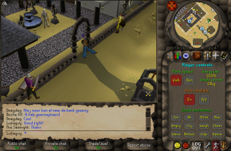

#89096 28 2005-08-07T21:41:42Z Templex I play only two hours a day now since NUMA is filled with


#89407 27 2005-08-09T04:37:46Z Templex Google Earth <---- Most useful thing you can think of.
#90283 79 2005-08-12T19:38:22Z Templex I am only a plain, ugly, statistic.
I'm just one of billions of people.
Is a contraction one shortened long word?
#90285 538 2005-08-12T19:46:36Z Templex ... Looks like you took a photo of a marble floor then colorized it. It's okay but the name looks stamped on

. 8/10
My sig was made in ten mins (to all those who wonder).
#90287 19 2005-08-12T20:21:59Z Templex ^Has a moderately mischevious avatar.
#90289 15 2005-08-12T20:29:44Z Templex ... At the moment I know English and 3/4 Indonesian

I plan to take German.
#90295 21 2005-08-12T20:48:41Z Templex ^Never even made a DDA before.
#90303 18 2005-08-12T21:06:36Z Templex I rated stalag-might a 4/5
Mantra in G-Major a 3.5/5
Rate
Cavernous Cave and
Chipping it Off please. (Both need two more votes)
#91005 5 2005-08-14T20:27:48Z Templex ... That's exactly the same level I'm stuck on. I decided to start playing the actual N levels two days ago (about 1.5 columns a day I beat

)
I keep on slipping on those stupid round blocks

#91007 7 2005-08-14T20:40:32Z Templex Hmm... Well, I don't have any jokes in my mind at the moment, but the only funny thing I can think of is an IRC transcript from bash.org...
<scirDSL> I hated going to weddings. All the grandmas would poke me saying "You're next". They stopped that when I started doing it to them at funerals.
#91009 148 2005-08-14T20:48:33Z Templex (dot dot dot)
Anyways... Hi. I'm not that new to the forums... I've been reading it before I registered.
My name is Timothy...

(darn ugly name)
And I've been around since N 1.2. I first heard of it on the Apple website
I think all the noobs on NUMA are caused by overadvertising it thus causing noobs to come (but that's just my opinion).
#91011 9 2005-08-14T20:52:37Z Templex .... I don't see what's so good about it. (Grammar is making me flinch)
EDIT: Also, you double posted
#91013 6 2005-08-14T21:05:19Z Templex Formica, I didn't rate down coldcut's map because I was dizzy. It was a great tileset. In fact, I rated it UP.
EDIT: I never even looked at the map specter commented on
#91018 12 2005-08-14T21:11:20Z Templex If mithril never posted on this, I would've said exactly the same thing he said.
All my DDAs were rated down anyways, so I don't care about NUMA until a new voting system is up/the problem is fixed. (silently curses at those phantom zero-to-three raters)
#91023 543 2005-08-14T21:19:09Z Templex 4.5/10
Nothing interesting
(Mine hasn't been rated yet *hint hint*)
#91054 100 2005-08-14T22:04:32Z Templex #91056 14 2005-08-14T22:10:30Z Templex If mithril never posted on this, I would've said exactly the same thing he said.
You just did.
You know what I mean. Really, you should.
#91121 9 2005-08-15T01:26:24Z Templex .... I just checked the dates. His post is nine days earlier

And to think I never even looked at the map blood specter commented on...
#92522 42 2005-08-19T20:12:12Z Templex I gave Korbachev's thingo a 4.5/5; that was pretty nice.
Anyway, my latest work.
Twig 
EDIT: Rated maximo's map a 4/5. For self-explanatory reasons.
Rate
Nuts (because I love the name)
#92568 3 2005-08-19T23:02:23Z Templex Uh... I figured it out my second try and made the fastest my fifth try.

#92607 76 2005-08-20T04:17:28Z Templex 
N's laying down on a ... beach chair. 3D perspective is kinda hard to understand though.
P.S. You can get a bigger size N by right clicking in the .swf and clicking Zoom In... duh.
#92754 11 2005-08-20T18:58:34Z Templex I have Mac OS 9.2.2, Mac OS X 10.4.2, and on Virtual PC 7:
- Windows XP Professional SP2
- Windows XP Corporate SP1
- Windows 2000 Professional
- Windows 98SE

EDIT: Oh yeah, I also have a Knoppix boot CD, a PHLAK Linux boot CD, and three Morphix boot CDs.
EDIT-EDIT: All of these and I'm only 11

#92773 47 2005-08-20T20:30:54Z Templex On the main menu, press ` or \. Then press J... and so on...
Go read the Read Me. After all, it does say to read it.
#92776 2 2005-08-20T21:03:05Z Templex After playing all of them, I liked Uniquality the most.
About half of them, if I didn't know that you made them, I would've guessed that you made them
Some, I didn't like. Such as Leftovers, which is way too repetitive.
Asides that, I think it was... okay

I'd rate the whole packet a 4/5.
#92777 49 2005-08-20T21:10:50Z Templex Um... You rated two maps and posted three
Unless I'm missing something.
#92815 26 2005-08-20T23:15:50Z Templex :\
I have a: 800mHz eMac (Mac OS X 10.4) + Virtual PC7, 1.6gHz P4 Windows XP Professional (this one's uber stable, I don't know why), 2.8gHz P4 Windows XP Professional, 2.4gHz AMD64 3400+ Windows XP Home, 1.8gHz some-AMD Windows XP Professional, and a P3 1.6gHz Windows XP Professional.
Boy do I feel sad for you guys with no variety
EDIT: A typo.
EDIT EDIT: Virtual PC emulates fine, just don't try to play games on it. (Plus sound is absolute junk)
EDIT EDIT EDIT (ARGH): Since Macs are switching over to x86 processors, I doubt it'd be that hard to run .EXE's anymore. You'd be able to use the normal WINE + better speed than Virtual PC since it's basically native code.
#94989 80 2005-08-28T23:55:36Z Templex Rated MI 3/5.
Thwump's Revenge:3
EDIT: I just have to edit every post, huh? New linky.
EDIT EDIT: Curses. I accidently deleted Thwump's Revenge:3 after I released version four.
#95226 86 2005-08-29T23:32:09Z Templex stepself: I needed that gold because you can CHEAT without it.
Ask Maniak the cheater "I bork jooh levels!"
In 1337-speak. But I'm not fluent.'
EDIT: Wait no, I found version 2.
Quote
i b0rk 73h 13v31
#95231 20 2005-08-29T23:59:58Z Templex ...
You know what's weird? I've rated nearly all of the maps that's posted here before I saw this thread. (The only ones not rated being root of a tree and n squared)
High Speed Chase
Twig
I'll add more later.
EDIT: Whoops, typed a sentence completely wrong. When I get a custom title I want Sir Editsalot.
EDIT of the EDIT: Removed Twig. And updated HSC's linky.
#95278 88 2005-08-30T02:12:40Z Templex Why yes, you are. I edited it so it was uncheatable after he posted that demo. Before I did, there was no locked doors, gold delay, and trap door.
#95287 89 2005-08-30T02:24:51Z Templex Demo+Data for userlevels replay as to how to cheat

Kinda annoying that I get rated down for an anticheat measure by the way.
Incomplete demo, you get the idea.
Attachment (lost): post-10-1125368691.txt
#95740 102 2005-08-31T01:18:04Z Templex
Okay stepself I'll delete the old map and put one without the anticheat because you're one of those people I respect. Then again Mr.
Respectable Maniak made me put it in the first place...
And I'll edit my old post. Of course.
Middle school is taking up my time. I loved those elementary school days... Today was the second day of school and I already have my middle school horror story. One word: restroom.
#96311 39 2005-09-01T23:44:51Z Templex I play clarinet because I try to avoid choir and singing

BELIEVE ME I AM NOT THE SINGING TYPE.
And I want to play a synthesizer
Cause they can make nearly any sound...
Oh yeah, and I have a 600 dollar 84-key (I think) keyboard...
Yamaha DGX-505 or something like that. I think it's pretty decent. Although I have no idea how to play piano.
#96339 41 2005-09-02T00:24:41Z Templex I'd have on my tombstone...
"
http://harveycartel.org/metanet made me live a happy life."
Or something. So anybody that reads my grave will play N
#96965 78 2005-09-03T19:04:28Z Templex I'd like for debug mode to handle caps lock differently, as in when caps lock is on, it's frame by frame, and when it's off, it's normal play. This would help a lot since I switch from N to NUMA a lot when commenting, and I don't like to keep on pressing caps.
I had another one but I... can't... remember...

EDIT: I have another one but it's not the one I can't remember. What about the ability to set it to low quality? I can only do that on my Mac because Windows doesn't have a menu in Flash.
I have a really slow computer, and even in low quality I have around 60-70 ms/f. It'd help a lot to have that option in the configure menu because it's automatically set every time you launch N if you do in in the configure menu. But I have to manually set it every time I launch.
EDIT EDIT: Aha! I remember now. What about a map-making tip every time you open up Ned? And you can see all of them at a time by using a new hotkey in Ned or something?
#97036 25 2005-09-03T22:50:08Z Templex The Box - I think I'm gonna be sick.
Oh yeah, and all of my incomplete High Speed Chase builds were rated by somebody. Probably by the same retard. I'm deletin em all. They're useless anyway.
And that person also rated practically all of my old maps...
Removed em all

EDIT-EDIT-EDIT: I rated Ketrora and the second version both fives to balance the rate a long time ago.
#97042 81 2005-09-03T23:19:12Z Templex EDIT EDIT: Aha! I remember now. What about a map-making tip every time you open up Ned? And you can see all of them at a time by using a new hotkey in Ned or something?
For new mapmakers, that would be great. But, veteran mapmakers probably are aware of most of the tips that could be provided.
Well, you can have a checkbox that says, "Show on startup".
#97044 5 2005-09-03T23:21:18Z Templex Uh, yeah, flash always made a mac version.
So did adobe.
#97049 120 2005-09-03T23:34:33Z Templex
I burn the person/the steroids!
#97056 124 2005-09-03T23:53:50Z Templex Got eat'n in a food eating contest.

#97066 530 2005-09-04T00:04:21Z Templex Blank
#97068 345 2005-09-04T00:06:20Z Templex crabby
#97270 30 2005-09-04T18:10:31Z Templex Crud! I think someone's stalking me! Now like all of my rated maps are rated down

#97273 140 2005-09-04T18:18:28Z Templex
Got ran over
Btw thats a screeny from ROSE Online which is now down.
#97276 32 2005-09-04T18:26:02Z Templex I have a hunch that rsty is stalking me, but I don't have any semi-conclusive evidence.
Cause I like gave contructive criticism on every single map he made. I think he took it the wrong way. And now I'm afraid because he might stalk me more.
Oh yeah, and even if they delete your post ur post count still stays
#97347 145 2005-09-04T20:58:34Z Templex 
Castlegear knocks down those signs.
#97348 189 2005-09-04T21:00:18Z Templex ^Is a human.
....
I hope.
#97349 11 2005-09-04T21:05:01Z Templex First post:
Yay.
First map:
Yay.#97367 5 2005-09-04T23:08:22Z Templex I get a 404.
Cake? I want some cake!
"It's a 404 you idiot!"?
Wow, thank you captain obvious!

#97369 15 2005-09-04T23:14:42Z Templex I almost never remember my dreams, even though you do every night.
By the way someone told me that most people dream in black-and-white. I dream in color...
And most dreams I've been having lately were nightmares. I haven't had one for a long time so I can't remember. I'll tell you about a dream when I have one.
#97370 58 2005-09-04T23:16:39Z Templex GOING BACK ON TOPIC....
Yes, I say they're a couple!
#97399 39 2005-09-05T00:43:21Z Templex Well he's a guest..
I don't think you should care that much whether or not he revived it.
#97403 50 2005-09-05T00:50:46Z Templex My cat loves N, but not my dog.
I crown you Off-Topic King.
Anyways, this is great news, I meant to reply a long time ago but I forgot about it, and I'll do anything I can to help you
#97404 39 2005-09-05T00:57:54Z Templex Oh man now I'm thinking about something...
I'm thinking about if a smiley like
was added, but it actually IS shaking!
If that actually comes I'm leaving this forum.
#97407 18 2005-09-05T01:00:38Z Templex You should be very, very afraid.
#98186 17 2005-09-07T00:35:57Z Templex Lol Grim, my "
Completed N .sol File" is much, much better than yours. It has two more secret modes!
By the way, visiting the website every time you need it is kinda pointless. In Windows, press CTRL + S. In Mac, press CMD + S. Hooray for offline-ness.
#98191 86 2005-09-07T00:41:20Z Templex What about some logo for Ned in like some corner? Big enough to see of course, but not huge so it doesn't distract.
EDIT: Or, how about a button in the User Levels section that says "Make your own map" or something?
#98197 170 2005-09-07T00:45:36Z Templex The universe disappears because a giant black hole destroyed everything.
#98238 9 2005-09-07T01:34:31Z Templex Lol I learned Algebra this summer. It's not that hard, just learning some concepts.
#98240 174 2005-09-07T01:36:55Z Templex Too late. The black hole already ate the universe.
And itself.
So now there's nothing.
And nothing can make anything.
#98244 34 2005-09-07T01:44:19Z Templex School started on August 29 for me
(flamey effect starts here)
I WILL BURN YOU DOWNNNN (flamey effect ends here)
Dude why homework? Classwork is better!
Speaking of homework I got a retarded amount of homework to do.
#98253 545 2005-09-07T02:07:59Z Templex Melanin
That's what he meant.
Black (as in black hair)
#98254 53 2005-09-07T02:09:53Z Templex I got a better one.
"You're next."
#98576 197 2005-09-08T02:53:13Z Templex You and your blast shield was attached to the rocket, sent to outer space, then the rocket self destructed.
#98578 46 2005-09-08T02:59:35Z Templex It's not fair. Alright, A period teacher is a old man.
He makes plain corny jokes and I have to LAUGH to keep him happy. Although he makes lame jokes.
B period teacher, old woman. I just get the impression she likes girls more and makes boys do more.
C period teacher, very boring. The tone of the voice is hypnotic. It tells you... "Don't listennnn toooo the teacherrrr...."
D period teacher, gives a lot of homework. Yeah.
E period teacher, some weird Mexican-Pakistani mix or something. Gives lot of HW.
F period teacher, just a tad bit too much homework.
#98788 7 2005-09-09T00:53:17Z Templex OMGWTFBBQ!!!
Like, every single ONE OF MY F'IN MAPS GOT RATED DOWN HALF A NINJA!!!
GRR!
The ones that are still rated four are not sniped.
EDIT: To be exact, HSC, Jump With Joy, Extract, Templex, and Glide Not Slide were bombed.
And some of my inactive-not-rated-anymore-maps were rated as well: Dancing Death, High Speed Chase, and Twig.
Whoever's doing this is really, really, agitating me. If they didn't really like the level, LEAVE A COMMENT DAMN IT!
EDIT EDIT: On a slightly off topic note,
A blatantly ripped off version of#98922 9 2005-09-09T19:01:03Z Templex Oh. I think he deleted it.
Thanks, rstyrsty. At least you have enough decency to delete it.
EDIT: By the way I think Jordan is starting to stalk me. Dunno. He brings up an argument in my retirement map.
#98924 2 2005-09-09T19:07:52Z Templex 
I barely even knew you....
Calls for a funeral.
Ah well I hope you have a good "real" life, whatever that is...
#98929 217 2005-09-09T19:18:50Z Templex He gets addicted to Runescape.

#99083 6 2005-09-10T05:33:38Z Templex Oh my goodness. I am not even going to COUNT how many NaNs in there.
And the real reason for this post:
You just revived a topic. Congrats.
#99252 21 2005-09-10T20:44:36Z Templex Atto
As a coincidence, it will work for the competition.
#99253 12 2005-09-10T20:46:45Z Templex @New sig:

I already did justice to Killer Sea Serpent.
#99281 3 2005-09-10T22:00:43Z Templex Uh, "50 Shareware Games"?
N's not shareware!
Hooray anyways.
#99711 32 2005-09-11T20:32:30Z Templex Starcrossed, R_R's submission's originality point's are 5/10 and mine are 4/5. You added 5, instead of 2.5. Or you added 4, instead of 8.
In other words the fractions aren't the same.
#99755 34 2005-09-11T22:16:19Z Templex A dedication, something to put in sig, and a favor?
#100472 66 2005-09-14T03:43:22Z Templex Up to three, right?
So that's Atto and:
Extract
Jump With Joy
Err, replaced with Resilient Forest.
#100668 32 2005-09-15T00:58:11Z Templex Yeah, the latest one is 10.4.2.
I was a hardcore Windows fan til I tryed a Mac.
#100674 35 2005-09-15T01:46:29Z Templex I just tried that right now.
It changes to an Eject button.
Then it does nothing after you drop it on the eject button.
#100808 70 2005-09-15T20:11:32Z Templex Starcrossed, you're doing fine. But you have some trouble with math.
And by the way, where's those other judges?!
EDIT: Oh yeah, and yes, you did it wrong in Bigblargh's thing. He's supposed to have TEN POINTS LOWER.
Fun-ness/fun factor/whatever - Sure is fun... Um. Jumping around, but once you get out, its just BANG! Done. 10/20
Ninja rating - 3
Fun-ness/fun factor/whatever - Its teh boring when you get out, but the walljumping IS quite nice... Um. Yeah. 10/20
#100950 75 2005-09-16T03:44:31Z Templex On the Appearance, what do you mean by consistency? Do I have to do a repetitive pattern to get high marks?
And yes, I made the flow that way on purpose. Good solid floor is much too easy.
The only way for me to make it difficult without adding objects was of course by tileset, so that was exactly what I did.
Originality, I think the sheep herding part is pretty original.
Oh well, we all have our different tastes.
If you really just didn't like it, then I'm sorry
#100951 21 2005-09-16T03:46:39Z Templex Pff. This stinks. My dad won't let me give out my phone number.
But, what if the Canadian government calls to make sure they're real phone numbers?!
#101114 41 2005-09-17T02:29:47Z Templex Advantage to Mac - You can zoom in on N. Its true.
Hey look! I can zoom in too.
ZoomPlus
I'm also sure there is a variety of other zoom programs for Windows I can find quickly and easily. In fact some of those other ones might work better.
You are out of touch with search engines, man.
Yeah, you need a 3rd party program to do so.
#101272 5 2005-09-17T20:27:27Z Templex Burn!!! Yes, get him off! /me slaps rstyrsty with a giant, virtual trout.
#101976 90 2005-09-18T23:45:08Z Templex Templex adds one more map.
Resilient Forest
It's a jump only.
EDIT: Newer URL which fixes a bug.
#102080 191 2005-09-19T05:22:01Z Templex Rated bigblargh's thingy a 4/5. It was very fun, and I can tell you put some effort in it. But it has some room for improvement. Don't ask me what to improve, I'm bad at telling stuff like that.
Resilient Forest
A jump-only map.
#102204 3 2005-09-19T22:40:52Z Templex I TOTALLY agree with macaddict.
We Mac users hate Windows users because Windows users hates Mac users.
Maybe because of jealousy!
P.S.
Windows is a pane.
#102253 3 2005-09-20T00:53:48Z Templex Maybe...
This might work or might fail disasterously.
#102259 10 2005-09-20T01:03:08Z Templex To be honest, I think he would be proud that his buy a mac sayings are all being placed into one neat thread for all to see.
#102261 5 2005-09-20T01:05:38Z Templex Okay, well not disasterously.
If a person only needs like 3 votes, and he gets sniped then and gets a low ninja rating, he might be discouraged by it.
Lots more can happen asides unencouragement... Just an example.
But, of course, if they're sensible enough not to care about the rating...
#102265 12 2005-09-20T01:13:10Z Templex Macs do crash. Nothing is perfect. Yes, not even Linux.
But so far in Tiger, I haven't had a hitch yet, except for the annoying permissions bug in Finder.
Gotta use chmod instead
I only had a kernel panic ONCE in my 3 years as a mac user, and that was in 10.2.8.
#103731 373 2005-09-26T02:23:45Z Templex ^hasadarksig.
#103733 5 2005-09-26T02:31:10Z Templex Yes, it's down. Not just you.
All 0 seconds xD
#103758 12 2005-09-26T04:27:44Z Templex Lol...
Evil_Bob is a friend of mine and he went up because he deleted his bad maps.
And it happened to me before, no biggie. I got over it in like, A WEEK!
#103760 382 2005-09-26T04:30:34Z Templex ^teh spaminator but I ain't helpin by posting this
#103899 11 2005-09-26T22:09:01Z Templex WTF
THESE GUYS ARE SCARRING FIVE YEAR OLD'S LIVES!
Angry mob supplies coming right up.
IP ban em all. Retards they are.
#104348 8 2005-09-29T01:12:27Z Templex I think this would be a great idea.
Mist? Same thing as the flashlight effect.
Lag? Well, by the time this is implemented, there will be faster computers available.
#104350 13 2005-09-29T01:16:21Z Templex Well, I know Eldrial is still alive for sure. He commented/demoed some maps back around the 15th or something.
#104392 10 2005-09-29T04:53:10Z Templex It'll spring up a new breed of maps! Make lots of inspiration for me so I can spit out one map a day!
And I don't see how mist will make "leaps of faith". It just has to be implemented right.
And about noobs misusing it, make it
very hard to use, so most idiots won't be able to implement it!

#104888 4 2005-10-02T05:32:59Z Templex HSC
My fourth DDA and only KRADDA.
Yes, I'm terrible at DDAs.
#104889 138 2005-10-02T05:34:23Z Templex http://numa.notdot.net/map/13209
I was replying in The DDA Thread.
#105040 2 2005-10-02T23:01:08Z Templex You should add after 4:
List all the possible failures of all solutions.
#105071 18 2005-10-03T00:44:44Z Templex Since I can't find an uncompressed version of ASCII Matrix... I'll just host it.
http://doofusturtlecomics.cjb.cc/ascii-matrix.html
I wonder how many people haven't seen it yet..
#105084 21 2005-10-03T01:34:31Z Templex I have no idea. I found it here...
http://abstract.cs.washington.edu/~renacer/ascii-matrix.html
I saw it a long time ago, just thought about it right now, googled intensively, and landed there.
#105115 14 2005-10-03T03:23:45Z Templex Arachnid said something a while back on IRC about the cookie still being stored in their browser or something.
#105119 23 2005-10-03T03:31:48Z Templex Digitboy, you *really* didn't need to point that out.
#105120 21 2005-10-03T03:35:08Z Templex I like jelly. It's... more solid and a bit more chewy.
#105126 17 2005-10-03T03:40:46Z Templex JFlash, no, just the opposite.
The Remember Me cookie is still on their computer.
#105132 19 2005-10-03T03:48:09Z Templex How do you suppose NUMA can invade the computer and tell the cookie to begone? They'll be effectively banned when the cookie on their local machine gets wiped when it expires.
EDIT: More specifically, exactly a year after they checked the Remember Me option and logged in.
#105311 7 2005-10-03T23:53:54Z Templex It was an excellent DDA, especially since the tileset was never intended for a DDA.
Man, things like this happen to me and every one on the top 20 pretty often.
Who's doing it, and what's their reason? Jealousy? That sounds like a really stupid explanation to me...
And I KNOW that more than one person voted 0 on Wells' Rock. It also plummeted earthward down to 100 last time I checked
#105610 24 2005-10-04T23:05:42Z Templex Man, shadow, stop worrying! I've already stopped caring about ratings anyway...
Because 66%+ of my maps were sniped either a half or full ninja.
And I got rid of most of em, because I wanted to post better versions, then realized I didn't have any copies of them anymore. Oops.
The only one that survived was Cavernous Cave.
EDIT: And I'm ahead of blackwolf because I don't spam crud maps

#105681 7 2005-10-05T04:02:57Z Templex Weather: N00b heavy as usual, but quite a lot of great maps considering the time of year.
No, it's cooled down a bit last time I checked. There's still some shrapnel of crud maps flying through the sky though.
Anyways, I think this is a good idea and I'll be sure to contribute... After I do my homework, which I haven't started on, and I need to go sleep in an hour
#105682 4 2005-10-05T04:04:45Z Templex Man, now you're like acting similarly to your cousin, being offensive for no reason.
But anyways, it's 'Time out'. You'll be able to come back... I think.
#105688 9 2005-10-05T05:14:03Z Templex LOL!
I never realized you edited that map to make my bday map

#105691 145 2005-10-05T05:16:40Z Templex #105785 118 2005-10-05T22:37:40Z Templex I agree that some judging has been pretty retarded (esp. GW's no offense).
But it's not enough to make me stop being in this competition.
The purpose is to have fun... And I want to be judged so I know what to improve in future maps, it's like commenting times 10.
#105787 28 2005-10-05T22:45:29Z Templex Nearly forgot about this thread
This will be the post where I will keep my list.
Resilient Forest [
jump only]
Wells' Rock
Pixel Stream
EDIT: Added Pixel Stream.
EDIT-EDIT: A new link for Resilient Forest.
#105790 17 2005-10-05T22:49:49Z Templex I still don't get what's so funny about de-opping channels.
I wonder what you were thinking when you did that.
Maybe a burst of insanity, I dunno. That's Maniac's job though.
Everyone that wants to get in IRC, heed my warning: You will lose many things, including your mind and your virginity.
#105792 441 2005-10-05T22:51:26Z Templex ^lonely
")
#105794 29 2005-10-05T22:56:01Z Templex Problem:
NUMA n00bs aren't educated enough about N and how to make good maps.
#105795 7 2005-10-05T22:58:14Z Templex A little question:
Why is this in Fan Programs?
#105798 69 2005-10-05T23:01:16Z Templex I think this shouldn't really be in B&T.
Anyways, the original purpose of this topic was how awesome microwaves are
Those tricks are awesome...
And I did microwave foil before, just some blue sparks, nothing else.
#105806 3 2005-10-05T23:59:05Z Templex It is so totally n-oying! Especially whe-n N-Gaged does n-joy! It's n-raging! It's n-ormously overused! We must ba-n-d up to destroy the imbecile pu-n-s!
#105810 40 2005-10-06T00:06:10Z Templex I'm ready to accept any philosophy since I'm kind of an unwritten slate of Four-Fold Empirical Existentialism. I also got lots of empty space in my sig to put a big flashy line of text.
I also know what the word defenestrate means
#105850 8 2005-10-06T04:19:58Z Templex Mentioned in what? The magazine? If so, mind sending a picture?
#106028 5 2005-10-07T00:19:20Z Templex So what, he got ya back. And I don't see how a prank is worthy of a ban.
#106031 33 2005-10-07T00:26:55Z Templex Another problem.
Some noobs go about commenting on other people's maps, giving crud advice that will actually make them worse instead of better, an example would be Chaotix. He's giving advice that'll lead noobs to the wrong direction. Not really a concern though.
Another problem.
Ratings don't reflect the actual map itself, they're mostly based on the author's popularity(hehe, I'm innocent!), overratings, underratings, and eh, cheating.
#106069 121 2005-10-07T02:42:55Z Templex *gets a little bit irritated at judges*
Where are you guys?!
#106072 55 2005-10-07T03:03:02Z Templex Yeargh, spam! (Maniac's post, that is)
Quote
(22:33:51) GamingWolf: Templex is going to have to like eat his hat now.
(22:34:26) GamingWolf: Wait a minute... does it say JUMP ONLY?
Referring to
Feriofunkal Forest.
#107425 3 2005-10-12T02:16:01Z Templex Digit, next time, please just use Command + Shift + 3.
He's running mac on windows (should be obvious in the About This Mac dialog box)
Me computer owns joo! [/sarcasm]
A bunch of apps open
And about my Mac.

#107435 46 2005-10-12T02:37:12Z Templex I'd quickly get a sledgehammer and break both the screen and the console.
Did you use the toilet in the past hour?
#107448 37 2005-10-12T03:21:42Z Templex If N gets banned, I'm moving.
Schwarzenegger's terrible. Go back to your acting, Mr. Governator.
I don't get why they censor "bad" words. I mean, I've already known "the f-word" since what, kindergarten? Censoring doesn't work, plain and simple. You got:
Da dictionary (children's dictionaries have penis), da internet, the books, and plenty of shirts that say "Don't f*** with the future".
There's no point to censor anything else as well.
...And yes, I know about that mod. Read it on the news when doing homework.
Ew... CG pron.
#107449 155 2005-10-12T03:25:05Z Templex ...you suddenly can jump a lot farther, higher, aim better, and pretty much everything else that comes when you understand physics a little.
Oh yeah, and when you try pretending that the elevator floor is a bounceblock.
#107451 505 2005-10-12T03:27:13Z Templex ^Not known what his OS is
#107452 9 2005-10-12T03:28:14Z Templex I just did.
His name on numa's Musicwumusic right?
#107453 3 2005-10-12T03:30:02Z Templex I like peanut butter and jelly outta all of these. I don't know the name of my favorite sandwich.
Jigger: Peanut butter and jelly
How can it be jam if it's jelly?
#107458 92 2005-10-12T03:42:56Z Templex Since I have absolutely nothing to do for the weekends, I'll sign up to do one.
#107459 2 2005-10-12T03:44:32Z Templex They've gotten photos of giant squid.
Can't be possible if I made em extinc -- I mean...
#107460 507 2005-10-12T03:47:23Z Templex ^Wants something from me. Autoreply: I can't fulfill your request at the moment now. Please fart after the beep. *beeeep*
More like, I'm procrastinating like a Maniac. It's 8:30 PM and I haven't started on my homeFUN (my music teacher calls homework that) yet!
EDIT: what I meant by my previous post is, Mac or Windows?
#107465 9 2005-10-12T03:52:02Z Templex I back up the data right before the first playtest. But I've lost data so often this way. [boss mode key] (tab) + Q = ARGH!
They're right next to each other. It's a great idea.
#107468 308 2005-10-12T04:00:05Z Templex Is your name Timmy or something?
#107469 157 2005-10-12T04:02:39Z Templex ...you draw n and n levels all over the place
...you are scared of the microwave
...you want a slow metabolism
...you hate iron peroxide
...you think about concepts for maps
...you think about anything having to do with N
...you suddenly pay attention when someone/something says ninja
Blargh, I do that too! To EVERYTHING.
#107479 12 2005-10-12T04:36:43Z Templex Okay, James is Musicwumusic. *repeats to himself in an effort to remember*
You're blackwolf... 84!
#107480 4 2005-10-12T04:38:25Z Templex Fries can cause cancer.
#107482 4 2005-10-12T04:40:38Z Templex It's the lyrics to that weird numa dance thing.
Hello [on a cellphone], greetings, it's me, an outlaw,
I ask you, my love, to accept happiness.
Hello, hello, it's me, Picasso,
I sent you a beep [cellphone signal], and I'm brave [or strong],
But you should know that I'm not asking for anything from you.
You want to leave but you don't want don't want to take me, don't want don't want to take me, don't want don't want don't want to take me.
Your face and the love from the linden trees,
And I remember your eyes.
I call you [over the phone], to tell you what I feel right now,
Hello, my love, it's me, your happiness.
Hello, hello, it's me again, Picasso,
I sent you a beep [cellphone signal] and I'm brave [or strong],
But you should know that I'm not asking for anything from you
#107700 9 2005-10-12T22:58:29Z Templex #107739 20 2005-10-13T01:24:14Z Templex Earthquakes are caused by a god underneath, that's holding earth up. Because he's scratching when he's itchy.
#107748 313 2005-10-13T01:43:38Z Templex I FOUND IT!
It's in the Introduce Yourself Thread.
Hello, Phil.
#107758 31 2005-10-13T01:59:32Z Templex Hamburgers
Do I rule or does Templex rule?
#107773 2 2005-10-13T02:12:59Z Templex Would you mind making a new one that's in userlevels format?
#107784 5 2005-10-13T02:39:56Z Templex Oh, never mind. I already made one myself.
#107785 34 2005-10-13T02:42:03Z Templex Science
Cookie or milk?
#107815 25 2005-10-13T04:18:56Z Templex The sun has sunquakes
#107816 315 2005-10-13T04:24:03Z Templex First person to tell five undocumented features about the Mac.
It has to be good features, not like "BootX is locked! omglolol!"
#107834 5 2005-10-13T05:35:10Z Templex Well, they say they're losing money because
you should've paid for your copy of whatever product it is, but you didn't, while other people did.
They actually don't
lose money. They just didn't
gain money from you.
I do believe it's ethical because they're ripping you off anyways, they deserve it
#107836 39 2005-10-13T05:36:49Z Templex God.
Homework or homefun?
#107837 317 2005-10-13T05:37:31Z Templex FEATURES of the mac. Not its community, etc. The OS itself.
#107840 29 2005-10-13T05:40:43Z Templex Parts of the ocean glow brilliantly at night sometimes.
#108060 440 2005-10-13T23:00:12Z Templex Ew, Maple Story.
#108094 3 2005-10-14T00:19:08Z Templex *does that really stupid SpongeBob 'whoo thing*
WHOO!
WHOO!
WHOO!
Great job!
#108199 3 2005-10-14T06:48:20Z Templex No, I'm glad you confessed and you are forgiven.
At least you're honest about it.
But hey, I'm sure we all suspected your maps were overrated. I have always suspected that for a very, very, loong time.
#4765 1 2005-10-14T07:43:11Z Templex Basically, you have to judge a map in order to post a map. Every map can only be judged up to two times.
Fill out this form for the map you're judging.
The focus of getting judged is knowing what's wrong with their map, what was good about that map, and getting better at map-making.
Design (Appearance/Neatness) :: ?/10
Comments about the design go here.
Difficulty (on a scale of 0 to 10) :: ?/10
Comments here about the difficulty of the map and why it was that difficulty go here. 0 means extremely easy while 10 means extremely hard.
Originality/Creativity :: ?/10
Comments about the originality and the creativity of the map go here.
Fun :: ?/10
Comments about super-happy fun time here.
Overall :: ?/10
You just describe overall what you liked about the map, what you hated, what to do/not do next time, etc.
Other
This one doesn't have a rating. Put everything that you want to say that doesn't fit in the above categories here, such as lag.
Ratings aren't added up, as this isn't a competition. Also, if you added difficulty up, it wouldn't be fair. You can provide a link to the map or attach a txt file. I don't have any maps that I want judged, so next person that posts their map gets a free judging.
#108360 28 2005-10-14T23:40:24Z Templex #108398 590 2005-10-15T02:25:48Z Templex ^JF
#108762 9 2005-10-16T19:21:49Z Templex What? This is all confusing me.
On the other hand it's great that BW got unbanned.
#108765 610 2005-10-16T19:31:01Z Templex ^i have no idea
#109231 70 2005-10-20T00:57:19Z Templex Anyway, so Keron was needing some help on his homework...
Quote
<Keron_Cyst> Find the absolute value of the complex number: -4 + 3i
5:52:49 *** Templex has changed the topic to “http://numa.notdot.net/map/15823”
5:52:57<Templex> shameless plugs, yup.
5:53:08<Forty-Seven> 4.5.
5:53:17<Keron_Cyst> How did you get that?
5:53:22<Forty-Seven> For Granite Shake.
#109266 74 2005-10-20T03:18:32Z Templex I've never heard it being used by you...
....
#109381 6 2005-10-20T20:55:59Z Templex NOO!!
*clings onto stepself and lets himself be dragged on the floor*
Another one down. *sigh*
#109487 6 2005-10-21T03:49:43Z Templex Hm. How's about:
A rather difficult jump-only mine jumper that's foresty
#109492 8 2005-10-21T04:20:26Z Templex Y'know, all brambly and such.
#109600 13 2005-10-22T00:59:01Z Templex Bye, TDL
How many people have left already for pete's sake!
*I don't care about pete.
#110343 83 2005-10-25T05:25:30Z Templex Uh, yeah, there's some writing in -1000 px font during the initial launch of TriviaBot that says that it isn't fair, err. Yeah.
So I'm innocent and not responsible for all your hair-pull-outs over "The answer was
FIVE"
Because I'm not the owner of it... Uh, yeah.
#110534 10 2005-10-26T00:37:43Z Templex A fast demo will suffice.
Lunahelixious#110543 5 2005-10-26T01:05:21Z Templex No, that Remember Me checkbox isn't the problem.
If you don't check it you'll be logged out when you close your browser.
Make sure that no one disabled cookie support on your browser.
#110544 334 2005-10-26T01:08:12Z Templex sun turns green and 'splodes

#110547 33 2005-10-26T01:20:03Z Templex *becomes very picky and decides to post a demo*
You can go through this oneway.
Demo for Freedumb that shows a potential cheat.
Attachment (lost): post-10-1130289603.txt
#110572 51 2005-10-26T05:13:08Z Templex Wood.
Why is e=mcc true?
#110762 3 2005-10-27T04:13:43Z Templex nooooooooooooooooooooooooooooooooooooooooooooooooooooooooooooooooooooooooooooooooooooooooooooooooooo - Well, you get the idea.
Post a farewell map or something when you can manage...
And yeah, school is evil. I have math homework today, had an entire hour to work on it, not even 1/4 done, due tommorow, etc.
(that was both for the leaving thing and the math)
I have seriously got to lay off N and get some help, my grades are slipping by 5%...
And I was late to school by an hour a week ago because I was procrastinating, playing N, until midnight, then I started on my homework...
It's been nice knowing you, Mr. I Didn't Post A Jump Only Demo On RF.
Hope to see ya in the summer. It's going to be a long school year.
#110763 9 2005-10-27T04:19:40Z Templex Eeew... Who would ---- --- to a GAME?!
#110766 10 2005-10-27T04:30:15Z Templex Once upon a time there was this kid in band,
But all his N maps were NaN'd.
He was so sad
That his maps were so bad.
So one day,
He decided he would no longer go on,
and he sunk himself in the bay,
and now his legend lives on.
Made in less than three minutes.
#110767 6 2005-10-27T04:32:46Z Templex Starcrossed is respected?!
#110772 3 2005-10-27T06:57:44Z Templex We're all at one point or another failing our schoolwork and/or not getting enough sleep and/or is very sleepy during the school day and/or never gets homework done and/or has no life and/or plays N like crazy and/or did I say have no life?
#110773 3 2005-10-27T06:59:24Z Templex The way N is made, no, you won't be able to do that.
#110774 11 2005-10-27T07:01:21Z Templex I think this has been suggested at one point in time before, but still a great idea.
Especially since I'm stuck with this stupid 800mHz macintosh that runs N at a *whopping* 16 ms/f.
...
(that's if it's an empty map)
...
...
#110775 2 2005-10-27T07:05:31Z Templex Start the episode over, and try to get through the levels faster or get more gold, as you'll save or get more time that way and will be able to timely defeat this level.
#110777 4 2005-10-27T07:13:38Z Templex Hehe yeah, I hated that episode... And that level in the screenshot, when I first got to it, took me about 45 minutes to beat... o_o
#110778 12 2005-10-27T07:15:39Z Templex The ninja is the strongest. He can jump 4x his height, carry all that gold, wallclimb, move fast, wallslide, and totally adheres to basic physics
#110781 162 2005-10-27T07:35:27Z Templex Perhaps he used the poser to make that ninja on top of the tank.
#110782 14 2005-10-27T07:38:25Z Templex Uh... It's against his concept?
Besides he has to be strong enough to carry the gold.
#110975 16 2005-10-27T22:44:34Z Templex *incoherently insults/mumbles/rages at jflash*
And if my HW isn't even 1/4 done in an hour it's pretty long.
#110998 321 2005-10-27T23:47:05Z Templex Well, since it's the best attempt by far, sure, you're the king. I expected something more like around hidden keyboard shortcuts and such
#111003 168 2005-10-28T00:05:11Z Templex Its funny how killer has more posts than you templex.
That's cause I don't spam.
...
Much.
#111004 7 2005-10-28T00:08:25Z Templex Or maybe he resized his N window.
I do that often.
#111005 4 2005-10-28T00:15:00Z Templex Konfabulator is a different coding. Dashboard widgets are plain old HTML with JS and some twists, so they're easier to make.
It's a great idea. I have an ImageShack widget, a FTP widget, why not a Numa widget?
Oh yeah, and I also have a Garfield widget.
...
...
#111186 338 2005-10-29T00:23:22Z Templex Off topic, but was that pic made by Terragen? (Sgt. Poptart's)
#111223 2 2005-10-29T05:45:45Z Templex Quite easy. Just replace the "browse" in the NUMA url with "userlevels".
Example..
examle.#111342 2 2005-10-29T22:53:51Z Templex Backgrounds, maybe. Custom tiles and objects, no. You can't because of the way N is made.
#111568 18 2005-10-31T01:12:19Z Templex It'd be nice as an unlockable after beating like two columns which isn't much.
#111570 7 2005-10-31T01:25:53Z Templex AlliedEnvy is on Linux as well and has the same problem.
#111708 97 2005-11-01T04:38:41Z Templex Quote
17:30 < Templex> :D :D
17:30 < Templex> o_O
17:30 < Templex> O_o
17:30 < Templex> o________o
17:30 < Templex> @___@
17:30 < Templex> =____=
17:30 < Templex> =___+"
17:30 < Templex> =____="
17:30 < Templex> +___="
17:30 < Templex> O_O
17:30 < Templex> D_D
17:30 < Forty-Seven> Wtf?
17:30 < Templex> BD
17:30 < Templex> #___#!
17:31 < Templex> :o
17:31 < Templex> :o
17:31 < Templex> BO
17:31 < Templex> Bo
17:31 < Templex> :D
17:31 < Templex> :D
17:31 < Templex> :P
17:31 < Templex> :P
17:31 < Templex> :A
17:31 < Templex> :a
17:31 < Templex> :3
17:31 < Templex> anyways, enough of that smiley spam
17:34 * Forty-Seven hits Templex with a giant smiley.
Good ol' imitating the guy with the mallet.
#111710 8 2005-11-01T04:41:10Z Templex Anyone got a my space account?
Is that a waste of a topic creaton or what?
No, I don't. Myspace is stupid. And is a great tool for stalkers.
#111833 47 2005-11-02T00:29:34Z Templex Me being part Chinese, hating grammar mistakes, and stupid people all add up to not a very good thing.
And I think Atticus was joking.
#111834 775 2005-11-02T00:31:17Z Templex ^I have nothing to say.
#111836 2 2005-11-02T00:40:31Z Templex You can't change any assigned keyboard configs asides the ones in the Configuration menu.
#111838 180 2005-11-02T00:42:32Z Templex Quote
<script LANGUAGE="JavaScript">
From some work on my personal forums.
It's supposed to be <script language="JavaScript">
Anyways...
http://numa.notdot.net/user/Atticus
#111889 3 2005-11-02T04:11:50Z Templex Bye. Good luck in real life.
(rants in corner about how everybody's leaving and how it's not fair)
#111892 30 2005-11-02T04:32:54Z Templex My goodness, just get Adobe ImageReady (comes with Photoshop).
It
is free, if you know what I'm talking about

#111895 10 2005-11-02T04:34:43Z Templex Why can't you download? It's virus-free and is just a Flash projector.
#111909 33 2005-11-02T07:01:52Z Templex Well, it depends on what you want to do with ImageReady. I find most things easy, but I'm not some sophisticated animator-thingy.
#111974 2 2005-11-02T23:40:47Z Templex Well, I think Sendy's Thriller was 5/5 for quite a few votes..
...
Until idiots who rate down maps for no reason come.
#111975 11 2005-11-02T23:46:47Z Templex At least Yanu is gone..
#111984 2 2005-11-03T00:59:51Z Templex GEEZ, WILL YOU READ THE WEAPONS TOPIC?!
#111987 2 2005-11-03T01:04:01Z Templex *evil laughter*
Haha. One pixel luck.
#112004 2 2005-11-03T02:43:54Z Templex No problemo..
(considering that I wasn't affected by the royal dick behavior)
#112007 25 2005-11-03T02:49:30Z Templex It doesn't hog that much resources. Usually I don't have any widgets open until I need them.
And you can disable Dashboard via TinkerTool.
Also, Dashboard widgets are essentially slightly different HTML with some JavaScript thrown in, and some images (.gif, .png, you name it)
It's not going to be hard to make.
#112164 3 2005-11-03T23:02:48Z Templex Windows users like to bash Mac users because they're jealous.
Windows is a pane in the glass.
I was a hardcore WindozeWinbloze fan for several years, til I got my Mac.
I got a Mac because I did some research and thought, "Heck why not, I'll buy a Mac."
Macintosh is better than Windows.
The Apple logo is bitten.
http://xvsxp.com is a great resource. The totals, however, do not mean anything, as the scores aren't weighted.
EDIT: MA probably thought Xairu was a Mac user because he's cool
#112167 154 2005-11-03T23:10:04Z Templex Did anyone even notice my post saying I wanted to do one?
#112174 5 2005-11-03T23:25:56Z Templex http://resexcellence.com
I posted like two desktops there as astro1798 (newest one under Stylish)
Yep, me stinking really badly at image creation.
#112176 2 2005-11-03T23:33:11Z Templex John Howard is the end of the world with his dictator-ship-ness-thingy-ma-jigger.
#112185 3 2005-11-03T23:58:18Z Templex ...and you'll also win some of my used underwear!
That is plain nasty.
#112190 158 2005-11-04T00:06:24Z Templex Part XII: Starcrossed
Part XIII: formica
Part XIV: Barbagel
Unless something has happened to change this in some posts that were posted that I'm too lazy to read, it should be that.
#112194 7 2005-11-04T00:11:14Z Templex Mackerels*
And that's because they're not made
specifically to discriminate
#112210 12 2005-11-04T01:18:59Z Templex Agreed with Maniac.
And people like the Mac enough that someone makes an account called macaddict_17.
Say, where's windowsaddict_17? Windows users don't love their box (sexually) enough to be huge fans.
#112211 9 2005-11-04T01:20:57Z Templex Well, since us Americans are quite ignorant of global news, I have never heard of John Howard until I read this thread. Which is why I have no evidence.
#112212 7 2005-11-04T01:21:57Z Templex Amen. But I don't think it's fair to rate a map of a genre you don't like lower. It's discrimination.
#112222 14 2005-11-04T02:05:22Z Templex Did you use a new mac? Like, at the earliest, made in 2003 and Mac OS X 10.2. The old macs were terrible.
#112228 16 2005-11-04T02:09:39Z Templex Probably. But you don't have the Mac hardware
#112231 3 2005-11-04T02:12:57Z Templex Just a little informational: It doesn't matter what version of Flash you have, as Flash is bundled with N, and N will only launch from that version.
#112233 5 2005-11-04T02:14:41Z Templex Yeah, that's happened to me hundreds of times. Like right now. Which is why I'm not posting any decent maps anymore.
#112235 7 2005-11-04T02:25:18Z Templex You can do this in frame by frame.
You can't see rocket tails and zaps and explosions, etc in slow mo by FBF.
#112256 18 2005-11-04T04:31:58Z Templex I must say that Mac OS X Tiger is by far the best Mac OS.
Bad experience? Get a newer Mac.
#112257 2 2005-11-04T04:33:02Z Templex Well, if you had a lot of gausses, I could perfectly imagine...
"AAH MY SCREEN TURNED BLACK WITH CROSSHAIRS!"
#112258 2 2005-11-04T04:33:41Z Templex I'm actually not sure, but this has been discussed before..
#112270 114 2005-11-04T07:38:18Z Templex nevermore
Maniac has some weird thing called Maniak-itis that spreads through spit, I'd rather not catch it...
Bob the Builder or Patrick (in Spongebob)
#112271 20 2005-11-04T07:39:27Z Templex Hey guyses, Im a windows user. *waits*
Gee golly, Atticus, I can hear the rumbling of stampeding feet this very momen - OW! HEY! STOP TRAMPLING ME!
#112448 8 2005-11-04T23:42:23Z Templex The amount of super fast Macs.
#112536 6 2005-11-05T07:42:03Z Templex The giant explosion idea gave me an idea...
A laser that's always firing, continuously sweeping back and forth a set amount of degrees.
#112648 15 2005-11-05T21:14:34Z Templex Yes, blue being weird as usual.
#112651 650 2005-11-05T21:32:42Z Templex Awesome.
8/10 as it lacks color.
#112656 28 2005-11-05T22:09:13Z Templex Submit Geomorph.
But move the bounceblock closest to the ninja's spawning position so that it doesn't touch the homing turret, and reduce the amount of drones by a little.
As for Celtic, there's no chance of close calls, and is fairly boring considering that all you're doing is zooming around the level.
#113045 21 2005-11-07T03:38:18Z Templex Aye.
It's obvious that he's sniping other people since people who left negative comments on his maps have complained that their maps have been sniped.
Maybe we should consider banning doghouse as well.
EDIT: Oh yeah, and don't expect to see me for the next coupla days. Read the bottom of my signature.
#113046 37 2005-11-07T03:43:34Z Templex If you need _any_ comparison at all, which you don't need anyways since Mac are obviously better
, then check the website that I previously listed.
Again, the total scores do not mean _anything_ since the scores aren't weighed when totaled.
http://xvsxp.com#113049 7 2005-11-07T04:27:41Z Templex ...won't hurt you. Physically, at least.
Not true if you have some program that connects to a giant mallet that wacks you when you get a rating of 4 or less.
People complain when their 4.5 maps go down half a ninja. For goodness sakes, 4 is still a wonderful rating.
#113050 2 2005-11-07T04:28:43Z Templex No. There wouldn't be any point to actually beat the game then.
#113051 3 2005-11-07T04:30:24Z Templex What I did for my icon was basically take a screeny of the N logo in the main menu, magic wand all the trash out, and resize to 128x128.
#113052 46 2005-11-07T04:32:07Z Templex moopies: NO. Weapons are basically contradicting the principle of N.
1. Inverse the caps-lock behavior in Ned.
2. A button to Ned in the main menu/screen.
3. A way to destroy noobs for all eternity.
#113053 3 2005-11-07T04:33:00Z Templex RTFM.
(Read The F***ing Manual)
#113054 63 2005-11-07T04:34:17Z Templex Eh, in my state (read the bottom of my sig), and being stuck on my dad's computer not being able to put anything on it, I need a web IRC client.
And the one Eldrial posted doesn't work because you can't change the server and channel it connects to.
EDIT: Woot, 200 posts.
#113056 185 2005-11-07T04:38:28Z Templex Happy birthday, Patrick.
(hands him a box of burden)
#113057 37 2005-11-07T04:44:45Z Templex Resexcellence.com
Great Mac resources site.
#113062 11 2005-11-07T05:31:59Z Templex Haha, oh man, I squirted out my water through my nose when I saw "flesh code"
#113514 13 2005-11-10T06:57:30Z Templex I wouldn't mind, but it better be an easy-to-remember URL or else I'll forget it and stuff.
The convenience of Numa is that it's an all-in-one package, you don't need to go zoomin around the _entire_ intarweb.
#113653 17 2005-11-11T00:13:42Z Templex I agree with R_R.
He has a point.
Your maps are _way_ too hard for noobs and me as well.
That may be why you're getting rated low.
Or maybe not.
It might just as well be those little toddlers without diapers peeing over your work.
#113686 125 2005-11-11T02:35:07Z Templex White.
Refrigerator or freezer.
#113739 21 2005-11-11T05:06:14Z Templex ...this map. That sort of thing really irritates me.
HAHAHA that guy's a moron... His comments on his own map are HILARIOUS! xD
Rated that a zero without even looking at the full image preview, by the way.
#113740 32 2005-11-11T05:07:38Z Templex We're ever so closer.
You posted this at around 97,000. A bit too early if you ask me.
#113741 4 2005-11-11T05:10:55Z Templex It still uses Flash 7 because N uses the version of Flash that is bundled in the projector.
Can't you just make a flash 8 projector anyway? I know, it's all buggy and stuff, but a sneak peek would relieve some of my curiousity.
#113743 134 2005-11-11T05:12:38Z Templex Uh... ER?
A constipated donkey or an emu 'taking a vicious dump'?
#113744 787 2005-11-11T05:13:59Z Templex Granted, but he double posts continuously anyway.
I wish I had all the good things in the world.
#113746 9 2005-11-11T05:15:05Z Templex astro-of-the-Icewater-monitor
Are you implying that you want me?
EDIT: Wait, haha, I get it, icewater monitor.
Sure.
#113747 136 2005-11-11T05:17:09Z Templex Agh, sorry, I've forgotten over the days what the rules were.
*rereads*
#113751 21 2005-11-11T05:31:02Z Templex Hello. I myself am _kind of_ good at N mapmaking, I'm usually around one of the top ten authors on Numa.
That dance was hilarious the first time I saw it, but I think Afro Ninja is funnier
I'm positive you'll have a good stay here, you seem like a good new guy.
#113753 3 2005-11-11T05:35:07Z Templex Or better yet, read the manual.
#113764 8 2005-11-11T06:00:26Z Templex Meh. X-Boxes are PCs stuffed in a different box with some minor modifications.
#113766 2 2005-11-11T06:01:51Z Templex WHOO!

#113771 11 2005-11-11T06:13:08Z Templex I know, this is going to cost me some late school assignments, but I usually do what I'm supposed to do.
#113776 6 2005-11-11T07:08:25Z Templex Oh yeah, and in case you guys didn't notice, "Well done everyone!" is linked to something...
A blatantly ripped-off javascript thing.
#113952 22 2005-11-11T22:34:42Z Templex MA, I *might* not be able to judge if my condition persists (read the updates in the bottom of my sig)
Sigh.
I HATE WATER! CURSE YOU, DHMO!!!!!
#114008 28 2005-11-12T02:24:15Z Templex No, about the ice bowl thing, I didn't say anything about water...
Just "maybe it burned out with too much dust"
And as for the cable modem, all is well about that for now.
#114051 11 2005-11-12T05:52:53Z Templex What about tileset inverse? Like, all the dark-gray tileset area becomes light-gray and vice versa.
#114060 5 2005-11-12T06:28:04Z Templex For some reason, the forums just logged me out...? 
Ehehheehe.
It might *not* have to do something with something that's *not* a link in my signature.
Cool bug by the way, it's happened to me before, only that I always died on impact.
#114065 126 2005-11-12T07:02:13Z Templex BR: I don't think that's funny, that exposes how retarded some people can be in the inside...
#114204 3 2005-11-12T19:12:34Z Templex Make a hooligan of yourself?
What do you mean, 'members'?
#114205 131 2005-11-12T19:17:50Z Templex Shut up, man. I was just defending my name.
Not you, BR.
#114395 4 2005-11-13T03:49:13Z Templex Haha, as far as I know, his spring of original ideas have dried out.
Not that he directly said that in IRC, but he could have, not sure. My memory is bad.
#114396 9 2005-11-13T03:51:25Z Templex You can also make drone eyes by editing one variable...
And as for false tiles, there's many more than just slash.
#114397 10 2005-11-13T03:55:26Z Templex I've learned not to care about ratings.
Let them pee over your work, who cares.
Don't let them get any satisfaction.
A MUCH worse sniping happened to me around late August...
Every single one of my maps were rated 0 to 1 by at least two people.
Bumflap there.
Again, ratings are just simply a way for annoying idiots to get to you
I don't think that you should have to actually care.
Just my oodles of minutes of writing and thoughts.
#114406 30 2005-11-13T04:06:17Z Templex Back on topic of choice of tetris and _not_ ROM discussion, my favorite would be Naked Cowboy Tetris.
...
#114410 365 2005-11-13T04:08:02Z Templex Can somebody rate Tidal Wave?
Well, you have to rate another one of these maps first.
Read the first post of this thread.
#114415 848 2005-11-13T04:13:09Z Templex ^poptart lover?
#114417 255 2005-11-13T04:24:34Z Templex Hello; hope you enjoy your stay here.
#114444 39 2005-11-13T06:26:42Z Templex School fricking rocks!
And why is that? Just wondering.
Wouldn't you rather be at home, drinking a nice warm cup of tea, playing N?
#114712 9 2005-11-13T23:23:27Z Templex Me being a mindless idiot in IRC yesterday, I think that this won't work.
Everyone will rate maps carelessly to increase their score on this 'scoreboard'.
I think it's fine the way it is right now.
There is no quick fix for NUMA.
#114714 16 2005-11-13T23:29:18Z Templex @R_R: ...
#114731 39 2005-11-14T00:29:44Z Templex #114733 20 2005-11-14T00:34:55Z Templex That - is - [nasty].
#114742 263 2005-11-14T00:53:13Z Templex ...as Nin10dork64, but it was used in this forum!
It's more than likely that the name isn't actually used, and that a bug in forumer isn't letting you register as that. You should PM Keron Cyst for a name change.
#114743 2 2005-11-14T00:53:46Z Templex What are 'tileset masters'?
#114744 14 2005-11-14T00:54:19Z Templex Is it just me, or did Wikipedia go down?
#114745 16 2005-11-14T00:57:22Z Templex I suggested this just a few days ago, I think, but someone probably already suggested it before me.
...
In other words, not a new idea.
#114772 136 2005-11-14T02:20:08Z Templex Okay, since GamingWolf said he didn't want to judge anymore, glenno said that I'd take his place. I'll start judging some time this week...
EDIT: However, I need a list of what GW already judged, and who will judge my maps in place of me?
#114774 31 2005-11-14T02:24:14Z Templex I have a feeling that this contest will fail, but not in the TOLODC sense.
No one is submitting any maps.
#114780 5 2005-11-14T02:36:26Z Templex The problem is, many many noobs are now putting their non-n-art maps under the N-Art category. *sigh*
#114787 7 2005-11-14T02:50:14Z Templex Use the Edit button.
If it's already rated, you'll have to resubmit.
#114789 16 2005-11-14T02:51:33Z Templex Huh. It's fine now...
I guess it was just a temporary thing.
#114792 57 2005-11-14T02:53:07Z Templex Dex22: Like what?
#114794 22 2005-11-14T02:54:37Z Templex We live just because we do.
#114796 4 2005-11-14T02:58:41Z Templex What do you mean by 'jumping'?
You hold your jump button to get higher jumps.
Check out N-Vision and the help section in N.
#114798 3 2005-11-14T03:01:26Z Templex The path is:
C:\Documents and Settings\(Username on computer here)\Application Data\Macromedia\Flash Player\#SharedObjects\(Random ten characters)\localhost\n_14b_userdata.sol
#114811 61 2005-11-14T03:42:31Z Templex Windows Crashed on Me.
#114812 5 2005-11-14T03:44:58Z Templex No problemo.
#114813 3 2005-11-14T03:47:14Z Templex View the highscores for a path?
This is one of the harder levels in such an early episode.
N was made to take a while, so be patient.
#114845 101 2005-11-14T06:18:23Z Templex I-Can't-Believe-It's-Not-Butter donkey dick.
#115041 16 2005-11-14T23:51:59Z Templex I've beaten four columns of N, half done in others. Then I lost my soul!
I think that some few people are cheating their way up the authors list.
I like the pink ninja the most.
One plus one is two - bazillion.
Sometimes I act retarded in IRC (watch, someone will reply to this statement and say "Amen.")
#115042 2 2005-11-14T23:54:53Z Templex First, wrong section of the forums.
Second, read the manual.
Try pressing ~ or \.
#115043 50 2005-11-14T23:56:28Z Templex Popularity...?
*shrugs*
55/100
#115048 3 2005-11-15T00:04:24Z Templex HATE! HATE!
#115051 690 2005-11-15T00:11:01Z Templex Yeargh, DBZ is cheesy.
8/10
#115053 2 2005-11-15T00:16:49Z Templex People would still specifically vent their anger at specific people for various reasons.
But this *does* eliminate the competition. Numa stands for "N User Map Archive". Numa is not a damn competition, but a map archive.
So snipings purely to put you up higher in the list would be eliminated because there's nothing to snipe for.
I don't know. The league table was kinda fun if everyone kept it honest. You could see how well you were doing in mapmaking (if everyone rated everything fairly).
#115054 16 2005-11-15T00:19:32Z Templex 너는 영국안에 말하는가 Yorosi_un_ka? 우리는, 너 본다 너가 말하고 있다 무엇이라고 이해할 수 없다. Google 통역은 너가 말한다 무엇이라고 게다가 이렇게 우리를 번역하기 에 좋은 이해하지 말라 고 이지않는다
I hope you can understand that..
#115058 3 2005-11-15T00:26:13Z Templex You should have saved the level to your hard drive, you know.
A good practice.
I'd say that it's your fault; you could have asked someone like LV to fix it.
Also, you generally shouldn't type into the level data box. This is generally caused by pressing L or something but not clicking out of the data box first.
#115062 53 2005-11-15T00:29:29Z Templex *laughs at daddaluma's response*
79/100, you're kinda known for your forum RPGs.
No, I am not new! *puts hands on hips*
#115066 19 2005-11-15T00:30:43Z Templex How am I the worst thing to ever happen to NUMA's author list? Should I point towards coldcut?
#115067 7 2005-11-15T00:32:02Z Templex Templex, once again, don't be a hypocrite.
Ugh, I just tend to be that way. No way to avoid it.
#115073 9 2005-11-15T00:42:23Z Templex Most of my older maps don't meet my standards anymore.
It feels like I have some, well this is awkward and not very fitting, "responsibility", to make sure that people enjoy my creations...
Yes, I will admit that I have done that in the past. Stupid idea, not doing it again.
But sometimes I remove maps because they're plain crappy test levels that after a while, I think, becomes waste of bandwidth, like Pixel Stream Skinnable Edition, that time-freeze thing, etc.
#115075 22 2005-11-15T00:43:23Z Templex What on earth has coldcut done?
Some weeks ago, he deleted all but three of his maps to go to number one.
Argh, I'm frustrated and fed up with all these arguments... I think it be better for me to not post in these kind of things anymore.
#115329 16 2005-11-16T00:38:02Z Templex I'd try a bash.org-esque rating system, but this might work. Give it a go.
*lurks back into the shadows*
#115337 20 2005-11-16T00:56:47Z Templex I'd try a bash.org-esque rating system,
What's that? Anyone?
Well, if you visit bash.org, you get to vote on quotes. You press either + or -. If you press +, the score of the quote goes up by one. If you press -, the score of the quote goes down by one. The score isn't averaged, simply added up.
But that would still encourage rate-only, no-comment behavior, so... Just forget what I said.
#115339 76 2005-11-16T01:00:11Z Templex ...seems to be a good contributor.
Wha? Good contributer?
#115340 41 2005-11-16T01:02:13Z Templex I can just smell the smell of failure wafting in the air...
Don't worry, I'll get judging soon...
But, as my sig says, I'm 'leaving for a while' but I will pop by every now and then. Like now. And post in spontaneous numbers.
#115374 27 2005-11-16T04:38:22Z Templex Pat: That's basically the same as qdb.us rating, then?
Hmm. Might work. Sniping won't work too good, either.
I think I found a problem with the + - thing. You get a score only if people even see it. The more people see it, the higher your score will tend to be.
100 people see map A. The score becomes 83.
10 people see map B. The score becomes 8.
So, top rated won't work any more.
#115375 5 2005-11-16T04:40:37Z Templex If that is so, then this isnt it, because he couldnt interact with anything except for the floor. Not the bug you are describing.
It _is_ cheating death. You will only be able to interact with the tiles after cheating death in userlevels mode. However, in debug mode, or Ned, you can cheat death and still interact with objects and not just the tileset.
#115376 3 2005-11-16T04:42:23Z Templex Where do you keep your back up? Or is it possible that a periodic cache flushing wiped out your .sol?
#115377 125 2005-11-16T04:45:14Z Templex Bill Gates, Steve Irwin, and... Spongebob.
Do you ever think about waterfalls? Hundreds of thousands of gallons of water, rushing, gushing, spilling.
...
And Hoover Dam bursting.
#115381 35 2005-11-16T05:40:24Z Templex I haven't beaten any columns...
I've been kicked off N but I still play it secretly...
I still think it's funny when the limbs bounce around...
I believe randomly made tilesets have potential...
And here's the doozy: DO NOT HIGHLIGHT IF YOU ARE PREGNANT, HAVE HEART PROBLEMS, OR HAVE TRIED EXTREMLEY HARD TO BEAT N, STUCK ON A LEVEL, OR ARE BLUE_TERTIS OR SOME OTHER IMPORTANT N VERTERAN OR MARE OR REGAN, AND IF YOU ARE MARE OR REGAN, DON'T READ THIS, DON'T READ THIS, DON'T READ THIS, YOU WILL EAT MY FACE: I have a hacked completed soul, because I have given up at the game and only play it for custom levels.
Of course, you're gonna look at it now, aren't you? Just can't fucking help yourself.
GASP!
I already have one anyways
N is causing havoc in my school grades.
#115382 47 2005-11-16T06:03:52Z Templex Episode 5 is hard enough for me
Oooh yeah, that one got on my nerves first time I got to it.
EDIT: Well, I lost my .sol file... So I don't have any progress anymore
Hardest level? 29-something.
#115383 8 2005-11-16T06:08:55Z Templex Did you try refreshing the page?
Also, how did you post the first post?
#115537 6 2005-11-17T00:18:30Z Templex Did you just fart?
No...
Because when I looked at your butt, it blew me away!
#115539 13 2005-11-17T00:28:03Z Templex It doesn't matter if you register via Keron or via the built-in registration system here, the admins still can see your e-mail.
#115715 138 2005-11-17T22:36:18Z Templex By the way, could someone give me a list of maps that GW already judged, and ones that GW didn't? I don't want to look through these piles and piles of pages...
Or is there already a list?
EDIT: Actually there is one, but it's out of date.
#115728 4 2005-11-18T00:45:51Z Templex None of these choices are feasible without side effects, so I chose none.
Also, it's not against the rules to snipe, so technically, you can't be banned for sniping.
#115739 25 2005-11-18T01:28:06Z Templex Ehe. Exactly why you get a Mac.
Try making a new account on your computer, logging in there, and playing it there.
#115744 694 2005-11-18T01:43:21Z Templex List of animations is long. 8.244554858556846546321354684/10
#115750 10 2005-11-18T02:22:09Z Templex And kinda off topic, but, ben, your sig is kinda a bit too big. Or flashy.
#116225 140 2005-11-19T21:38:07Z Templex Only two today, I'm not /supposed/ to use the computer on Saturdays and Sundays. In other words, I need to keep the monitor cold and make sure that the ice water doesn't spill into it again.
Oncoming Traffic - TornadoTK
[amount of data] :: 5/5
Just less than half a line.
[originality] :: 7/10
Has it been done before? Yes. Has it been done like this? Not really.
[appearance] :: 3/5
Average appearance.
[flow] :: 3/5
Having to stop often to make for the drones is not my definition of flow.
[fun] :: 13/20
Fun, it gives me that "Mwahahaha, you can't kill me!" feel, but it's way too repetitive and awkward.
[ninja rating] :: 3.5/5
Nothing to say here.
[overall] :: 6/10
As I said it's too repetitive. <sarcasm>And you didn't put any gold in.</sarcasm>
[total score] :: 40.5/60
------------------------------------------------------
Hash - Red Reamer/Kashkin
[amount of data] :: 3/5
About 1/4 until the end of the line.
[originality] :: 6/10
This one is hard to say, because there's really no concepts going on. Just rocket dodging and whoopee flying.
[appearance] :: 3/5
Decent.
[flow] :: 4/5
What do you call whoopee fly-and-land asides flow?
[fun] :: 16/20
Really annoying when you die which is rather rare but still fun.
[ninja rating] :: 4/5
A composition of all the above.
[overall] :: 7/10
Another one of those age-old rocket maps.
[total score] :: 42/60
#116227 15 2005-11-19T21:49:00Z Templex I was surprised to see how many exploits IPB had by simply googling 'IPB exploit'.
All you need to log in are cookies containing your password hash and your member ID.
In other words, IPB is more holed than cottage cheese shot 100 times by a magnum.
#116228 3 2005-11-19T21:52:21Z Templex Do you mean something like an 'E' tile, only that it disappears and appears when you hit a switch?
#116232 708 2005-11-19T22:07:18Z Templex Black and red. Charming. It does get to the point however.
7.8/10
EDIT: Shortened my sig and made it more BBCode efficient.
#116235 181 2005-11-19T22:26:22Z Templex I'd like to do one.
I can make a pretty realistic foresty/rocky map.
#116914 198 2005-11-22T01:32:19Z Templex The Epic - Part XVIII - Encased Island
I wasn't too sure about this one, hope it's decent though.
#116916 15 2005-11-22T01:45:49Z Templex Speakers. You can't have a computer without speakers. No music, no games, no experience.
#116923 200 2005-11-22T02:00:14Z Templex Very fun map. But wasn't it Mark's turn?
No, Wheel took his place.
#116944 15 2005-11-22T02:53:41Z Templex I suppose this would require a lot of recoding to make it happen. The idea itself isn't all that great and has been suggested 4,675,159.97 times already.
The ninja doesn't cause _that_ much lag... Make a blank level with a drone and a ninja. Play the level. Remove the ninja. Play the level again. Not much difference in jittery-ness. It's the objects that causes all the lag. Also, if there were two ninjas, there would have to be two instances of every object, one for each ninja to interact with.
#116945 5 2005-11-22T02:56:39Z Templex Then that would make it "The wind blew the door shut, producing a dull sound that echoed, reminiscent of its owner’s recent demise"
Which doesn't make sense.
Great work, has no meaning to me though.
#116955 203 2005-11-22T04:37:33Z Templex EDIT: Gragh! Too many edits. Getting too confusing.
#116960 205 2005-11-22T05:31:12Z Templex You're XIX, not XXI.
#117084 13 2005-11-23T00:02:47Z Templex I suggest that you guys wait. If you can't, /msg Arachnid on IRC.
#117111 3 2005-11-23T01:12:54Z Templex Ouch. That's terrible.
#117462 717 2005-11-24T01:20:43Z Templex Pretty bland. 4/10
#117660 144 2005-11-24T22:25:51Z Templex Frankly for me, Numa has become so slow that I can't get past the home page. Blame Charter.
Also, the Windows computer I am on is rather infested with spyware, and N is way too laggy to have open with something else at the same time (web browser, Notepad, you name it).
I'm working on fixing up this hideous WINDOWS computer.
That, my friends, is a reason why you need to buy a Macintosh.
I'm getting a new Macintosh sometime next year (second-generation Macintel?)
#117663 721 2005-11-24T22:29:52Z Templex Pretty lame. No color, just strings of useless text... Especially the one about kirby.
4/10
#117702 146 2005-11-25T00:49:58Z Templex This computer hasn't had spyware for over three years.
It doesn't have any firewall or anti-virus or anti-spyware of any kind.
I'm assuming someone decided to use Internet Explorer instead of the other alternative browsers we have on this computer and totally got it screwed up.
Also, this computer is 1.6GHz.
Which is, again, why you need a Mac
My Mac is 800MHz, runs N about 20 ms/f.
#117720 149 2005-11-25T01:54:39Z Templex True. PowerPC, which is the processor that macintoshes use, is a RISC processor.
More efficient.
I'd say about 1.8GHz Pentium 3.
#117729 4 2005-11-25T02:15:23Z Templex The only thing a map has to be is fun, anyway. So we decided to start up this contest.
#117784 16 2005-11-25T05:46:15Z Templex Less talk, more submissions
I'm on a laptop at my bro's friend's house for a Thanksgiving party right now.
I assume that most people are too lazy to make a map for the contest before submitting their previous creations.
#118016 151 2005-11-25T21:29:06Z Templex Big deal, they're moving to Intel for a reason. The processors are cheaper and even though their raw processing power is less efficient than PowerPC, with the money you need to buy a 1.6GHz PowerPC, you can probably buy a Pentium 4 3GHz or the sort.
#118019 22 2005-11-25T21:33:26Z Templex Nope. There are plenty of maps that are good, but aren't fun. Quite a few of mine even.
That's like saying there's plenty of maps that have more than one line of object data in the TOLODC thread.
EDIT: And two submissons.
Low Bandwidth Ahead
Pixel Stream
Of course they look alike. One is much better.
#118065 25 2005-11-26T00:06:46Z Templex :: The Flow and the Flue - Niccus ::
[tileset fun] :: 24/30
Very speedy, however, I constantly crash into walls. The various parts of the tileset don't work together.
[object fun] :: 13/30
No. Simply not fun.
[fun together] :: 18/30
The objects just don't work with the tileset. Especially the switch in the middle with the one ways.
[total] :: 55/90
:: Jig - wellsj ::
[tileset fun] :: 24/30
The tileset is one of the most affecting fun factors here, is it not? But still, a jumper isn't all that fun.
[object fun] :: 18/30
The gausses and rockets and stuff made it rather fun, but without the help of the tileset, it's a lot less.
[fun together] :: 26/30
Together, it's action-packed speed-frenzied. But the jumper part is more a challenge than fun.
[total] :: 68/90
:: Racing Trilogy - macaddict_17 ::
[tileset fun] :: 23/30
Rush-deprived, just fast.
[object fun] :: 25/30
There's the adrenaline rush!
[fun together] :: 25/30
Speed with some elements of danger. I like it.
[total] :: 73/90
#118091 31 2005-11-26T01:35:52Z Templex Third submission of mine.
Speed City#118101 33 2005-11-26T02:10:52Z Templex :: Back N Forth - Deadly ::
[tileset fun] :: 8/30
No, no, no. None at all.
[object fun] :: 5/30
Just a bunch of enemies brunched together.
[fun together] :: 6/30
There's just no fun, at all.
[total] :: 19/60
REMOVED UPON REQUEST
:: ( [ ] ) - Patrick ::
[tileset fun] :: 23/30
Pretty fun tileset, yeah. Move around, supar speeday. Rush rush rush.
[object fun] :: 18/30
Objects top it off, but the tileset is most of it. The objects just give the danger element. I thought the gold placement was kinda odd.
[fun together] :: 23/30
There you have it.
[total] :: 64/90
:: Madman's Compass - Patrick ::
[tileset fun] :: 20/30
Very playpark-esque, yet very... bland.
[object fun] :: 24/30
All the objects working together... Very nice!
[fun together] :: 23/30
The tileset and objects work together really well. Stitched seamlessly.
[total] :: 67/90
#118107 35 2005-11-26T02:34:07Z Templex Okay, last submission.
Hopefully not too much points will be taken off for the objects fun.
Resilient Forest#118117 2 2005-11-26T02:59:37Z Templex ...
Whaat?
I like toast with chocolate butter.
#118263 55 2005-11-26T19:19:32Z Templex ...is it ok if I change the catergory of a map?
Yes, I suppose.
#118268 57 2005-11-26T19:30:29Z Templex Hey, I just noticed, we didn't settle on a prize for this contest yet
Ideas?
#118273 58 2005-11-26T19:53:50Z Templex ::
Nausea - bigblargh ::
[
tileset fun] ::
2/30
I'll be generous and give you two points for free.
[
object fun] ::
18/30
All you do is bounce around. Repetitive, and the fun wears out after a while.
[
fun together] ::
17/30
Pretty dull. It's like working at a toothpaste factory.
[
total] ::
37/90
::
A forest - krusch ::
[
tileset fun] ::
13/30
Pfft, practically none. Your tileset is like... a crippled old man without a wheelchair. How's that for a simile?
[
object fun] ::
20/30
"WHOOSH!" "WHOOOOOSH!" "WHOOOPEE!" YEE H - SPLAT!"
[
fun together] ::
23/30
This is the most important part. It's good to know that your objects and tiles are working together. They cooperate. They're nothing without the counter-part. That is one of the more important things you need to be able to do in mapmaking.
[
total] ::
56/90
::
Creschful - blazeraid ::
[
tileset fun] ::
12/30
Pain in the A-Dolla-Dolla to navigate.
[
object fun] ::
15/30
The rockets made it practically impossible for me. Stripping me of fun. Oh, look, strip poker!
[
fun together] ::
18/30
The rockets? Killed it.
[
total] ::
45/90
::
Extreme speed - KLUMPEET ::
[
tileset fun] ::
18/30
Pretty fun, yeah. If not bland.
[
object fun] ::
15/30
Nothing's that fun about the objects, really.
[
fun together] ::
18/30
The laser was kinda pointless, gave something for me to be distracted by and as a result killed. Being electrocuted by the thwumps which *seems* nearly impossible does give you a sense of ultimate frustration.
[
total] ::
51/90
::
Ominous - blazeraid ::
[
tileset fun] ::
19/30
Whoosh.
[
object fun] ::
17/30
Binadarg close-to-nothing-except-close-shaves. Ooh, look, pointless rockets! Shiiiny!
[
fun together] ::
18/30
Kind of plain, you know?
[
total] ::
54/90
::
celerity clip - pariah ::
[
tileset fun] ::
16/30
The tileset itself gave some interesting jumps, not much else besides that, however.
[
object fun] ::
22/30
The thwumps made it pretty fun, as well as the floorguards.
[
fun together] ::
25/30
Everything's seamlessly molded. Perfect unison.
[
total] ::
63/90
::
Acid Rain - Aju ::
[
tileset fun] ::
20/30
The jagged parts made it feel weird, the high-flying part made it thrill-esque (think M.J.), and it was kinda hard to get to the top half of the level.
[
object fun] ::
16/30
Uh, no, there's not much with the objects.
[
fun together] ::
19/30
The tileset was kinda bumpy and the objects did practically nothing. But Thriller! (by Michael Jackson)
[
total] ::
55/90
::
Lock Contract - Aju ::
[
tileset fun] ::
25/30
Pee-in-pants fast. Surprisingly.
[
object fun] ::
19/30
Catch me if you can, rockets.
[
fun together] ::
27/30
Gotta be one of the funnest, no doubt. Gives me that "I'm in charge, you're all weaklings, rockets! Mwahahahah!" feeling.
[
total] ::
71/90
----------------------------------------------------------------------------------------
Fixed several mathematical errors. That heptane last night didn't do me any good #118279 6 2005-11-26T20:41:50Z Templex What kinda terrible keyboard is that?
Looked everywhere? Sure it's not there?
Get a new keyboard.
#118281 5 2005-11-26T20:42:51Z Templex Is userlevels.txt in the same folder as N is?
#118282 7 2005-11-26T20:49:02Z Templex Geee! What a helpful post, Sucker! [/sarcasm]
As far as I know, Windows routinely cleans out your cache, which includes your .sol file. I advise everyone to back up their .sol file.
And get a Macintosh, it doesn't happen on the Mac!
#118285 3 2005-11-26T21:09:37Z Templex He's saying you can see where your maps are standing overall in comparison to all other maps in the form of a percentage.
#118295 37 2005-11-26T22:20:37Z Templex The thing that interests me the most is that according to Wikipedia, the PS3 will technically have 28.8 GHz of PowerPC computing power (
Wikipedia PowerPC article).
And that all of the consoles will use the PowerPC processor.
#118303 2 2005-11-26T23:11:11Z Templex Can you clarify the "only works when..." part?
#118582 73 2005-11-27T23:07:24Z Templex MA: I think it's up to four entries.
:: Plant-life - krusch ::
[tileset fun] :: 14/30
Nothing except a few tricks.
[object fun] :: 18/30
Pretty high-flying.
[fun together] :: 17/30
Bounce up, land. Bounce up, land. Bounce up, land.
[total] :: 49/90
#118586 7 2005-11-27T23:22:35Z Templex Yeah; too much popularity and exposure to the peoples.
I've been making less and less maps because I don't feel like it anymore if it's just going to be quickly assimilated into the heaps and heaps of the noob maps and pushed back 100 pages within an hour.
#119910 86 2005-12-02T23:48:07Z Templex Sorry guys, I was over at camp for the week. *gets judging*
*clicks View New Posts*
*hears processor explode*
#120176 88 2005-12-03T20:42:50Z Templex Uh, DOORDRAGGER, that's not exactly how you withdraw a map from a contest.
#120477 25 2005-12-04T23:23:00Z Templex OSX filepath is wrong. First, it's not backslashes. Second, you forgot the Users folder. Third, your hard drive isn't always called Macintosh HD. You can rename it. Thus, the proper path would be:
/Users/Short name/Library/Preferences/Macromedia/Flash Player/#SharedObjects/random series of letters and numbers/localhost
#120668 30 2005-12-06T00:47:42Z Templex Sounds good.
Around when should be anticipate release/beta/alpha/gamma?
#120697 2 2005-12-06T02:40:40Z Templex Are you serious? Do you need a good lenghty lecture on how .exe's do NOT work on Macintoshes?
Are you computer-literate enough to know that?
You need to download the Macintosh version, which is really near the Windows download link.
#120728 277 2005-12-06T02:48:25Z Templex He said Macs suck! Die! *takes out AK-47%*
'vent seen too much of him.
67/100
#120811 16 2005-12-06T05:01:49Z Templex Too hard? You need to practice more, dear boy.
That's like saying TYPING is too hard.
EDIT: Hilarious sad little moderator spoofing attempt, by the way. The only thing you'd fool is a dead banana that's blind.
#120814 5 2005-12-06T05:09:24Z Templex Oh.
I know this problem.
Download it using /your/ account. The problem is, an administrator downloaded it, and you don't have permission to see their files. You can see their names and all, but you can't open them. A solution would be downloading it using your account because obviously, you have permission to view your own files.
#120821 94 2005-12-06T05:31:03Z Templex Don't worry, settling back in to computer and got tons of HW.
#120822 7 2005-12-06T05:33:22Z Templex Oh, yeah. Totally forgot about the parental controls.
In that case, you're bummed.
As a last resort, you can play the hacked .swf ve4rsion.
#120830 9 2005-12-06T06:13:12Z Templex Best hosting site evar:
http://ihud.com
Only problem is that it goes down from time to time for days.
#120832 24 2005-12-06T06:20:20Z Templex Did you not see the big "STOP" sign in Brickman's post?
Or he stops spamming.
#120833 218 2005-12-06T06:21:47Z Templex #120834 68 2005-12-06T06:23:15Z Templex You're on a Mac. Okay.
I'd suggest getting your butt off Chatzilla and land on something like Colloquy or X-Chat Aqua.
#120980 40 2005-12-06T23:50:47Z Templex It'd be real great if we could get it to work, but that method just seems a bit silly and off. I think that Arachnid should have the ability to delete any map that doesn't live up to the standards of Numa. Anything with a ton of load time, or simply n00bish as crap. Obviously, he would also still do this for vulgar content, etc. I just don't know how this would work. I mean, what if a horrid map maker has 2 or 3 good hits, or like DDA's are the map maker's only strength, and everything else is just frighteningly n00bish. It just wouldn't work, IMO.
He has done this to extremely vulgar maps such as "N Sex".
But it's not his job to clean up Numa. It'd be too much work. He's not paid to maintain Numa, you know. Money's going out of /his/ pocket to keep Numa running. Let's see you clean up Numa without any pay and reason. bitesizeNUMA solves the problem because maps are selected, and not deselected. Also, it doesn't actually delete the maps on Numa because some people want to see noobish maps with promise, you know.
#120982 11 2005-12-06T23:59:05Z Templex Macaddict is going to butcher you from limb to limb.
Speaking of that, where's some of those Windows hate ones...

#121015 5 2005-12-07T02:27:39Z Templex From the left is easiest as you don't need any z-snapping to do.
By the way, don't double post like that, use the edit button.
You should do some more searching before starting a whole new thread.
#121016 54 2005-12-07T02:30:20Z Templex Quote
It's meant to be taken orally ..
#121018 1842 2005-12-07T02:46:23Z Templex Deadly Rooms of Death.
#121021 1844 2005-12-07T02:56:26Z Templex #121022 174 2005-12-07T03:00:37Z Templex Quote
Sweep I'm going to go to bed.
Sweep I hope that by the time I've woken up, someone will have gone to the trouble to vote. And someone will have tranquilized Templex.
Sweep And thrown him in a dark room.
Sweep And locked the room.
KinGAleX We all wish for that.
GamingWolf A magic lock
Sweep Maybe leave him a little bread though.
KinGAleX No bread.
Sweep A grape?
KinGAleX Half a grape.
KinGAleX No skin.
Sweep Half a rotten grape.
GamingWolf Half a pea
Sweep With no skin.
KinGAleX And no seeds.
Sweep And a maggot inside.
GamingWolf
KinGAleX And it happens to be a midget grape.
GamingWolf With no juice
KinGAleX Or goodwill/holiday cheer.
Sweep And let it be a deformed albino grape too.
Aw, how nice.
#121228 97 2005-12-08T01:09:55Z Templex Okay, two projects sitting on my back.
Someone else, take my place. ' ' ' ' ' ' ' ' Or maybe I'm just too lazy to do it :D *flees from the public eye for several years* Anyways, for the original purpose of this text. All must get a Mac.
#121267 66 2005-12-08T06:17:22Z Templex @templex
You know how when you hit quote, you get two sets of tags? One of them looks something like, replacing the ['s with {'s,
{QUOTE}
and the other looks like
{/QUOTE}
To get it to show somebodys name at the top, you put an '=' after quote, but before the end of the square brackets. For example, say I wanted to quote this paragraph...
{QUOTE=The Daily Llama}To get it to show somebodys name at the top, you put an '=' after quote, but before the end of the square brackets. For example, say I wanted to quote this paragraph...{/QUOTE}
Quote: The Daily Llama
And, done normally (in square brackets, as viewed in the normal "add reply" box when you try to, who would've thought it, add a reply, it looks like this.
There you go! It's quoting explained. Enjoy your future quotingness!
Yes, TDL, I do know, me being moderator of two IPB forums already for over two years. But I don't have the person who wrote that's name anyhow, and it's better without the name distracting from the quote.
*me begins shaving llama fur off TDL*
#121395 13 2005-12-08T23:54:14Z Templex Hacked, as in the Flash player projector got decompiled by any old Flash decompiler. It's surprisingly easy to do.
#121405 44 2005-12-09T00:19:22Z Templex TNG will be shareware, and NOT coded in Flash, so it'll be much harder to steal.
#121406 74 2005-12-09T00:21:38Z Templex o_o
Can't we get back to the original point of this thread now?
#121407 176 2005-12-09T00:22:35Z Templex *gossips behind sweep's back*
*mwahhahas as he will take over the world with ducky domination*
#121409 43 2005-12-09T00:24:39Z Templex IT was this nasty thing where there was a tilesetted female, and there's two jumppads, and you're going back and forth them into...
Well, I don't think I can really continue.
#121682 80 2005-12-10T05:44:27Z Templex Hehe, done idea, but still funny.
Here's a background I cooked up in about 45 minutes:
http://img275.imageshack.us/img275/9964/tree9uw.png
And here's the original:
http://coastal.er.usgs.gov/navassa/photos/...ke/TreeWind.jpg#121687 956 2005-12-10T06:22:40Z Templex ^pop tartars.
#121840 285 2005-12-10T18:15:23Z Templex *ahem*
EDIT: Oops, Sketch's does have stuff from well's map... Never mind
#121853 21 2005-12-10T18:45:36Z Templex EB, that's because he used NTools.
I made an animated gif showing both the raw NTools image and Sucker's version of it.
http://img453.imageshack.us/img453/3248/br...anavatar1ml.gif#121860 25 2005-12-10T18:55:51Z Templex Oh, okay, I see.
But is it allowed to use NTools to help you make tilesets for this contest?
Kirby: Is that an excuse just to increase your post count?
#121869 1852 2005-12-10T19:39:17Z Templex #122481 5 2005-12-13T00:53:53Z Templex Numa's had no problems recently as far as I know. Probably something on your ISP's side or having to do with being far away from the server (Canada).
#122486 50 2005-12-13T01:08:18Z Templex 01010111011001010010011101110010011001010010000001100001011011000110110000100000011011010110111101110010011011110110111001101001011000110010000001100101011011100110111101110101011001110110100000100000011101000110111100100000011000010110001101110100011101010110000101101100011011000111100100100000011101000111100101110000011001010010000001110100011100100110000101110011011010000010000001101001011011100010000001100010011010010110111001100001011100100111100100100001001000000101010001101000011100100110010101100101001000000110001101101000011001010110010101110010011100110010000001100110011011110111001000100000010101000110010101101101011100000110110001100101011110000010110000100000011011110111010101110010001000000110100001100101011100100110111100100001001000000101011101100101001000000111001101101000011000010110110001101100001000000110000101101100011011000010000001100010011011110111011100100000011001000110111101110111011011100010000001110100011011110010000001101000011010010110110100100000011000010110111001100100001000000110101101101001011100110111001100100000011010000110100101110011001000000110011001100101011001010111010000100001001000000010101001100001011010000110010101101101001010100010000000101010011001100110110001100101011001010111001100101010
#122488 19 2005-12-13T01:12:15Z Templex It'd be cool if you could hold "Ctrl" to inhale drones, then press down to swallow them. Then, you could have their powers.
What do you think, kirby?
Hahaha.
#122489 309 2005-12-13T01:20:31Z Templex Well, N was just how I knew the ninja, I didn't say it was his name.
And I basically meant 40/100, not -2/100. [/offtopic]
68/100
You don't know who Razorstar is?! Your own fault, you haven't been here long enough
#122503 2 2005-12-13T02:00:38Z Templex And you felt it was SOOO amazing that you started a new topic for it?
#122756 7 2005-12-14T01:34:08Z Templex It's true. Totally, totally true.
#122804 28 2005-12-14T03:47:16Z Templex I can't think of any better possible secrets than the current two. NO, DON'T SAY GUNS/WEAPONS!
Fitzey: Why are you playing 1.2?
#122806 25 2005-12-14T03:56:30Z Templex I like all of them the same, but the lie down pose tends to place his head in the wall.
#122807 30 2005-12-14T03:58:51Z Templex I see... Well, register first and I'll pm you "the details".
#122814 32 2005-12-14T04:17:37Z Templex My presented solution in my PM to you should work.
#122815 9 2005-12-14T04:24:40Z Templex I agree with both TripleTK and Baradabedejabalagal. And there's the possibility that people would dislike people with a low rating average.
#122816 5 2005-12-14T04:26:38Z Templex That metanet level is fairly well-known for being able to cheat death. Why did you feel the need for that picture? Did we not see what happens when you cheat death in userlevels ever before?
And please don't make a topic about something as stupid as this. It's not worthy of one. "OGMLOLOL I CHEATZORS DEATHZORS!11one!11" is one of those typical noobish topics.
#122817 4 2005-12-14T04:30:05Z Templex Flash isn't very easy to do, so don't expect to be making games rightaway.
#122819 47 2005-12-14T04:33:12Z Templex YOu don't go for girls? Are you gay?
Maybe he's too geeky to be interested in girls
#123008 3 2005-12-14T22:54:33Z Templex I thought that he /always did/ have a Mac
Yeah, that should help a lot but most of the heaps are demos/well known/shareware.
You might want to try
BZFlag out, although it's far from perfect.
#123010 3 2005-12-14T22:57:56Z Templex Yes, RTFM. Read the manual. You do that for real things, why not for things on the computer?
#123015 22 2005-12-14T23:47:53Z Templex Are you sucking up to wells or something by agreeing with him every breathing moment of your life? Cause that's what you seem to be doing, Jigger's BREJUS.
And how would it satisfy curiosity, unless you're one of those annoying nosy types of people that never mind their own business and were born as a result of an 'accident'?
The downsides are worse. You'll just have retaliation snipes to people that have a low average rating because one may suspect that the person with the low average rated /their/ maps down. It's a war. Which reminds me of that thing 'nid said. "May the dick-swinging begin."
#123029 8 2005-12-15T01:59:22Z Templex I'm surprised why barely anyone is on the poll, and why some people /are/ on the poll (Jigger and Evil, no offense). This isn't one of those pollable things.
#123566 10 2005-12-16T20:52:40Z Templex See you in four months. We'll all miss your HS pwnage. Or maybe not.
#123631 302 2005-12-17T00:05:39Z Templex Handy Roman numeral converter:
here.
#123634 6 2005-12-17T00:08:22Z Templex Guiseppi: What's the point of life, then?
No point, just cooler-looking.
#123636 20 2005-12-17T00:12:26Z Templex I'd rather recieve comments than votes. A comment is much more detailed in terms of what the reviewer thought of the map, what to do to improve, etc. Thus, I'd rather recieve a comment. If you made this topic because your maps are not recieving any votes, then forget it. Votes mean nothing compared to comments. I see no point in this idea except giving me less motive to vote and comment altogether.
#123637 2 2005-12-17T00:13:57Z Templex What are you talking about? Be a bit more clear as to what you mean?
#123638 6 2005-12-17T00:15:04Z Templex Yes, we can see it. And don't double post. Read the forum rules.
#123640 10 2005-12-17T00:20:31Z Templex My HS be 23, haven't tried much though. Monkey_man, I don't get what's so funny about the quotes in your sig.
#123644 7 2005-12-17T00:24:33Z Templex Guiseppi, he suggested it before Sweep made the bitesizeNUMA thread.
#123647 5 2005-12-17T00:26:38Z Templex You can just use bitesize.
I think 2 is the just right number. Leave it there. It won't make /that/ much of a difference if you change it to 1, and very few people will actually benefit from that change (you).
#123648 8 2005-12-17T00:27:19Z Templex Okay, WHAT WAS THE POINT OF THAT POST?!
#123649 3 2005-12-17T00:28:25Z Templex Will you people stop suggesting radical new enemies to N because nothing radical in terms of gameplay have ever happened or will in N's history?!
Either way, the idea is simply retarded.
#123651 3 2005-12-17T00:30:28Z Templex N's coded in Flash.
Plus you can configure your controller/joystick out of N (the thing's driver, etc.)
#123655 35 2005-12-17T00:35:33Z Templex I don't get why triple jumps are so much of an issue that it deserves a topic. And in complaints too? Complaining because of something you can't do... Which is pointless.
Ultima: If you're next to a wall hit jump the same time you hit the launchpad (make sure you're right next to the wall without sliding on it and you're facing the wall).
#123740 792 2005-12-17T02:42:24Z Templex 7/10
Feels crammed.
I'm curious as to what you all think about my heavily renovated signature.
#123743 5 2005-12-17T02:55:17Z Templex Do you have to press anything to die? If so, what?
Look in the Configure menu to see what the kill key is.
#123745 3 2005-12-17T02:59:07Z Templex For me, it's impossible to remember dreams because the more I try to recall details the more I forget... And I lose details rapidly after the dream ends.
#117583 (forumer) 40 2005-12-17T03:10:00Z Templex Quote: Starcrossed, Dec 2 2005, 04:26 PM
Hey, Jiggerjaw, I was just wondering how you are supposed to
Quote
loudly whisper
This would be a great addition to my book of contradictions.
You mean oxymoron?
Mine was thought up while in bed. Randomly.
And coincidentally, it's the name of a cult but pronounced different (Temple-X).
My name's pronounced Tem-plex.
#123758 23 2005-12-17T03:18:12Z Templex Guiseppi is the one spamming like mad with pointless posts.
Anyways, on these forums, .sol sharing is not allowed, it defeats the point of the game. Go and beat it. Geez.
#123759 16 2005-12-17T03:20:12Z Templex Gui, it was a misunderstanding. Sorry for snapping, was kinda agitated when I was posting. You don't have to snap back like that.
And what do you mean by pwned? I don't see how I got owned there.
#123760 17 2005-12-17T03:20:59Z Templex "got gold?"
#123778 19 2005-12-17T05:10:32Z Templex Gui steals
everything
Jiggargerawgajaw, changed my sig recently.
#123985 155 2005-12-17T18:20:29Z Templex The contest died. There you have it.
#123986 311 2005-12-17T18:22:24Z Templex Hey guys, I'd like to do another Epic map because I'm bored my ass off.
And it's Winter Break. Woot, two weeks of freeduhm*.
*none on weekends
#123990 2 2005-12-17T18:31:33Z Templex Um. Would you mind actually explaining instead of bursting in tears along with an unreadable sentence?
#123991 9 2005-12-17T18:36:50Z Templex 36-4.
And that other apple-related one.
#123994 4 2005-12-17T18:43:40Z Templex Guiseppi gains 27 asshole points! Only 173 more until level up!
Rofl. Rofl my waffl.
Anyways, it's one of those "invisible ninja" things. Even though there's no ninja on the map, if you press enter, there's an invisible ninja that spawns. And all you're basically doing is telling the rocket to follow the ninja except that you're constantly killing him/it/her and moving him/it/her around.
#123999 5 2005-12-17T19:00:42Z Templex That's right, Tim scored a draw while ouncing his tiredness to Arf.
#124000 9 2005-12-17T19:02:24Z Templex You're the one that's making no sense. Be clearer instead of rambling like a purple-half-assed baboon.
#124014 4 2005-12-17T19:35:51Z Templex Nick, collect the dang gold. Your time carries over each level until a new episode is started.
#124018 13 2005-12-17T19:39:12Z Templex Look, we don't understand a word you're saying. It's like you're speaking in Eskimo.
BE CLEARER
what map sorry i know what ned is but that's it
That made absolutely no sense. What do you mean by "what map"
Organize your sentences more, use punctuation to separate thoughts, so we can UNDERSTAND WHAT YOU'RE SAYING!
#124022 794 2005-12-17T19:47:16Z Templex The microsized grid in your image makes it more interesting IMO. 8.8/10.
Fixed the maps bit a little. Whatever you do, don't click the m or the s in "maps"! But you can't change link colors.
#124028 16 2005-12-17T20:00:41Z Templex I do not know these things I just started
If you don't know why you started this thread then why did you start it?
EDIT: Use Ned. Read the .txt files that came with N.
#124029 25 2005-12-17T20:09:05Z Templex It's not a problem with E-mails. The forum just says that the username you've chosen has been chosen already. In order to register with that name, Keron has to do it manually for you.
#124033 2 2005-12-17T20:14:11Z Templex First. You edited out all the stuff two minutes after you made your post. IMO, you did this just to increase post count.
#124040 20 2005-12-17T20:36:43Z Templex Or in the case of Ned, it's v 1.1.
#124041 27 2005-12-17T20:41:05Z Templex Nevermore has no control over the B&T, plus the B&T/BAT allows swearing/cussing, so probably you're allowed to there. But still, the word gay shouldn't be used as an insult.
#124807 318 2005-12-19T20:54:40Z Templex So I have to do one now or does BS do one?
#124811 805 2005-12-19T20:57:54Z Templex Too christmas-y for me
8/10
And blackhawk, mind telling people what to do to improve their sig instead of giving a flat-out rating?
#124826 12 2005-12-19T21:45:59Z Templex Left shift. I find it the most comfortable.
#124832 49 2005-12-19T21:52:33Z Templex I can completely edit .sol files as well. It took me about fifteen minutes to figure out everything. So I don't really see how it's hackz0ring.
#124902 16 2005-12-19T22:34:12Z Templex Guiseppi, you can disable that Shift-five-times StickyKeys thing if you look around in its settings.
#125022 26 2005-12-20T02:32:50Z Templex Shift is just right. The button is large enough and the positioning is great. I too used space bar, but I had the same problems as KA. Space also isn't as responsive and reliable as shift, although it is quite one big button.
#125318 325 2005-12-20T21:47:41Z Templex I get XXX...
I was working on the map just now. Then when I playtested it, N froze with a framerate of 6 ms/f, which is technically impossible. I didn't copy the map data to the clipboard. And now N won't open. Gotta get a new copy. *sigh*
#125348 83 2005-12-20T22:51:00Z Templex ...number 4?
Kinda dark muddy bluish?
What good things would happen if Bill Gates were to suffer from a heart attack?
#125377 330 2005-12-21T00:15:38Z Templex You didn't take the last two columns of tiles from jigger's map.
#125379 5 2005-12-21T00:16:59Z Templex Search before you make an entire new topic about it. Searching for the word "teleport" would do.
#125391 6 2005-12-21T00:32:27Z Templex I personally hate DDAs. That's all I need to say.
#125393 85 2005-12-21T00:34:22Z Templex Yeah, to jack all the money.
If all of a sudden fungus starts growing on you in the wrong places, what would you do?
#125709 18 2005-12-21T22:09:00Z Templex At least it's great that you realize that you're actually spamming.
I see no point in having a high post count, which is the main reason why I don't spam... as much
#125711 40 2005-12-21T22:14:24Z Templex Up arrow doesn't "feel" right to me. It's kinda misleading. I expect that when I press the up arrow I go straight up, not... sideways at the same time. Up is best for games without too much physics.
#125712 13 2005-12-21T22:19:58Z Templex PM me with a screenshot of all the levels you have unlocked right now, Orad. I'll help you out.
Yeah, *some* people here can edit your .sol if you provide enough proof that you actually beat the levels.
#125726 198 2005-12-21T23:37:32Z Templex Hehe
That was the greatest stupid thing EVAR
#125728 200 2005-12-21T23:39:52Z Templex It's a great example of our stupid, abrupt IRC topic changes.
#125730 2 2005-12-21T23:41:54Z Templex Demo data doesn't come with N, you need to get some from NUMA or make some yourself (in userlevels, that happens when you beat a level; that box thing will have the map data and the demo data).
#125731 357 2005-12-21T23:42:54Z Templex BS11's map doesn't take the two columns from Jigger's map at all. Have any of you even noticed?
#125732 5 2005-12-21T23:45:38Z Templex I can't quite recall me having a deja vu before, but I have had stuff happen in my dreams that became true (only when I didn't tell other people about the dream).
#125734 70 2005-12-21T23:47:02Z Templex Looks awesome, except the bsNUMA logo's mine-frame thing.
#125737 91 2005-12-21T23:57:45Z Templex Long and healthy so I can get more powerful Macs for a longer time.
If you were stuck with a G5 Quad, what would you do on it, about it, etc.?
#126012 362 2005-12-22T21:13:53Z Templex Okay - So now I do the great adult-video-number thing?
#126013 14 2005-12-22T21:17:31Z Templex Yes.
EDIT: And one of the people who voted No is probably himself.
#126014 75 2005-12-22T21:20:38Z Templex Even though it is an N-themed website, I'd prefer a solid red border. It's equivalent to a bunch of scrunched-up red circles all over the border. Plus, part of the mines are cut off.
And even though it is a logo and not a map, it's still clustering.
EDIT: And if you're not sure whether you want to let a person in, why not have some voting system so that people with bNUMA accounts already can vote to let the person in?
#126016 7 2005-12-22T21:23:56Z Templex Action.
I personally hate DDAs. When I play N, I want to experience and interact. If you want to watch something, watch a movie.
#126018 9 2005-12-22T21:28:18Z Templex Why do you ask such pointless questions AND MAKE ENTIRE NEW TOPICS ABOUT THEM?
Because N is popular. Which leads them to Numa. Which leads them to el forumos.
#126020 3 2005-12-22T21:34:26Z Templex It wouldn't really help that much. If there's some n0ob map with 10000000 objects in it, and the map data has to be displayed on the browse page along with 9 other maps...
Also, I don't click many of the maps on the Newest page and play them. It's unnecessary map data downloaded to my web browser.
#126035 35 2005-12-22T22:04:23Z Templex You sir, Ermac, are a 'tard. I don't mean to be harsh or anything, but that's just the truth. I was laughing like hell reading your posts. MK sucks. I'd say a lot more than that, but this isn't the B&T, so I'll stop there.
#126071 38 2005-12-22T23:28:57Z Templex I suppose he likes MK because all he has to do is mash random buttons to win. He has no skill asides that. Or maybe because he said that N was rubbish BEFORE HE EVEN FRIGGIN TRIED IT OUT. Asshole.
And yes, there was no hidden text after that sentence.
#126098 78 2005-12-23T00:49:24Z Templex But it would find people's opinions. Those that you have already granted a bitesizeNUMA account. They should have good judgement for letting other people in as well, won't they not?
#126101 5 2005-12-23T00:50:38Z Templex
Exactly how slow is it?
I have 3mbps cable.
#126113 13 2005-12-23T01:25:15Z Templex I've been reading through this junk for quite a while now. I don't get it. Why do you people constantly bicker about religion? Believe what you want to believe, leave other people alone, jeeze.
#126387 19 2005-12-23T21:05:30Z Templex I'd like to see telemarketer drones.
#126390 98 2005-12-23T21:08:28Z Templex Err... Desired career, obviously.
If you are a Windows user and you have been forced to switch to OSX86 (OSX that runs on Intel-compatible processors), would you rather rejoice or rejoice?
#126453 20 2005-12-24T01:34:07Z Templex Making Uncategorized levels is rather tricky, so they're my second favorite
#127111 4 2005-12-26T19:16:02Z Templex We don't quite know what's happening at the moment, but yes, NUMA is down.
#127114 382 2005-12-26T19:17:56Z Templex Really sorry guys, but I got grounded for a week, ended up spending Christmas cleaning the garage, and OUR DAMN CABLE MODEM DIED. I'm on wireless leeching some neighbor's internet at the moment. I'll get working.
#127116 430 2005-12-26T19:29:20Z Templex Me, rather long time ago. Late night.
http://img313.imageshack.us/img313/4484/dscf00040qz.jpg
And that isn't my room.
#127117 6 2005-12-26T19:30:56Z Templex You sir, should... Erm... I'd rather not say what, as you're not worthy enough. That's how low you're stooping.
#127383 387 2005-12-27T20:44:19Z Templex Sorry guys, but the map I'm working on is taking a while. If I could be moved some spots back, that would help. :\
#127386 113 2005-12-27T20:54:57Z Templex Aju: Nah, it's too empty.
Attachment (lost): post-10-1135717746.txt
#127456 934 2005-12-28T02:06:38Z Templex Granted, but your computer unexplainedebly 'splodes in a hysteric rage.
I wish that no one else posts in this thread.
#127459 936 2005-12-28T02:13:33Z Templex Granted, but the machine gun suddenly shoots bullets out the other side, towards your face.
I wish that all ladybugs would be manbugs.
#127462 938 2005-12-28T02:24:51Z Templex Granted, but the wish granting turns out to be false.
I wish that the smilie
would burn eternally.
#128602 396 2005-12-31T00:35:46Z Templex I have an idea to follow jig's but designing it's quite hard.
Yeah, that's what kept me stuck for so long. By the way, just two minutes ago, we got the internet working again, resuscribed
#128603 18 2005-12-31T00:39:02Z Templex Ah well. Too bad you had to leave. Your loss.
#128606 9 2005-12-31T00:45:29Z Templex I wouldn't mind making a sig for you although I'm dry out of ideas for everything. I used to be a rather funny guy, but seems that dried out too. I ran out of ideas for maps as well.
My opinion about you is neutral-ish, haven't seen you do anything dramatic.
#128608 36 2005-12-31T00:51:35Z Templex Problem:
Cannot find the localhost thing in the random #'s and letters folder
Err... try looking more carefully?
#128611 18 2005-12-31T00:56:33Z Templex ...I just downloaded the top 1000 maps for my userlevels list.
Can't you ask for a userlevels file containing all of NUMA's levels and strain the server like crazy?
#129131 159 2006-01-02T03:53:05Z Templex Well, us judges still have to judge the maps. Which we'll never do, most likely :\
#129132 3 2006-01-02T03:53:53Z Templex To topic: Wtf.
#129133 452 2006-01-02T03:56:08Z Templex Krusch, that doesn't belong in this thread.
#129134 398 2006-01-02T03:56:59Z Templex I think that procrastination is catching on.
#129334 3 2006-01-02T22:04:14Z Templex AV took the words I was gonna say.
#129337 4 2006-01-02T22:15:26Z Templex Sorry, but forum policy states we can't share .sol files. The good news that you didn't get too far, so you don't have too much to rebeat
I thought there was an exception to that if you had sufficient proof that you really are up to where you are.
Although as far as I know, you could have photoshopped that but that isn't reasonable as if you did you would've photoshopped them all to beaten.
#129343 6 2006-01-02T22:36:12Z Templex Woot. Yeah, thanks Spideyman.
#129345 14 2006-01-02T22:38:31Z Templex Beat the gahem.
#129346 3 2006-01-02T22:40:36Z Templex Suggested 3000x times-ish?
And no, that ruins the whole way of N. Read the story (main menu >> story).
It'd also be a ton to program.
#129348 822 2006-01-02T22:43:01Z Templex 5/10 + unorganized.
#129349 24 2006-01-02T22:47:27Z Templex Exact-value ninjas would be fine, other sites do it with stars, etc.
But then you have to compare two pictures instead of a decimal value which is harder.
#129544 225 2006-01-03T22:33:58Z Templex Quote
* Blazeraid throws templex at luminaflare
<luminaflare> whats a tmplex
*is heavily offended*
#129599 2 2006-01-04T03:25:03Z Templex Totally false. You deserve a banning because you're a stubborn ass.
#129600 3 2006-01-04T03:26:25Z Templex Yes, possible. There is a Flash player being developed for PSP, but it's nowhere near compatible enough to run N. Also, the PSP's screen would be rather small and perhaps it would be laggy, not sure.
#129603 8 2006-01-04T03:28:40Z Templex I remember when I was 7 or something and did that in some games.
It's just being extremely immature. Those people should get a little more serious than that
#129604 9 2006-01-04T03:30:41Z Templex And that is why we hate E-bum, along with all those other peoples. (referring to original topic)
#129606 17 2006-01-04T03:34:32Z Templex CHAINGUNS.
Floorguards, sometimes. They're way too fast.
#129628 2 2006-01-04T06:44:47Z Templex Dude. Why do you still care about ratings.
#129629 41 2006-01-04T06:47:04Z Templex Keron, the bitesize still says v1. You should update it to the newer logo... or something. Something... Thinking about that, that sounds nasty.
#129631 61 2006-01-04T06:52:09Z Templex Whether or not this has happened to you, have you noticed sometimes the rocket still kills you when a trap-door is in the way...?
Yes, rockets can go through the minute not-seeable cracks between trap doors, OR the author is utilizing a door glitch (not feeling in-depth-y enough to explain but basically it renders the trap door completely go-thru-able)
#129632 19 2006-01-04T06:55:44Z Templex I used Space for a quite long time, up to October, I think. I switched after looking at the keyboard for a brief moment; the left Shift key looked perfect. Makes a more comfortable hand position and less Carpal. It's also big enough for me.
#130377 425 2006-01-07T04:13:36Z Templex Sorry, but I took a break from N for a while and went to other games and didn't realize that my turn would come up this quick. I be working now.
#130677 436 2006-01-08T03:56:58Z Templex Alright, but I'm not *supposed* to use the computer on Saturdays and Sundays so I have to limit my sneaking on, or else my dad can tell that the monitor's warm..
#130954 441 2006-01-09T02:00:37Z Templex I get some punishment if I do a computer HW assignment. My dad says, doo ittt onnn fridayyyy
#130955 850 2006-01-09T02:03:22Z Templex Pretty good but a bit of spacing from each letter in 'Ngaged' would be nice.
8.1/10
#131557 446 2006-01-11T03:12:37Z Templex Darn, and I was nearly finished at it too...
Social Science teacher threw three projects at us Thursday, due on the 12th... That's the main reason why I haven't been able to work on it much.
#131764 453 2006-01-12T00:02:14Z Templex Remove me from the list, I always have just a few hours too little time to finish my map.
#132046 9 2006-01-13T03:35:57Z Templex Woops, that ISP doesn't work on mac machines.
I beg to differ? Generally, there is a written protocol for broadband, so no problem?
Macs can connect to Windows computers just fine. There's many, many misconceptions about the Mac, mainly because you've never tried the latest and the greatest version. System 9 and down were terrible, though. They switched to a UNIX core which kinda fixed the reliability problem. Also, Windows tends to be less reliable than Macs because the HW is made separately from the SW.
I also see no advantage in using Macs for multimedia purposes. The only advantage I can think of would be ColorSync.
P.S.
Go, MacIntels.
#132206 24 2006-01-14T02:54:24Z Templex 2. Macs are more secure and have no virii.
Not true. They just don't come into the spotlight. I got infected once on a school computer.
He's referring to OS X, not 9 and below.
Can be hard to get used to.
Confusing to navigate through simultaneous windows.
Huge monitor almost a neccessity for OS X 10.4.x.
Cannot be built by yourself.
Pricey.
Most programs ported to Macs from Windows are usually earlier releases. A Mac user may have Windows Media Player 9 for Mac whilst an XP user can enjoy 10, (soon to be 11).
Nowhere as close as compatible with Windows*
Not good under 256mb RAM, (10.x only)
1. If I first used Linux then switched to Windows, I'd say the same thing.
2. Expose
3. How is that?
4. Can't have missing parts that way (GFX card, etc) + you might install things incorrectly
5. You're paying for the quality
6+7. There's many equivalent programs (Adium, MS Office 2004, iTunes, and many more)
8. All new Macs ship with 256MB RAM or more (usually more).
More compatible with hardware and software.
Much more users.
Has more support for different processors, (AMD, Intel).
If you have the RAM, excellant multi-tasking OS, (2000 and XP).
Integrated MP3 player support for hundreds of "Plays for Sure" MP3 players, (iRiver, Samsung, etc.), (Windows XP Media Center 2005/XP with Windows Media Player 10).
Can be both bought from a manufacturer or built by yourself.
1. Hardware? OS X 10.4 has 500MB-ish of built in drivers, both for general devices (card readers of all brands) and for specific things (say, Canon i450 printer). Software? Equivalents of everything.
2. So? I'm not interested in going with the wave.
3. What's the point of having different processors in a Mac when Apple can choose the best one and use only that one?
4. So does the Mac, even with only 128MB.
5. iSync/the manufacturer has a driver or application to connect to that device/built in driver
6.No point in building yourself.
ALSO
The thing I've linked to hundreds of times:
http://xvsxp.com
That's a detailed comparison with every feature there is. Don't regard the total score however, because the categories arent weighted (security and icons have the same influence on the total score).
#132436 86 2006-01-14T21:50:53Z Templex Yhey, RSS.
#132438 12 2006-01-14T21:53:27Z Templex Lol, my dad is similar to that, but I don't mind much.
#132439 5 2006-01-14T21:54:00Z Templex LOL
HAHAHAHAH
No sol-sharing.
#132824 12 2006-01-16T06:02:09Z Templex NUMA n00bs = NUMA newbies.
But not good newbies. Generally, when it's spelled n00b, it means a bad newbie, which make terrible maps/profanitary/idiots/morons/retards/whatever.
#132826 8 2006-01-16T06:05:55Z Templex But you only can wonder, who the hell was the guy who came up with squirting udders?
#132827 6 2006-01-16T06:07:24Z Templex Would you mind being more specific?
Did you do anything to N or Flash, clean any caches out?
#133009 41 2006-01-16T22:08:37Z Templex Let's talk about Mac's software.
there are many apps for Macs, but do you get many commercial games for mac?
http://www.apple.com/downloads/macosx/games/#133088 6 2006-01-17T03:02:22Z Templex Sucker, your avatar looks badly resized (pixellation on the jellyfish's top thing-magjigger)
100x100 is way too big for me though.
#133094 10 2006-01-17T03:28:24Z Templex Quite really don't do anything, except sometimes I talk about it briefly in IRC (which I'm never on anymore). As far as I know it could be a justised vote.
#133106 51 2006-01-17T04:24:08Z Templex You'll find switching to Macs rather easy after spending 5 minutes of getting used to them, even faster with OS X.
What I hate is all the misconceptions about the Mac because people who make these have only tried one of those old Macs and made generic assumptions about all of Macintoshes based on those.
We don't open up Windows 95 and shoot misconceptions based on that.
#133326 17 2006-01-18T02:33:40Z Templex WH00T!
*ahem*
Sorry, but that smile seemed really, really,
really, appropiate.
#133329 56 2006-01-18T02:37:40Z Templex Would you rather have a sleek and thin and awesome iMac with no big ugly tan tower, or a boxy looking case that can be whatever color you want?
Technically, PCs can be of any appearance...
It's not always a box.
And the G4 Cube is a box.
I want a spherical PC so it can roll around.
#133339 2 2006-01-18T02:49:34Z Templex What do you mean by 'saved'?
If it's in a word .doc then isn't it already saved?
#133342 10 2006-01-18T02:54:17Z Templex I don't get why you make such a big deal over minor nuisances. It's better with it still on there, stops spam maps/random button-mashing into the map data box.
#133359 11 2006-01-18T04:29:32Z Templex Why only five? Because IPB made it that way.
#133361 11 2006-01-18T04:34:07Z Templex 1. All rules must apply to themselves
2. All rules must be more than eight words long.
3. All rules must include at least one of each vowel other than "Y".
4. All rules must start with the 3 words "All rules must"
5. All rules must not be listed next to any prime numbers. (Excepting above rules)
6. All rules must have a loophole and/or exclusion, unless their number is greater than and divisible by 6, or less than 6.
9. All rules must be listed beside a number that is odd (and composite, as per rule 5), unless the rule limits the use of a specific consonant in future rules.
10. All rules must only be made by yellow blinking smilies, unless you are a farkle gub gub.
#133362 50 2006-01-18T04:37:21Z Templex Well, I've never seen a Tic before.
A tick is technically a noun (it's a sound).
Carob, because it's a tree and all others are edible.
8,64,2048
#133568 66 2006-01-19T01:38:17Z Templex Can you get the bash shell for OSX?
10.3 and above use bash by default. There's bash and tcsh on all versions of OS X.
If you havent used firefox and tried adblock you really should switch this instant.
Firefox is actually fairly laggy, the buttons look hideous, and the startup time for it is fairly long on OS X. Safari is by far the best browser for the Mac (haven't gotten to try the new OPera though)
The fastest PCs are well ahead of the fastest macs.
Not true. The OS itself is far more efficient, and the G5/Xserve blows away the PC competitors.
Is that the reason that major games never worked on macs? The processor?
Both of the reasons. Different OSes have different application architectures. You can't expect to stick in a PS2 game into a GameCube and have it work. And the processor as well. Different instruction sets. You can't speak French to a person that only understands English.
#133577 5 2006-01-19T01:52:40Z Templex No, not vertically unless its extreme, but horizontally, if I see an extra horizontal scrollbar pop up, it's really, really, annoying. And the person's post goes on past the horizontal borders so you have to scroll, which is even more annoying.
#133579 22 2006-01-19T01:55:08Z Templex 1. All rules may be broken in new rule listings below.
2. This rule may not be broken by any other rules.
3. All rules must contradict at least one other rule from above (after this).
4. This rule contradicts number 3.
#133580 4 2006-01-19T01:56:06Z Templex No, then vote cheating would be increased yet even more and noobs have more reason to go about randomly voting 6's and 0's.
#133582 5 2006-01-19T01:58:53Z Templex I thought you needed at least ten rated maps.
#133584 24 2006-01-19T01:59:57Z Templex 1. All rules may be broken in new rule listings below.
2. This rule may not be broken by any other rules.
3. All rules must contradict at least one other rule from above (after this).
4. This rule contradicts number 3.
5. all rules must have more letters than the last rule
6. Rule number five must be permanently disregarded after this very very long, spacewasting rule. Banana, brown, green, blue banana. Would you like a banana?
#133949 2 2006-01-20T03:03:47Z Templex I don't see how that's just ROFL-able, it's just stupid... And not worthy of a topic.
#133950 53 2006-01-20T03:10:16Z Templex 1. All rules, on their own, must not be overly difficult to comply with.
2. All rules must contain an odd number of words
3. All rules after this one may not start with the words "All rules"
4. Every rule must make sense.
. . .
6. In each rule after this, any word that uses the letter S to be made plural must now be spelled with a Z (ex. elbowz, vowelz, wordz)
7. Rulez that contain at least one word in which the plural "s" has been replaced with a "z" must also violate rule number 2.
8. All rulez must be strange and have the
smiley at the end.
(I didn't break 3, it's "All rule
z")
#134909 3 2006-01-23T03:10:45Z Templex You need an IRC client for that link to work. And even when you do have a client, it doesn't always hijack the irc:// protocol, so usually you'll have to type in the details yourself.
#134910 4 2006-01-23T03:12:32Z Templex Ultima, he means that while the highscore is playing, you're playing at the same time. And the highscorer's ninja is kinda greyed out while yours is normal color, and you can... 'race'.
#134912 6 2006-01-23T03:16:51Z Templex A way to simplify things would be, for the ghost, not to have any physics, but instead display the ghost's run as a "movie" if you will, so it's all pre-rendered, and no physics are involved except for your ninja.
#134913 5 2006-01-23T03:25:21Z Templex
Why isn't there a
and
smiley combination? Or
that has a bigger mouth.
After several minutes of attempting to decipher your post, I've concluded that, as Atilla did, you want to post your maps on NUMA. Make an account through N main menu >> configuration and put in your details there. Then go to NUMA, log in using the same details, activate your account and so forth, and submit away using the "Submit a Map" link on the left menu of NUMA.
EDIT: Made a combination of the smilies myself:

#134917 1370 2006-01-23T03:42:15Z Templex ^numero randomo.
#135360 27 2006-01-24T04:56:06Z Templex I made some myself as well...

#136032 31 2006-01-26T05:06:17Z Templex ^16-ish. I'm pretty sure that's pretty close anyways.
#136864 6 2006-01-28T23:37:04Z Templex This is a known glitch, I remember one guy talking about it in IRC. It's a cheap way to earn a flavor/one of the two secrets. Jt, why not just censor everything except the o and the k at the end so people can't use something like OneLook to figure it out?
#136866 2 2006-01-28T23:38:28Z Templex AHAHAHAHAH! *choke* *cough* AAHAHAHAHAHAHHAH!!!
Nice one! AHAHAHHAHAHAH!
#136870 104 2006-01-28T23:42:37Z Templex ^17? No idea. By the way, Sweep is 17 or something.
#137597 4 2006-01-30T23:21:21Z Templex There are two secrets.
#137691 15 2006-01-31T03:53:38Z Templex Yes, you can hack it, I won't say with what program though. I know how to unlock everything, not that I'd misuse it or anything... *wink*
By the way, it took me about thirty minutes or so to figure it out. M&R should use more random names so it'd be harder to figure out which value does what (i.e., instead of mission8lev, secretList and so on, maybe ab, zyd, and such.)
#137980 19 2006-01-31T23:25:15Z Templex How does it sound better? It's pronounced practically exactly the same.
#137981 161 2006-01-31T23:27:28Z Templex ^18, mature but uses 'lol' way too often
#137989 3 2006-01-31T23:38:25Z Templex It seems valid, it just complains about the VersionNum that it's invalid or something. I could recreate a .sol for you if you provided sufficient proof of your progress.
By the way, just telling you that N stores your username and password in plaintext in the .sol file.
#138124 5 2006-02-01T06:13:37Z Templex It's hard to tell which demo goes to which map, so unfortunately, I can't take that as proof
#140084 29 2006-02-06T02:15:15Z Templex If there's anyone that deserves to take my spot, let it be, two dedications is more than enough for me
I happened to join right about when the Golden Age of NUMA ended and the Dark Age began; the Golden Age was
way better. Much less n00b maps (excepting Yanu).
#140351 63 2006-02-06T22:44:25Z Templex This is kinda late, but if it was Feb. 2, just set your computer clock to Feb. 4 so it skips Feb. 3 = no doomsday.
#140353 18 2006-02-06T22:46:08Z Templex We discussed this for HOURS on IRC many time ago.
No, because I can comment this anonymously to a random map: "OMGLOLOLZ UR MAP SUXX!@1!!!"
#140766 4 2006-02-08T06:11:08Z Templex Baraba, I don't think that people can really sense the sarcasm of that at first sight...
#141060 29 2006-02-09T00:46:02Z Templex T3H Numerator.
#141133 979 2006-02-09T02:54:06Z Templex The sig image seems a bit out of place. 7.5/10
#141138 5 2006-02-09T03:07:01Z Templex There's no point suggesting things that change gameplay, especially enemies. Maybe it might be used in TNG though.
#141139 17 2006-02-09T03:08:30Z Templex Yes, add it using Notepad to the end of userlevels.txt. *sigh*
#142822 14 2006-02-13T00:01:56Z Templex Or perhaps N3D could still be 2d in play, sorta like Super Smash Bros Melee.
#144418 23 2006-02-16T06:08:41Z Templex You know, as broken and busted NUMA is, you can't really do anything about it.
Leave it the way it is. It works fine as is. Why do you pay attention to snipings? It's perfectly natural, if you've never been sniped you're up to something.
#144420 33 2006-02-16T06:11:05Z Templex Okay guys apparently I've been missing something. Who is this Minitrue? And Minitrue whoever you are don't edit them responses.
#145226 11 2006-02-18T06:45:35Z Templex The trojan would modify all apps that the user it was running on had the power to. So it depends on the permissions. If you're an admin and placed all the apps in your Application folder, and that same account gets the trojan, then pretty much all the apps get screwed over. But really, who would be stupid enough to open that for no reason?
#145868 5 2006-02-19T18:42:52Z Templex You know, they should put some text saying "if you are running this in a web browser, it's been illegally extracted from the true .exe version" or whatever in 1.5.
#146902 24 2006-02-22T03:03:41Z Templex Wenkle twin rotary engine.
#146906 14 2006-02-22T03:08:29Z Templex If you have a Mac OS X CD/DVD, you can use that to reset the password, unless that's secured.
#146909 21 2006-02-22T03:16:44Z Templex I pointed out the mean/naem thing long ago! And I KNEW the subliminal avatar was there! Omfg, ch3473r! h4x0rz!1!!! j00 w1ll get b4nned! bwahahahah! [/runescape]
#146911 13 2006-02-22T03:28:19Z Templex If colors were copyrighted then my signature would be illegal.
#146917 12 2006-02-22T03:32:01Z Templex None of the above.
I rate when it's easy to make a numerical representation of the map's quality. Sometimes maps are really hard to rate because you don't know what to rate it.
#146919 46 2006-02-22T03:39:05Z Templex The problem with many of you guys is that you are ssssoooooooo [sarcasm]optimistic[/sarcasm] when it comes to ideas, suggestions and the future of N. Dammit, youre goddamnit a lot less optimistic than even Team17 is when it comes to the future of Worms 
I'm sorry, but it's kinda irritating to see the stupid ideas being suggested OVER AND OVER AGAIN (weapons especially). Online play is impossible at the moment as well, the technical limitations are there. We're not being pessimistic, we're just pointing out the facts, if not in a semi-rude way.
#146920 156 2006-02-22T03:41:43Z Templex I don't think any of MetaNet's games will co$t. You can go ask if it can be compatible with a game pad, but not much else in this situation...
TnG? Console game's possible, if you burn a copy yourself from an .iso and play it in a modded console.
#147665 24 2006-02-23T23:53:40Z Templex Without reading all the other posts and just looking at the maps' comments: Turtle, gopher makes those comments because they're... well... true in a way, and you just respond in a childish way.
#148185 15 2006-02-25T02:04:41Z Templex It's easy to get all, but that'll... err, crash the server, and fill your HD by 500mb or so, I guess.
I just tried downloading all for the first 50MB, and browsed through NUMA and didn't notice any performance degradation.
Also, letting N try to load a userlevels file that big will bamboozle it.
#148187 12 2006-02-25T02:08:44Z Templex Yes. So you can't get a count for a useless post like "^picks his nose".
#148620 31 2006-02-25T23:12:42Z Templex KC, you're just giving noobs more reason to spam.
Give member titles to only those people that earned it.
#149618 10 2006-02-28T06:04:25Z Templex The calc drawing's awesome because it's hard to do things like that on calculators, whilst on the computer it's a matter of cut and paste (like my signature and avatar - well, they're not really just cut & paste, the sig came from this picture actually -
http://coastal.er.usgs.gov/navassa/photos/.../TreeWindTH.jpg and the avatar's one of Apple's).
#150155 4 2006-03-01T05:35:54Z Templex It doesn't prompt for saving, it prompts for internet access for highscores.
#148780 (forumer) 28 2006-03-04T02:57:00Z Templex Raven: Nice burnt egg in your sig

I vote corn. Xplode should just go away... Jeez. I'm against forcefully shoving a person away from anything. You just pressure them and give them tons of reasons to.
#155953 92 2006-03-20T00:08:41Z Templex I'm saddened to see this arrive during my absence. I finished about half so far. Awesome levels. Might get me addicted to N again...
#155976 36 2006-03-20T01:32:46Z Templex Damn. I guess I'll have to post 2x more that I've already done in order to maintain my MN status. *sigh*
#156327 3 2006-03-21T02:44:31Z Templex MMORPG of a sort. Free game. Decent graphics. Good community. Fun.
#167928 24 2006-04-22T23:43:07Z Templex Arachnid should do something so that only he can see his maps, no one else can. Then he'll wonder why no one else is commenting or whatnot.
Wow, I click View New Posts and 33 pages of new posts come up o_o.
#176027 17 2006-05-15T01:55:45Z Templex Dude, you're a total retard. If you can't stand N then leave, little bitch.
#176029 6 2006-05-15T01:58:15Z Templex I'd suggest submitting them about 10 minutes between each other. Spend those ten minutes playtesting.
#176034 7 2006-05-15T02:00:40Z Templex .sol editing is possible. I've done it myself.
As for hackers cheating the HSes, you can't do much with the .sol file, except replace the demo that you have in there with a super-perfect one you did in frame-by-frame. It's most likely they change the time to like, 999999 by editing the data as it gets sent out to the Metanet HS server. As I'm pretty sure N doesn't encrypt data as it leaves.
EDIT: It's looked down on; it's cheating.
#8759 1 2006-05-17T05:09:44Z Templex If you haven't, it's a webtop. Desktop, only on the web. Check it out, I thought it was pretty neat.
http://goowy.com#177205 34 2006-05-17T23:19:36Z Templex I'm playing it right now anyways. Because I make real money off it. Guy at school buys RS cash and items off me. I'm a member since of course, the money I make is more than enough for that :l
Make me money rune mining, merchanting.
And I also have 3 santa hats, green mask, full guthix, dragon legs, 1.6M cash, whip, obby set. = >30M
#180520 24 2006-05-26T03:20:36Z Templex Pink for two reasons.
1. Easiest to see.
2. Strawberries. Yay.
#183247 13 2006-06-01T22:53:31Z Templex Love the bookmarklets.
#193980 28 2006-06-24T18:59:13Z Templex For the case of improving N performance...
If N is software-rendered, which I think it is, then the major factors are your CPU clock speed, memory if you have very little (512MB or lower), and of course things that bog the CPU down such as malware, spyware, viruses, adware, and worms. Your graphics card doesn't matter much, since as I said, N is most likely software-rendered. And hard drive space doesn't matter either for performance, because N is loaded from the hard drive only once, and the parts used are copied to memory, therefore the hard drive is not used while you're playing N, but only when you: 1. open it, or 2. load a map (possibly)
#207326 11 2006-07-26T06:54:16Z Templex LOL!
#207999 32 2006-07-27T22:27:05Z Templex Nope.
Have you ever said "lol", etc. out loud in front of other people?
#208002 14 2006-07-27T22:29:02Z Templex Do you /have/ to get a laptop, or are you okay with desktop PC's?
And you can't get a laptop at 1 grand or below that's any good.
#211682 53 2006-08-05T04:23:10Z Templex I used to play Runescape. Gave up on that recently. I made my first account around mid-2002, and I do remember the santa hat drop.
I have a 113, which I sold to someone
(morons), 90, 79, 78, and 64 which was my first account. All of my stuff is on my 90. Two santa hats, half-veracs and waay too many stuff to list. I quit after I lost two santas and the other half of my veracs after getting owned by a glitch in combat rings in POH's. Kinda sucks.
The 79 has 86 mining by the way.
The only way to effectively macro in RS2 is with SCAR (sh!t compared to autorune). I runebotted for about two weeks on my first char and gave up on that after they banned a load of people (forgot exactly) using macros and bots. I remember they even posted a .txt file listing all the people that were banned...
Runescape has very advanced macro and cheat detection so it's pretty hard to cheat nowadays. Runescape hasn't been hacked for the last few years, the last time that RS was hacked was a while back if you don't count the recent World 111 incident. You can read about it
here. The world 111 incident was pretty funny... a pretty good pker abused a glitch he found in POH's and was able to kill people in non-wildy so he r*ped the hell outta fally and all the way to barb village.

Jagex suspended and fixed the glitch within two hours though.
My viewpoint on RS as of now is that IT SUCKS BAWLS. JAGEX CAN GO TO HELL AS FAR AS I CARE. They ruin too many little kiddie's minds.
EDIT: I found a mirror of the txt file.
http://games.infoseka.lt/isbaninti_acc_uz_runebot.txt#211686 52 2006-08-05T04:46:00Z Templex I'm willing to pay up to $200 bucks for this. I wonder if any cruel spirits will attempt to pirate this game... *cough* like a few people I know *cough*
Dude, blargh, where'd you get all that dough. I spent all mine, only 500 left.
#212099 23 2006-08-06T06:25:38Z Templex Nothing like this ever happened to me, but your progress gets wiped if you move N's exe. Putting it back where it originally was might fix it. I back up my .sol anyways
#212101 35 2006-08-06T06:30:20Z Templex 130 million...? That's insane. h4x! photoshop i says! burn him on the stake!
My personal record was 5-million-something when I had to stay at my parents' workplace and all I had was a Windows 2000 computer without internet.
#213334 11 2006-08-08T23:02:27Z Templex I see nothing frankly. Pavel probably made it wrong as always
#213336 3 2006-08-08T23:03:36Z Templex ^ Same. I mean, bands were made to make music. You'd have to hear some of the shizzle first.
#213340 43 2006-08-08T23:07:21Z Templex 7.3 without trying that much. Probably because I can hold the mouse up with my left hand and click it like crazy with my right. I love my wireless desktop
#213411 44 2006-08-09T02:19:58Z Templex That's probably the first *real* N mod
And I've used Flash 8 to play N since a while back, 1 1/4 year ago I think. The only problem is that it slows down after time, probably a memory leak or something like that.
#213452 338 2006-08-09T03:32:43Z Templex 
Edit: LOL Pavel, whats with the teddy bear curtains in your latest picture?
#214951 3 2006-08-13T02:45:29Z Templex And...Tempest, (not Templex )
Aww, you're thinking about me
My name will be stuck in your head
forever.
#214953 30 2006-08-13T02:47:45Z Templex Fun. Gave me something to do for two hours. But if you're gonna have your own subforum at least spell "A Friggen Colomn?!?!" right.
#215785 221 2006-08-15T18:03:51Z Templex You get a good beating.
*inserts
*
#216222 5 2006-08-16T23:15:04Z Templex There isn't a "no" option. LOL
Sure.
#216835 372 2006-08-18T20:11:18Z Templex Your desktops are so messy.
#218575 19 2006-08-22T21:06:34Z Templex Longest time I've ever spent was two hours on MTI. *hate hate hate* *HATE HATE!!!* I would've finished N a day earlier if it wasn't for that crummy level.
#218876 28 2006-08-23T20:16:31Z Templex Myself, of course!
tl is the first one that comes to mind.
#218975 13 2006-08-24T01:01:54Z Templex Hey jflash. I knew something was wrong when I never saw you on.
#218977 1932 2006-08-24T01:06:34Z Templex Pretty plain... 5/10
#218979 15 2006-08-24T01:09:30Z Templex Quote
xanga is better
I've always seen xanga as a blog home for "fresh off the boat" Asians and annoying Koreans who've seemed to swamp California recently.
I find that offensive
And it's usually "fresh off boat" so they can abbreviate it to FOB.
#218982 29 2006-08-24T01:18:00Z Templex After meals. Sadly my parents insist on doing it /before/ meals, especially for breakfast. I keep telling em that it leaves this crappy mint taste while you eat and your teeth get dirty again but...
#218990 1934 2006-08-24T01:28:44Z Templex At least it goes directly to the brain site now. You have no clue what torture our members went through /before/ geocities killed my site.
Nice siggy but I barely can read the text in the sig image. 7.5
#219245 18 2006-08-24T18:57:57Z Templex No way. I wouldn't replace my childhood for a slightly better education and you'll have no friends for a while if you go
#229178 24 2006-09-16T02:20:16Z Templex Quote
164:35791394|35791394|35791394|107880994|35792486|35791394|107374190|71623206|71587156|71582788|17895696|17895697|17895697|17895697|107741185|107374182|107374182|107374182|107374182|36071014|35791394|107376162|89505860|1365
Second try, since iTunes was lagging me like crazy the first time.
#229999 10 2006-09-17T23:54:36Z Templex That exactly same thing happened to me back a while in OSX 10.2.6. Reinstall fixed everything, so what harm's done?
#232285 27 2006-09-23T06:00:38Z Templex Tsukatu's name is Constantine?
Attachment (lost): post-20-1158991252.png
#232291 29 2006-09-23T06:15:37Z Templex If your dad really IS that computer-illiterate, then make N's folder hidden. Idiot-proof for a year.
#232293 16 2006-09-23T06:18:35Z Templex For the top 20 it happens out of sheer stupidity or an attempt to push a person behind yourself. If you're out there in the vague... Meh... Maybe you gave a low rating to a noob and they proceed to attempt to make your life hell. Those are always funny.
#232295 43 2006-09-23T06:21:58Z Templex FF7 ftw pl00x.
#232296 23 2006-09-23T06:24:52Z Templex #233024 34 2006-09-24T22:30:47Z Templex There's no way your dad could be that retarded if he's a "head in Intel", unless he's like most "IT experts" I know, which in fact don't know jack shizzle. And if he IS a head in Intel, tell him to toss me two 3GHz Woodcrest chips, I need em!
#239000 9 2006-10-10T01:13:58Z Templex Woohoo, thanks for the ded
#244229 19 2006-10-22T01:40:09Z Templex Your maps look great. No reason for you to stop, the ratings will start flowing in once you're well known, but you should make maps for the fun of it, not because of what other people think. I went through a similar dilemna 14 months ago.
#12221 1 2006-11-12T07:10:18Z Templex Does anyone else get sick of only seeing "...so-and-so has been banned" in every single news item, in the front page of NUMA? I mean seriously, how is that news. Make a new goddamned feature or whatnot.
#253382 84 2006-11-12T07:11:38Z Templex Nope.
#254898 38 2006-11-15T04:16:37Z Templex It's also a shame that you can't talk directly to him through IRC anymore, unless you go over to mware.ca just for that purpose. We could suggest features and get suspected multi-accounters banned, I think I helped get about three people banned
I also suggested the Member Numbers feature.
#255649 34 2006-11-16T22:33:49Z Templex Quite sure I'm not. Either way, I have no need to have my name paraded all over the place.
#255835 27 2006-11-17T02:54:30Z Templex At the moment his ratings don't look suspicious, I don't know about before, however.
#256795 166 2006-11-19T05:56:28Z Templex The grass becomes wet when it rains.
Weathermen are wrong.
#280915 42 2007-01-04T02:33:48Z Templex Out of all of the poll options, mIRC is the best.
I use Opera's built-in IRC client because having only one app open to browse the web and chat is more convenient than having two separate apps open.
For the Mac, Colloquy is the best client.
#281692 10 2007-01-05T22:56:28Z Templex #283238 22 2007-01-09T01:23:08Z Templex Can you give details about the IDE setup? Try putting the master HD on its own connection.
#13416 1 2007-01-09T01:24:40Z Templex What do you guys think ol' Steve-o's going to surprise us with at MWSF?
#283250 3 2007-01-09T01:38:57Z Templex Macworld San Francisco.
#283251 24 2007-01-09T01:40:16Z Templex Is the slave or master closer to the motherboard? (in terms of the cable)
#287348 56 2007-01-19T01:44:44Z Templex You're coming to Cali?! Make sure that during your stay, half of your meals consist of the healthiest fast food you'll ever have eaten, In N' Out Burger (only CA-based). All they serve as main are fries, burgers, drinks, and shakes. ") The freakin' best fast-food restaurant ever. I don't know why they don't expand out-of-state already.
The freakin' best fast-food restaurant ever. I don't know why they don't expand out-of-state already.
Can't agree more.
#290113 142 2007-01-26T02:49:54Z Templex (Sketch)
Tom.
#290118 37 2007-01-26T03:00:42Z Templex Fresh off paint and an overly-sensitive mouse.

EDIT: Just for kicks, I'd like to see someone do a paint rendition of Oh! Gravity. (
cover)
#290127 39 2007-01-26T03:13:49Z Templex  RinceWindSW got it: The Used - In Love and Death.
RinceWindSW got it: The Used - In Love and Death. It actually looks like
this, actually...
#290143 133 2007-01-26T04:32:07Z Templex Bloodbath
#290145 3306 2007-01-26T04:33:41Z Templex
5/10
#290146 135 2007-01-26T04:34:38Z Templex dejablue
#290147 448 2007-01-26T04:36:39Z Templex You're So Last Summer
-Taking Back Sunday
#290468 3312 2007-01-27T05:45:26Z Templex Classy but boring. 8/10
#290469 41 2007-01-27T05:46:19Z Templex Rats. What a waste of thirty seconds drawing the album!
#290816 6 2007-01-28T04:14:13Z Templex I've lost faith in Limewire, Bittorrent is the way to go. Azureus seems to be a good client. And its statistics are pretty.
#290824 8 2007-01-28T05:16:30Z Templex Do you have an administrator or limited user account? Also, make sure that you allowed N local storage.
#291121 5 2007-01-28T21:30:54Z Templex The easiest way, really, is to move your N .exe into another location.
#291122 3332 2007-01-28T21:33:36Z Templex 6/10
Sigtags suck, frankly
#291629 1870 2007-01-30T03:01:24Z Templex 8/10
Funny, but I own a rabbit...
#13815 1 2007-02-01T05:21:30Z Templex I will be willing to make lovetags (like the ones in my signature) for you guys. Here's the things I need:
1. ***SELF- ATTACHED/LINKED/PROVIDED picture/avatar/icon!***. Must be easily fitted onto lovetag and I don't want to do any background-chopping either, unless it's a really simple magic wanding.
2. Name of person.
3. (optional) Specify the colors of anything, I'd be glad to customize it for you. (Gradient on back, text color, heart color)
It usually takes me about 10 minutes at most for creating a lovetag (and that's a very generous amount), but I might be busy, so no guarantees at all as on how long it'll take for me to do one for you. Request away!
#295237 116 2007-02-09T01:04:32Z Templex Like windows offers the amazing Right Click (since win 95)...
Please do some research.
the one thing that makes the iphone different is it has an actual fully featured web browser, you dont browse the 'mobile' version of the site, you view that site, with full photos, scalable text, and zooming in and out
If you have watched MWSF 2007, notice that when Steve Jobs loads the nytimes.com page THROUGH WI-FI (NOT through EDGE/HSDPA/that stuff) it was painfully slow. He had to make an excuse, and it was "oh, this website has lots of images". NY Times loads in less than three seconds on my computer.
Also, I'd rather browse a mobile version of a webpage rather than a scaled-down-so-much webpage that you can't even read without zooming in. I would've laughed if Steve tried to read everything on that NY Times page and how much time it would take just scrolling around, zooming out and in. Fully-fledged webpages were intended to be viewed on monitors, not puny portable device screens.
Oh, and to be on-topic, I have a copy of Windows Vista and I installed the Ultimate edition. Frankly, not too much difference between it and XP asides the pretty UI, except that a load of applications don't work properly and to do practically anything in the Command Prompt you have to right-click > Run as an administrator. Oh yeah, and Run doesn't run things as administrator; have fun using command-line utilities.
Having used Mac OS X from 10.2.4 to 10.4.4 and Vista (from Beta 2 to RTM) I could definitely say that Vista ripped off some (SOME, not all!) ideas. User Account Control, Search (somewhat; Microsoft thought of it first but Apple was first to actually implement it in their OS), transparent windows, some effects... The list goes on and on, those are just a few to name off the top of my head. I'm not using the computer with Vista at the moment.
There's a load of new games and I think they're a major improvement over XP games. All the games were rewritten and a couple of new ones were tossed in. Windows Vista Ultimate users will also receive a Hold'em game via Ultimate Extras. My favorite out of the new games is Inkball. There's balls and you have to get em into the appropiately colored hole by drawing lines with a brush which balls bounce off of.
#295250 41 2007-02-09T01:22:06Z Templex Sorry guys, I couldn't access the forum at all the past couple of days. I'll get to work soon.
EDIT: Will start Saturday (in the USA), starting with those who made the least requests.
#295682 7 2007-02-10T06:44:41Z Templex Yeah, you spelled Category wrong.
#295947 24 2007-02-10T20:33:12Z Templex Quote: Hendor
Does anyone else see the little blue icons that indicate new posts like this:

I was thinking that it would look better without that light blue background. Sorta like this:

Anyone else see that?
Switch from your out-of-date IE6.
Quote: apg, February 10, 2007 10:55 am
Some backgrounds aren't the same for different browsers.
IE 7
Firefox 2.0
Also, the Images, Suggestions and Tests & Inquiries forums work properly (no white areas) in Firefox.
Obviously it's just you.

<--- That's in IE7.
Quote: exuberance
Wha-? Internet Explorer 7 still can't handle all transparent images? I hate that browser. *goes on a rant about how much better Firefox (and Opera) are better*
You might want to make it "compatible" with some other inferior browsers.
Good for you, stick with your Firefox and hump it. There's too many Firefox fanboys nowadays, and Opera's better anyhow.
And for the record, IE7 handles transparencies fine.
I'm not sure if this is IE7-specific...

#295958 43 2007-02-10T21:03:22Z Templex 

(went on a limb and assumed his hair was brown)

(Obby can use that instead of
)


If you guys could, I'd prefer it if you provided the actual image as per original post's directions, otherwise your lovetag(s) will be done later than those who provide an image.
#296046 24 2007-02-11T01:18:32Z Templex Replace the blue with gray, and the gray with black.
#296738 13 2007-02-12T23:24:21Z Templex Have you tried moving N's .app file to another place, deleting all the .sol junk, and try beating 00 again?
#296743 111 2007-02-12T23:34:54Z Templex Yeah, .sol editors don't work with n .sols
rly?
What's so special about N .sols?
#296744 31 2007-02-12T23:43:48Z Templex Is it me, or does IE7 work 10x better in Vista than XP?
It most definitely does. Around Beta 2, its about box said "Internet Explorer 7
+".
Mozzilla? Must be some kind of cheese. Order of preference:
1. Opera
2. IE7
3. Firefox
(If you have a Mac, stick with Safari. It passes the Acid2 test, whereas Firefox does not [asides the nightly builds]. Opera does however, but it doesn't feel very Mac-friendly. If you don't like Safari's dark and heavy metal appearance, Uno is your friend.)
#297038 45 2007-02-13T23:07:49Z Templex

(sorry about the logo, my resizing algorithm chosen was a bad one and I don't save the originals)
#297133 47 2007-02-14T03:40:17Z Templex You are jealous of me and my sexy. Ergo, Texas will be green.
Yes, it will. And I'll add a naked-cowboy style hat on top too.
#297389 52 2007-02-14T23:21:03Z Templex #297736 57 2007-02-15T22:26:46Z Templex Templex: Make the tags all by yourself and I'll make you a personal sigatar set hand crafted in the workshops of the South Cotswolds. Fair enough?
If you still don't want to them because I won't do the images, I'll just do them myself
I never said I wouldn't
do them, but rather that they'd have a lower priority than the ones with a provided image. And there's always special cases when the requested lovetag would also suit my needs.
#297747 59 2007-02-15T22:43:09Z Templex McP's. I had to

#299754 97 2007-02-22T02:39:25Z Templex Added new Help/Search/Members/Calendar buttons to the top. Couldn't stand the plain text any more.
I really think it'd look better if it matched the font of the icons on the top right.
#299756 3482 2007-02-22T02:41:20Z Templex 8.5/10
Red border? And the character on the left is all black-ish, which doesn't match the white background very well.
#299759 1976 2007-02-22T02:47:47Z Templex Some character (presumably Link) breathing.
6/10
#301237 114 2007-02-26T04:15:49Z Templex That dosn't work. I really need to find out how to edit my .sol because I got through MTI and I don't want to go through it again.
I'd be willing to recreate your .sol file if you can provide reasonable evidence.
#301239 7 2007-02-26T04:18:45Z Templex That level isn't a KRA. I can kill the rocket early and still beat the level.
If you want help on KRA races, rocket_thumped is the man to see.
Yep. RT is your one-stop-shop for
all your rocket_humping needs.
Still never bothered to do a KRA race, though. I did a KRADDA once...
#14236 1 2007-02-26T05:10:14Z Templex The people in IRC were pondering this. Does HC ring a bell?
IAABH also has the option of ending this debate forever.
#301432 7 2007-02-26T22:56:15Z Templex Line has more criss-crosses with us than you think.
#301486 10 2007-02-27T02:30:55Z Templex Line has more criss-crosses with us than you think.
So...he...isn't new.
Your stance obviously isn't the polar opposite of not what isn't not the inverse of said untruely false interrogating and not questionable statement.
...
I have no idea what I just said.
#301678 38 2007-02-27T22:25:23Z Templex wow. this is just so retarded.
BUT IT'S AN UNEXPLAINED PHENOMENON!
#301680 16 2007-02-27T22:30:59Z Templex Line has more criss-crosses with us than you think.
So...he...isn't new.
Your stance obviously isn't the polar opposite of not what isn't not the inverse of said untruely false interrogating and not questionable statement.
...
I have no idea what I just said.
 You lost me there.
You lost me there.
I think I know who this is. The level 'Ummagumma' reminded me of Barabajagal.
It's kinda Barabajagal.
cbnUh... it's also kinda me, as well. In this mystifying essence-joined essay. Ump your guesses.
Epigone, he has already done so.
#301684 18 2007-02-27T22:34:05Z Templex Does Teedle have anything to do with this?
I already read your conspiracy note; most likely not.
#301696 22 2007-02-27T22:52:22Z Templex I have a feeling it has to do with krusch or yahoozy.. it seems like their styles to me..
It feels like kruschie wuschie.
notrly#301779 26 2007-02-28T05:42:11Z Templex Amazing how many people think he's a man.
Man, ian's modifications kinda ruined the point of the poll... You made it too easy. Would've gotten more results without the 4th choice.
I kinda have the same stance as traction here... Which you'll never know what it is, unless he posts here
like he said he would.
#302162 35 2007-03-02T04:29:26Z Templex No. atob doesnt have the style of ANY of the other levels.
Maybe they weren't all by the same author...
Tootallyyy.
ntfnwanoaa
Quote: Cvk
lol
What's the point of this post again?
#302920 37 2007-03-06T08:37:58Z Templex #303135 3540 2007-03-07T01:29:36Z Templex I don't know... Your signature looks very crowded. Perhaps if that image was on the right side cleanly somehow and the left was white, or some other color.
6/10
#303344 3543 2007-03-07T22:45:27Z Templex Color shift a bit too contrasting and abrupt, although the random images gets a plus.
7.5/10
#303567 41 2007-03-08T23:13:25Z Templex You'd think that if that many people were involved, something would've gotten out... The styles do look similar to what you suggested, Winjet, but not quite there, as if the lines guy studied each person's style, or something like that. For the record, I like Uh...'s KRA part.
This 'lines' guy isn't a noob. I think we're all clear on that. It's quite obvious, really. He still has only 1 post.
And "Uh..." really does have a cool concept. It's kinda tricky and the flow is interrupted though.
Any good NUMA people with no forums account?
#306152 769 2007-03-18T20:57:08Z Templex #306156 771 2007-03-18T21:07:24Z Templex #306291 779 2007-03-19T08:54:38Z Templex My computer
Damn I hate Vista! It asks you for security if you rename or delete something. I wish I still had my XP
UAC is there for a reason. If you absolutely can't stand it then turn UAC off, although that pretty much defeats the security benefits of Vista.
EDIT: Also, your desktop is friggin' cluttered with program shortcuts. Do you really need those? O_o
#306457 82 2007-03-20T00:56:21Z Templex Usaswim advertising his maps all over the fucking place does get a bit pissing off, frankly.
Frankly, you should avoid the word gay because the gay nazi will come and screw you over with their political correctness/insanity.
#306721 784 2007-03-21T02:47:18Z Templex
Templex? What exactly is white-dick.jpg?
Anyway, have a picture.
First off, I didn't download that file, and it's most definitely
not what you think.
#306851 12 2007-03-21T22:28:20Z Templex That happened to me a kajillion times before. I set my .sol file to read-only because a fresh one seems to keep N's framerates higher, and thus I have to change the input settings every time. Don't know why I don't un-read-only the file, change the keys, then read-only it again, though.
#310696 22 2007-04-07T06:01:08Z Templex Umm...
I hope by someone you mean M&R...
Of course, when the source code is out, someone else could do it, although that's unlikely. Technical issues.
#310697 20 2007-04-07T06:05:50Z Templex How many male children do you know who haven't seen at least one naked little boy? Maybe we should put naked little boys in every freeware game.
None, actually...
Blood splats would be nice, as an option
turned off by default.
In addition to that, the existing blood spraying thing already in N should be able to be configured (off or on, amount of blood sprayed)
#310698 23 2007-04-07T06:08:11Z Templex Original idea + hippie rainbow gradient replaces the background gray.
Bam.
#310699 7 2007-04-07T06:09:37Z Templex yeh 1/2 snap doors would be nice
going up walls..... hmmmm
probably not, i at least wouldnt use it much and if they did make a up walls one, it shouldnt be a floorguard
it should look different
Change it into a wallguard. Duh!
Imagine a viney map with wallguards on every vine. Mmmm.
#311205 2 2007-04-08T06:00:53Z Templex Wouldn't work without rewriting N.
#311654 56 2007-04-09T22:51:16Z Templex I wish I had've been involved in this
Also, Templex, you weren't very conspicuous. I new that you were involved in this because of the sheer number of posts you had made in this thread. Didn't anyone else pick up on that?
That was on purpose
I was hoping someone would pick that up, but yeeeahh.
You guys aren't exactly riding on the Mystery Machine...
#312006 14 2007-04-11T01:06:06Z Templex Ok, I recently got a new computer, it has 2gb of RAM (short for random access memory, it's what makes programs on your desktop run faster, open faster, and decides how much stuff can be going on at one time.) I've never had my ms/f (frame rate, in the lower left corner of N game) go over around 10. Before that, I had a 2001 computer, and it only had 64mb of RAM (about 1/16th of what I have now).
Video cards improve how fast your computer loads and displays graphics, which shouldn't be a problem because N doesn't need much graphics to run.
The processing speed also helps make programs run faster, so if you have an older computer you might just have a really slow processor.
If you really want to, you may want to consider buying more RAM, or just a new computer, but both are very expensive. 
And to clarify, iTunes doesn't really help N run faster, it just takes up more space and would do the opposite. What might actually work is running a program before running N, just to warm up your computer.
PS: I'm not as smart as I sound so I could be wrong.
PSS: If anyone quotes the above in any way they will die.
iTunes actually can help N run faster, I'm not sure by what mechanism, but it does, strangely enough.
My computer has 2.5 GB of RAM and it's been that way since early 2004...
To the original question: Get a faster computer. Or get N to run on a newer version of Flash.
#312272 2 2007-04-12T00:31:59Z Templex There's no way you'd make the EXACT same comment twice.
Wouldn't work.
Although, this gives me an idea. Make it unpossibehl to double-post.
#312274 9 2007-04-12T00:33:19Z Templex I admit I was moaning, but I was moaning out of pleasure. Yes, the new method was that good, folks.
You sounded like IAABH for a bit there
Good idea.
#312290 16 2007-04-12T00:53:15Z Templex You can't remove this. It's built into the Flash projector which runs N's code.
In addition, it's a Windows shortcut. Ctrl+Q will close just about any program you try it on.
#312514 2 2007-04-12T19:22:13Z Templex XUL files are teh fun.
#312522 24 2007-04-12T19:46:13Z Templex #312536 74 2007-04-12T20:22:56Z Templex Indonesia ftw.
#312974 1071 2007-04-14T04:26:34Z Templex Quote
Kettering------- Kashkin, i've fallen deeply in love with you!
Kettering------- I love you all!
SlappyMcGee-' Eat shit, pothead.
#313869 125 2007-04-18T01:41:07Z Templex It contains your username and password in plain view. I've checked inside the file.
Wow, Gforce20 is right! Its right at the end, easy to find apart from everything else.
Right-o. It's how N remembers your username and password for highscores. If you wanted to remove that from your .sol file, just blank out said details out of the configure menu.
I wonder why M&R decided to leave your username and password in plain text. I would've expected them to use, at the very least, some weak encryption such as ROT or a substitution cipher to deter casually finding someone's login details. It'd be best if the resulting encrypted string looked similar to the innards of the .sol file when viewed as text in something such as Notepad.
#315296 24 2007-04-23T21:58:39Z Templex Leave, and Cal Poly won't accept you.
I chose the last one, because that's the one closest to my actual answer. So close, but so far.
#315858 147 2007-04-25T22:39:34Z Templex Side note: Don't forget to make it Vista Compatible, and Panther if you get it this year?
Panther? WTF?!
Panther's been out for what, three years or so?
Methinks you're thinking of
Leopard.
In addition, there's no reason that it isn't
already compatible with Leopard.
Same thing goes with Vista. N already works perfectly fine on Vista.
#316679 3727 2007-04-29T03:13:40Z Templex It's ok. 6.5/10
I make all my crap by myself.
#316686 7 2007-04-29T03:31:11Z Templex I treat them like anyone else.
Although most of the time, they act like idiots.
#316689 22 2007-04-29T03:34:54Z Templex Great job!
I finished N in about three months with 30 minutes to 2 hours of play every day.
#316704 513 2007-04-29T05:12:32Z Templex Lunacy Fringe by The Used.
#316874 3734 2007-04-29T22:11:56Z Templex Nice, but the picture looks a bit grainy. I think surface blur could fix that a bit.
8.5/10
EDIT: IMO, here's what would be better, Limer.
Attachment (lost): post-6-1177887056.png
#316876 2097 2007-04-29T22:13:39Z Templex It looks like a guy taking a dump
7/10
I hand-lettered this one. It took a while to do some anti-aliasing with a 1px eraser...
#316963 2100 2007-04-30T02:08:06Z Templex Bahahha.
9/10
#317490 3742 2007-05-02T03:27:05Z Templex Clean drones, but it's Xev, so it's expected.
Meehhh. Not sure about how well the drones, the background, and the text complement one another. It looks okay.
6.5/10
#317494 30 2007-05-02T04:00:20Z Templex I wouldn't put "1337" or "GLAYYYSHUR!!" anywhere, period.
Whoops.
#317499 2103 2007-05-02T05:06:57Z Templex O_o so pixelated in a bad way.
4/10
#317690 34 2007-05-02T22:10:18Z Templex Yowch. Personally, for things like these I usually laugh it off.
Then people get the impression that I don't care, and stop doing said thing.
On occasion, I have resorted to a good punch in the face, though.
#317707 29 2007-05-02T23:00:25Z Templex Don't worry; I expect that after I am gone that NUMA users worldwide will realize the true magnificence of my maps and bitesize all of them.
BAHAHAHAHAHAHAH!!!#317711 25 2007-05-02T23:22:13Z Templex but the excess of zeros is probably due to snipers.
That's my problem. Almost everyone who's rated my maps is a sniper. They just don't like the fact that I make good maps and then correct their grammar.
I did a quick look through your maps, and they're generally not good at all.
The guys in IRC pretty much agreed.
#320447 3838 2007-05-12T04:22:17Z Templex The color scheme makes my head asplode.
7/10
#320449 3840 2007-05-12T04:30:44Z Templex BAHAHAHA!
Brit's best work, eh?
9.5/10 simply because it stinks that bad.
EDIT: Random tip: Use [color=#f2f6fa] to hide text. It's the average between the two posting colors.
#321602 6 2007-05-16T03:17:08Z Templex I've never heard of a virus slowly progressing like that, so I have a feeling it might be a hardware problem. Try dusting out your case with Dust-Off, or the sort. I recommend doing this outside, or else the dust will fly all over the place in the house. Do NOT use a vacuum as it builds an electrostatic charge which could damage your computer.
#321606 197 2007-05-16T03:36:18Z Templex Muse - Sober
Go Showbiz!
My Chemical Romance - Teenagers
I don't care what you say about MCR, but that song just roxxorz jor boxxorz.
#328563 6 2007-06-08T00:10:06Z Templex I remember this being used at least 15 months ago.
It's nothing new - this bug just isn't used much.
What's happening is that the edge of the "1" (diagonal) tile is thin enough so that the ninja, with force, can touch the pad. The pad then forces the ninja through the "1" tile, which makes a good deal of acceleration. You should try spawning a ninja just a little bit outside of a wall so that he rockets out.
And when the ninja dies when he goes full-speed into the diagonal tile, I think that's because the ninja gets wedged downwards enough to, well, die.
#331916 23 2007-06-16T22:45:52Z Templex Great maps. Playing them all right now.
#332737 149 2007-06-18T22:40:59Z Templex 20 gausses
Why would you ever have 20 turrets?!?
Same thought here, dude.
#332747 1082 2007-06-18T23:02:40Z Templex suck_my_cock joined the chat room.
suck_my_cock was granted voice by kingalex.
<Dylan> ...
<Vyacheslav> o_O
<Templex> What's up, suck_my_cock?
<SUCK_MY_COCK> SUCK MY COCK!
<Dylan> No, thanks?
<lord_day> O_O
<Vyacheslav> I uh...
<Vyacheslav> I choke on small objects.
suck_my_cock left the chat room.
#351406 81 2007-08-04T22:27:14Z Templex I love it.
#362276 1070 2007-09-04T23:22:54Z Templex #17439 1 2007-10-05T21:39:10Z Templex I have a great screen recorder for the Mac already, but now I need one for Windows.
What's the best choice out there? I can't really find anything through googling.
#371401 47 2007-10-12T04:01:33Z Templex A -- the other choice ruined the perfect blocky arrangement for very little more visual appeal, which is hardly worth the tradeoff.
#397499 20 2008-01-06T03:03:02Z Templex RSS works wonders.

#399276 50 2008-01-10T01:46:12Z Templex #399341 2 2008-01-10T04:34:04Z Templex The main reason it's laggy and CPU demanding is because the current version of N is in a Flash 7 projector.
Flash 7 was quite a while ago before Intel Macs. Therefore, it's a PowerPC binary and runs through Rosetta, which is why it sucks eggs.
I have a solution, will PM you later.
#400901 1218 2008-01-14T23:38:02Z Templex Could you create an Intel Mac (Flash 9) version of this?
#400903 11 2008-01-14T23:41:44Z Templex Could be your computer's Audio Settings.
#401582 239 2008-01-17T11:29:57Z Templex Looks like it.
Woo, 3:30 AM and I haven't even started a major assignment yet. Go me! I'm pathetic.
Totally going to look like trash tomorrow this morning at school. It's a sad state of affairs for me.
Major project due in 1.5 weeks, major project due this morning, semester ending tomorrow, all that good stuff.
#401586 8 2008-01-17T11:42:24Z Templex The only thing this will do is make the same noob maps appear on the newest page and more often.
#401587 16 2008-01-17T11:43:38Z Templex Yeah, totally want this (for public viewing).
Rambled about this sort of stuff in IRC once.
More statistics harm does not.
#401590 6 2008-01-17T11:47:19Z Templex Dear lord, I can see the potential for abuse already.
#401592 15 2008-01-17T12:00:17Z Templex The PSP version looks hideous to me.
Too dark and robotic.
#401599 42 2008-01-17T12:20:18Z Templex You need to add in 1280 x 800, that's pretty common.
1440x900 for me on a 15" laptop.
Also, 30 inch monitors are 2560x1600. The poll options are supar limited.
#401600 16 2008-01-17T12:25:15Z Templex If you've done any research whatsoever then you'll find that Intel currently leads in performance, and their new 45nm chips are cheaper.
#403291 1248 2008-01-23T01:46:54Z Templex Flash 9 won't run because of stupid security problems
Flash 8 is the only option
Bummer
Since the projector is Flash 8 and so PPC code it's run under emulation which gets things really toasty, and battery life really short. It's emulated fast enough so that I'm getting the same ms/f range as under Flash 9, but it's a pig on resources.

#403302 11 2008-01-23T02:00:34Z Templex A shuffle button would be a fantastic eye dee ah.
#18983 1 2008-01-27T05:32:51Z Templex It'd be great if comment titles were optional. Sometimes you don't really need a title for short comments. I get around the mandatory title with a space already, but it would be nice if only the actual comment was required to submit one.
#404739 4 2008-01-27T18:51:17Z Templex Yeah, using space works, but it'd be much better to not have to use a clunky workaround.
#404749 81 2008-01-27T19:51:27Z Templex #405358 18 2008-01-29T23:18:23Z Templex runs insanely faster then Vista
What bull.
MacBooks have integrated graphics cards; that's not good at all.
I'd get the MacBook for your neeeds. As for the "specifically needing a Mac" thing, that's just stupid.
I can do the same things in Windows, or I could do them in OS X, which is simply much more fabulous and a joy to work in. Of course, I don't
need a Mac.
#405359 22 2008-01-29T23:23:20Z Templex I'm no pc expert, but you could try an alienware computer. they're specifically designed for gaming. go to this page to see what your needs would cost in a pc:
http://www.alienware.co.uk/configurator_pa...ode=SKU-DEFAULT
You could try an Alienware computer... if you're prepared to be ripped off in the range of thousands of dollars.
#405645 34 2008-01-30T23:36:17Z Templex I didn't find a way to speed up my pc itself, but I did find a way to hack into my neighbour's network and use his laptop's CPU to run N. My dad helped me do that. Not only did I use his processer, I also got a lot of his personal info and infested his harddrive with my homework.
ahaha. Haha. Hahaha! AHAHAHAHAHA! *rolls on floor*
This is proof that you're a lying, moronic troll.
#405659 37 2008-01-31T00:01:58Z Templex Yes, but you can't do that by going into someone's open 802.11 wireless network
Network bandwidth constraints would make it just as slow as your purported 32 MB computer.
Also, here's something. I bothered to take a few minutes and see what 32 MB of RAM on a bare XP system would be like while running Nreality. It took over 25 minutes to get to this stage:

As you can see, Nreality won't even run with 32 MB of RAM. Since it's so damn slow it thinks you're using a speedhack.
#405661 39 2008-01-31T00:09:25Z Templex Interesting Templex, that's never happened to me. Actually it only happened to me several hundred times out of a thousand.
It didn't happen even when I took all the RAM out. It was super laggy and took an hour to start up but didn't get an error.
Yet again, more damning evidence that you're a moronic troll.
Computers won't even start up if you don't have any RAM in it.
#405696 18 2008-01-31T01:55:34Z Templex 2.4 GHz Core 2 Duo with 8600M GT.
Hooray.
#407312 17 2008-02-06T01:04:08Z Templex Used to use Firefox way back when it was called Phoenix or something like that. Now I'm on glorious Safari. Looking at Firefox today, it's amazing how much it's progressed (but it's still ass-slow on Macs!)
#407531 128 2008-02-06T22:54:54Z Templex Pepi, I think you missed mine. *gizzasp*
#407808 25 2008-02-08T01:38:57Z Templex MacBook speakers are definitely below average.
And I wasn't being sarcastic.
#407809 23 2008-02-08T01:44:02Z Templex Templex, how did you do that? Please explain, it looks awesome.
I bookmarked the RSS feeds, named them, and stuck them all in a NUMA folder.
Automatically updates every 30 minutes. Number of new maps shows up in parentheses next to "NUMA".
#409526 4 2008-02-15T01:36:40Z Templex Good God, if you can't even spell Sienna Mist or Coca-Cola right, I...
#410108 9 2008-02-17T04:37:19Z Templex Of course, you can change the keys.
I have just wrote this on an iPhone.
change the keys... to what?
I'm sorry sir but there aren't any keys to change to.
For N to work on the iPhone (not technical-wise) you'd have to lower the amount of tiles or make it scrolling since the screen's too small. And make room for the controls too, unless they're gesture based (dragging your finger around, swiping up, etc.)
Also, N works smoothly only when you have a 2.4 GHz Pentium 4 or better. What makes you think playing N on a little device with a 400 MHz processor is going to be feasible? You'd have to re-write the game so it uses whatever the native language is for the iPhone, otherwise it'd be way too laggy.
I
could have typed this message on the iPhone next to me, but obviously, typing it from my laptop is much easier
#410109 4 2008-02-17T04:43:05Z Templex I noticed some of these were off. This might help:

#410234 12 2008-02-17T22:03:47Z Templex Did you even read what I said? We know that Flash is horribly inefficient and a simple game like N won't run smoothly without a 2.4 GHz P4 or better. For N on the iPhone to be feasible, you'd have to rewrite N into its native language, or else it would be extremely laggy (not to mention the screen can only hold 1/4 of the N window). Also Flash's coming to the iPhone is only a rumor, and it'd make no sense to have it work out of Safari. On top of that it'll probably be some lite version that can't handle N's actionscript code. Now is it clear why N would have to be rewritten?
#410266 17 2008-02-17T23:41:20Z Templex It's a laptop!
NVIDIA GeForce 8600M GT
Intel Core 2 Duo at 2.4 GHz each.
160 GB HD (with 1 TB backup HD)
4 GB RAM.
OS X, Vista.
#19231 1 2008-02-19T02:57:32Z Templex A new subforum for NReality would be awesome. I don't think the whole thing belongs in the high scores subforum.
#410592 1322 2008-02-19T03:01:24Z Templex I'd suggest changing the text in the userlevels section from "Ctrl+click your personal best score to submit" to "Ctrl+click (PC) or Cmd+click (Mac) your personal best score to submit".
That confused me for a while.
#410604 6117 2008-02-19T03:38:41Z Templex Don't know about the piss-yellow font O_o
8.2/10
#410618 104 2008-02-19T04:46:56Z Templex Hi guys, sorry I hope I wasn't too late!
[Playing these maps were VERY interesting. Like the first time you've ever heard The Beatles. A blast from the past. Amazing how far we've come.]
:: Flatland - Evil_Bob ::
[tileset fun] :: 17/30
Racey tileset. Some parts were a bit clunky.
[object fun] :: 19/30
The objects really sped things up.
[fun together] :: 25/30
The tiles and the objects worked well, but it's a race, that's to be expected.
[total] :: 61/90
:: Thwump Street - fimision ::
[tileset fun] :: 17/30
It's a race tileset so it's flowy of course, but I didn't feel it was very smooth.
[object fun] :: 22/30
The thwumps were mega fun.
[fun together] :: 27/30
The two worked hand-in-hand together quite excellently.
[total] :: 64/90
:: Unplugged - maestro ::
[tileset fun] :: 10/30
Not much tileset if you ask me... Did not add much fun.
[object fun] :: 15/30
Felt kind of randomly put together.
[fun together] :: 15/30
An average survival.
[total] :: 40/90
:: Ramblin' - Fimision ::
[tileset fun] :: 18/30
A very nice obstacle in the map.
[object fun] :: 20/30
About the same level as the tileset. The thwump at the beginning was mega fun though. Got kinda boring afterwards.
[fun together] :: 18/30
A nice hybrid beat-the-thwump + random assorted bits kind of thing.
[total] :: 56/90
:: Thrown For A Loop - macaddict_17 ::
[tileset fun] :: 20/30
Come on, it's a race.
[object fun] :: 17/30
I quite liked the lasers.
[fun together] :: 18/30
Okay level of fun. Short and too easy for proper enjoyment.
[total] :: 55/90
:: Star of life itself - MasterJmd / AMomentLikeThis ::
[tileset fun] :: 20/30
Nice and easy jumper.
[object fun] :: 18/30
Eh, felt kind of lacking, letting people going up the sides made it too easy.
[fun together] :: 21/30
Somewhat fun.
[total] :: 59/90
:: Depression - MasterJmd / AMomentLikeThis ::
[tileset fun] :: 15/30
Ok...
[object fun] :: 17/30
Average. Getting the gold was somewhat repetitive.
[fun together] :: 20/30
Effective combo.
[total] :: 52/90
:: Aichmophobia - Evil_Bob ::
[tileset fun] :: 24/30
Very original (back in late 2005) and the spikiness added a lot to the fun.
[object fun] :: 18/30
Objects didn't add too much fun. Everything except for the gold was pretty much necessary...
[fun together] :: 24/30
Pretty good.
[total] :: 66/90
:: Run Face - macaddict_17 ::
[tileset fun] :: 18/30
So many breaks in flow ._.
[object fun] :: 20/30
I loved passing the one-ways.
[fun together] :: 20/30
Effective combo.
[total] :: 58/90
:: Yours Doubtingfully - MasterJmd / AMomentLikeThis ::
[tileset fun] :: 20/30
Interesting pattern, interesting gameplay.
[object fun] :: 20/30
The gold and mines thing was enjoyable.
[fun together] :: 23/30
The two worked together well. Except for the thwumps. That was just wtf.
[total] :: 63/90
:: Cinni-Mini's - macaddict_17 ::
[tileset fun] :: 28/30
PURE GENIUS
[object fun] :: 16/30
The mysterious gauss pluses that followed you around was fun. Trying to shake 'em loose. Some gold was poorly placed which kind of detracted from the experience.
[fun together] :: 21/30
Brilliant tiles with matching fun.
[total] :: 65/90
:: Cetza 2 - MasterJmd / AMomentLikeThis ::
[tileset fun] :: 18/30
It was ok.
[object fun] :: 17/30
God, this was repetitive.
[fun together] :: 16/30
Average level of fun I would say.
[total] :: 51/90
:: aria - astheoceansblue ::
[tileset fun] :: 23/30
I liked hopping around the tiles.
[object fun] :: 22/30
The bounceblock+locked door arrangement was (at the time) very innovative.
[fun together] :: 26/30
A solid contender.
[total] :: 71/90
:: Glory Road - Evil_Bob ::
[tileset fun] :: 23/30
Good flow.
[object fun] :: 23/30
The mines were very exciting.
[fun together] :: 25/30
This race kept me on my toes. Edgy.
[total] :: 71/90
:: Civilian Rescue 3: Inner City Chaos - Dex22 ::
[tileset fun] :: 15/30
Nothing special 'bout the tileset.
[object fun] :: 18/30
This had me confused for a while, but I eventually got it. Somewhat fun stuff. The smiley face in the bottom right is just cheeky. O_o
[fun together] :: 20/30
The sheer ugliness of it kind of detracted from the fun unfortunately.
[total] :: 53/90
:: BOUNCY - DOORDRAGGER ::
[tileset fun] :: 5/30
There was no tileset, save for the walls. Ok, that added a tiny bit of fun.
[object fun] :: 10/30
A very random map very hastily put together. Little fun trying to prod every single block. Just repetitive.
[fun together] :: 10/30
Not really fun...
[total] :: 25/90
:: Super Crazy Mayhem - Ben_Schultz_11 ::
[tileset fun] :: 16/30
Super confusing. It's a race kind of thing so expect the tileset to be somewhat fun.
[object fun] :: 20/30
The thwump squeezes were real nice.
[fun together] :: 22/30
They worked well I think.
[total] :: 58/90
:: Final Exam - Adam77 ::
[tileset fun] :: 18/30
Tileset was... ok.
[object fun] :: 17/30
Thwump squeezes were fun. Some launchpads seemed kinda random.
[fun together] :: 15/30
The two worked together somewhat averagely.
[total] :: 50/90
Maps no longer available: Flight Plan (redux), The Need for Greed, Centzonuitznaua (mine edition), Centzonuitznaua, emission.
#410622 28 2008-02-19T05:09:27Z Templex This problem is probably due to the fact that N is wrapped in a projector that uses Flash 7, which is PowerPC code. For it to run on Intel Macs, Rosetta has to be used, and more likely than not, some bug in the code translation is causing those crashes. A possible fix would be to obtain N wrapped in a Flash 9 projector, but can't tell you where to get that
#410634 3257 2008-02-19T06:26:56Z Templex Lambo, hooray.
8.5/10
#410636 86 2008-02-19T06:33:43Z Templex You know you've been here too long when you look at everything around you and wonder how they could be turned into maps.
#411384 4 2008-02-22T06:33:50Z Templex Usually steaming. When I'm really tired/hot I take a cold shower. It's super refreshing, try it sometime. Just turn it cooler little by little.
#411386 9 2008-02-22T06:39:38Z Templex 76.4%
#411593 6134 2008-02-23T03:31:35Z Templex I think the choice is obvious. ._.
8/10, too small to be fully appreciated.
#411594 3267 2008-02-23T03:32:43Z Templex what... is that
6.5/10
#411595 24 2008-02-23T03:52:41Z Templex Yeah, I do what Atilla does. Starts off as hot as I can stand, then gradually raise it.
My feet are usually all red by the end of the shower.
#411601 6137 2008-02-23T04:05:54Z Templex Pretty! 9/10
#411608 3269 2008-02-23T04:46:20Z Templex I have absolutely no idea what those gray blobs could possibly form the shape of.
Serious? It's a freaking dude.
#411788 6143 2008-02-23T23:53:51Z Templex 8.5/10
#411789 3273 2008-02-23T23:54:39Z Templex O _ o
7.5/10
#411863 131 2008-02-24T06:33:57Z Templex Get this one.
Attachment (lost): post-56-1203834837.jpg
#412421 13 2008-02-27T02:11:16Z Templex I have a MBP and it works fine
#412432 12 2008-02-27T03:00:44Z Templex I don't see why people get so worked up over two words in the pledge of allegiance.
#413019 1224 2008-03-01T05:42:37Z Templex Washed out, and getting a bit bored of the picture.

#413146 5 2008-03-01T21:58:54Z Templex Damn. I, too, loved his maps. I also downloaded all of NUMA's maps a while back, but I have no clue where that enormous file went.
#413648 184 2008-03-04T01:02:58Z Templex 4th place is very good, considering I spent 15 minutes on mine.
#418084 19 2008-03-18T00:35:28Z Templex Mac OS X 10.5. Haven't run Vista or XP for three months or so.
Vista is, for the most part, an improvement over XP, but the glass is way over the top, and the compatibility issues are rampant (case in point: N stuttering because of Vista's sound system).
#418096 25 2008-03-18T00:39:53Z Templex CS3. I have a desire to have everything at the latest version possible.
Tried GIMP, but having started my Photoshop use at the tender age of 7, I was utterly confused by the interface. Photoshop has the better interface.
#418100 12 2008-03-18T00:41:49Z Templex He looks great in the SMBH music video. Black Holes and Revelations it is.
#418867 9 2008-03-19T21:45:21Z Templex Thought it would be in everybody's best interest if I released the PSD:
http://www.box.net/shared/vs0z4vuec8
Basically, just screenshot your level, then cut out the N playing field, including the tile borders (792x600). Then cut out the light gray with a tool of your choice (e.g. magic wand), stick in a background image if you wish, and start painting/drawing/filling. To cover up the dark gray tiles, I selected the tiles, copied from the background image, and pasted that above the N layer. Then I merged the foreground and background folders into two layers, copy and pasted those off to new documents, and saved both as PNGs. Uploaded them to ImageShack and appended the data with the images.
The format should be:
[tile data]|[object data]|[background url]|[foreground url]|
If there is no foreground, or no background image, then leave that field blank but leave the |s intact.
#418911 3 2008-03-19T23:30:55Z Templex The page is being stretched because of that super-long string with the image URLs and whatnot.
Good tutorial, covers all the bases. I would suggest replacing the Magic Wand step with Color Range, though.
#418919 5 2008-03-19T23:53:00Z Templex Pretty much every use of it. Color Range cuts out the light gray perfectly, so there's no need for all that anti-aliasing and tolerance futzing.
#418960 31 2008-03-20T01:53:17Z Templex Mac's mouse doesn't have right-click.
I know! It's so annoying.
How do you right-click with one of those?
Bloody heck people! It's hard to believe this has lingered around for so long. First, as maestro said, the Mighty Mouse. Before that (starting with OS X), you could plug in any ol' two (or more) buttoned mouse and use it to your heart's desire. As for the laptops, all the Intel ones have this nifty feature where you position the cursor where you want it, then put on a second finger on the trackpad, then click the trackpad button. In short, a two-finger right click. Older Mac laptops can get this feature through hacks. Anyone that doesn't have any of these will have to control-click.
I myself have a Mac laptop, but I use a VX Nano for most of my cursor-movin' needs. I do use the trackpad for the scrolling (two fingers on it and slide in any direction) and web browsing, however.
#419280 9 2008-03-20T21:24:52Z Templex Just a little correction, it's actually Select > Color Range, not Edit > Color Range.
#419754 33 2008-03-21T22:09:41Z Templex They are to a certain extent, just like any other new thing is for a while. Its current uniqueness is diminishing, and you can expect to see them getting more 'normal' ratings once everyone and their mother's made one. Nothing to worry about.
#419758 4 2008-03-21T22:14:57Z Templex I avoid submitting maps I don't like.
#419895 64 2008-03-22T03:28:25Z Templex I, like Atilla, prefer blue_tetris's suggestion of a binary rating system. Rate up, or down. Easier, simpler to display, and hey, it works on bash.org.
I was advocating this a while back. The float/sink thing might work as well, but it's so radically different that it's hard to know. Histograms would work, too.
#419910 37 2008-03-22T04:01:37Z Templex No one used to know these existed until top rated authors began making them.
At the risk of sounding like an a-hole, there just weren't any very interesting image maps back then.
#420223 180 2008-03-22T23:46:20Z Templex The buttons on the bottom have no lines through them...

While the buttons on the top have lines below the text.

This is on Safari 3.1 and Mac OS X 10.5.2.
#420239 28 2008-03-23T00:45:22Z Templex I support this, except for the hideous button next to the author's name. Put the subscribe button in the author's user page instead.
RSS feeds are too cumbersome and are hard to use.
#420891 28 2008-03-24T05:30:47Z Templex I would reckon around 125 people have bitesize privileges.
Had it since it's beginning before - Sweep just gave it to me, no questions asked..
Me too ska, heheh.
Quote: Templex
Can I join? Thanks.
Indeed you can
#421156 34 2008-03-24T21:39:28Z Templex There are 133 bitesizers ...
WHOOO I win! Only 8 off.
I wonder who's the crazy fool out of the 39 (since it's not me) that bitesized blackson's very plain map.
#421596 14 2008-03-25T22:55:14Z Templex 13th map.
Back in my day, we didn't have no bitesize system, silly young'ns!
#423732 1473 2008-03-30T23:53:39Z Templex Use
The Unarchiver to decompress the .hqx file.
#424306 17 2008-04-01T22:02:42Z Templex you can try using Select > Color Range, which has all the settings right there for you (but you can't zoom in... )
LIES! Do Alt+Space or Ctrl+Space or whatever it is on Windows and click on the image, or make a rectangle with the keys held to zoom into that area.
#424371 23 2008-04-02T01:02:07Z Templex Four. I tend to not view crappy-looking maps but am more inclined to do so if it's from an established author.
Sometimes I find hideous maps that play excellently, though. Those are awesome.
#424913 10 2008-04-04T03:03:25Z Templex #425190 19 2008-04-05T04:40:26Z Templex can this be done in GIMP, I tried, but I couldn't find a magic wand, only a tool for "selecting contiguous region." Is that the same thing, I'm having a lot of trouble with this? If this guide doesn't work for GIMP, can someone explain how to get this idea to work on GIMP?
Color to Alpha
#425504 14 2008-04-06T02:44:15Z Templex Get rid of the Mac Icon thing, it's just a folder with an .ico file in it.
All we have to do is open the .png in Preview, select all, copy, Get Info on N, click on the icon, and paste.
Thanks for the icon, looks nice

#19875 1 2008-04-10T04:39:08Z Templex What is corncobs?
It's an IRC channel where a few people (3-6 preferably) churn out some maps. Everyone gets 15 minutes to start a map, which is passed on to someone else for 10 minutes, which is then passed on to someone else for 10 minutes, and so on, until everyone gets a go at each map, or until the maps feel reasonably finished. Then we go over them all, make needed changes, and title them.
Past participants include:
Condog, mistaken, notkitt, Yahoozy, Fingersonthefrets, Losttortuga, Blackson, southpaw, Scythe, lord_day, JackPack, Animator, miyoser, and Evil Bob. (Thanks for participating!)
Corncobs on NUMA
Attached is a userlevels file of all the corncobs maps made so far.
Attachment (lost): post-49-1218776397.txt
#427022 43 2008-04-11T03:14:48Z Templex |||||r,5;normGrav,0.15;g,0.15; creates a small ninja that often dies from a tile glitch (the gravity modifiers are an attempt to prevent that).
That's amazing! We've been messing with this on the IRC channel for over an hour. Unfortunately it seems you can't control how far the ninja jumps off a wall, and while speed on the ground is reduced proportionally, speed on slopes is not.
|||||normGrav,5
Will prevent jumping surviving a jump.
#427024 8 2008-04-11T03:35:49Z Templex I only play maps that look promising because, as Atilla said, I'm looking for good levels. The point of a game is to have fun.
#427232 16 2008-04-11T20:51:21Z Templex If this gets implemented, I'd be sorely tempted to give random rates. Only thing that would hold me back from doing so is a sense of responsibility that, unfortunately, many new users do not have. It'll be a mess. You can't force voting, its point is to let people have choice.
#427846 25 2008-04-13T00:51:06Z Templex This is really well done! I don't like the background map image, though. That's a lot of bandwidth used, especially if it changes. And the ninja sliding on the thumbnails is quite obnoxious. Donate button seems a little randomly placed. I like the overall look of this design, it's very clean.
#427850 38 2008-04-13T01:13:56Z Templex Well, let's see. I proposed putting members' member numbers on their user page to Arachnid. He put this in, and said "Let the member number ****-swinging begin." I relish that moment. I helped out during NUMA's redesign. I've had quite a bit of maps hang out on the top rated page for a little while. Some of my maps have been on the Sunday N (don't recall how many exactly). I have over 100 maps, quite a few of which are bitesized, and I'd like to think that I've made somewhat of an impact on NUMA.
#427852 22 2008-04-13T01:22:25Z Templex Do not use a vacuum for the inside of your computer as it generates a lot of static electricity that can damage the internal components of your computer.
That's why when you do use it, you use it with extra care. Besides, it's the safest way to be sure that there is no more dust.
How exactly would you vacuum "with extra care" and still not generate static electricity?
Buy some Dust-Off.
#427853 183 2008-04-13T01:23:50Z Templex #427900 24 2008-04-13T03:05:25Z Templex Okay, so I'm in PS and I'm using the paintbrush to draw lines (on an otherwise transparent layer). I have my lines, now how do I paint a solid color on one side of that line while leaving the other side transparent? I really don't want to use the polygonal lasso tool to trace the whole line over again (which is a loop) - that's my last resort. But everything else I try leaves a little border between the painted area and the paintbrush line. This is such a simple thing, there MUST be a simple solution!
Magic wand that area and increase the selection size by 1 or 2 pixels (Select > Modify > Expand). Then fill it with whatever you want.
#427908 31 2008-04-13T03:30:42Z Templex Looked at it again...
The center part is close to perfect, but the sidebar is just hideous.
#427910 21 2008-04-13T03:40:00Z Templex See my location.
#427923 3 2008-04-13T05:06:57Z Templex Eh. Seems a little too wide. The layout of this is better than Harm-Less's, but I like his images (especially the tag pluses and minuses) more.
#428205 4 2008-04-13T22:50:16Z Templex Be sure to close your BBCode tags.
#428245 1536 2008-04-14T00:54:48Z Templex Xbox 360 has done 4 player on one xbox so i don't see why it can't be done?
Because that's a substantial amount of code that would need to be written, plus this might not be possible without significantly modifying N's physics engine.
#428249 40 2008-04-14T01:06:16Z Templex I am self-serving.
Spoiler: Templex
Paper Airplanes: 119336
Bottomless Cave: 119500
ocean miner: 120649
Cloudbreaker: 121463
Pipe Heist: 96633
Frenzy: 121459
The Hooks: 120017
Gloomy Saturday: 67590
The sun flood: 118892
Silver Rainbow: 115475
In-N-Out: 16262
Twig: 12248
#428285 1538 2008-04-14T03:16:13Z Templex I'd say that would be more of a feature for N v1.5, not NReality.
Just my thoughts though.
I seem to recall M&R saying that N v1.5 won't be a significant, substantial update. As in, no major changes to the gameplay.
#428287 58 2008-04-14T03:24:47Z Templex Still think the sidebar looks a bit tacky
#428437 1258 2008-04-14T21:41:13Z Templex 
Stolen from Chase
#428442 7 2008-04-14T21:51:22Z Templex I don't see the point. Why would you draw something in N when even Paint is much more capable?
Is it just showing how much time and effort you are willing to take to draw a simple picture, which can be done quicker and better in a more capable program?
#428447 7 2008-04-14T21:55:42Z Templex I favorite the maps I like.
#428457 44 2008-04-14T22:04:09Z Templex Pretty scared of needles. Last time they tried to stick one in me, I refused for about half an hour, until they pinned me down and stuck it in (my thrashing around made a little bruise too).
#428467 27 2008-04-14T22:27:46Z Templex http://numa.notdot.net/map/13825
Probably the one map that's been the most influential to me.
It inspired the gold pattern and feel in Aquasulfurious, which, I believe, is my first rocky map.
#428750 5 2008-04-15T22:33:13Z Templex I thought it was funny.
#428767 20 2008-04-15T22:44:57Z Templex here is it like this for anyone else
No, it's not. Your computer's got some balls to render the forum like that.
#428795 44 2008-04-15T23:06:16Z Templex PAHAHAHA!
I love the AdSense ads on this thread.
#428938 104 2008-04-16T03:08:42Z Templex Yeah dudes, I see nothing wrong with being immature time to time. Roll with it.
#429131 6 2008-04-16T22:15:53Z Templex I have a userlevels file of all of NUMA's maps as of 4/13/08 and 3/15/08, both of which are 230 MB of unadulterated text. (They're for backup purposes; I wouldn't recommend anyone to download it because of its size and the strain it puts on NUMA's bandwidth.)
Now, ask yourself: Will a simple Flash game (that takes up 70% of your CPU idle) be able to load 230 MB?
The answer is, no. I doubt N can even comprehend the endless wave of data in that huge file. I let N sit there loading it for perhaps 3 hours, maybe more. The CPU usage was at 100% the whole time, then N crashed.
#429189 1543 2008-04-17T01:45:21Z Templex Why would it be a substantial amount of code if the code for one ninja is already there? Surely there must be a way.
I don't think you quite understand. The game's engine was built for one ninja. It would have to be rebuilt from the ground up (not a small feat by any measure!) to support multiple ninjas. You can't just copy-and-paste the code for the ninja and make it magically work.
#429255 12 2008-04-17T07:13:23Z Templex Ooh, I'll try this.
#429256 16 2008-04-17T07:14:30Z Templex Yes, because the contest was insanely fun to do.
#429398 21 2008-04-17T21:38:57Z Templex how do i change the mac icon
All we have to do is open the .png in Preview, select all, copy, Get Info on N, click on the icon, and paste.
#429402 9 2008-04-17T21:46:33Z Templex Windows 3.1 GUI, support for every hardware device, NT/XP stability, universal support for all software, (Linux, Mac, Windows, etc.)
Plus be fast, lightweight, efficient. And doesn't waste my time. Maintainence free, a design philosophy that makes sense, etc.
#430062 8 2008-04-20T02:50:45Z Templex just my luck, they have a mac version, but its intel mac only... (although looking in the forums, it looks like a guy is working on getting a ppc version running)
Heh. You're not missing out on much.
First off, it's not even an .app. Just a Unix executable.
When you launch it, it also opens up a terminal window, spews a bit of garbage, changes your resolution to 800x600 or something like that. I changed the resolution, which needs a re-opening to apply. When I opened it again, it couldn't open the config file and refused to launch. As you can see, the Mac version is awesome.
#430456 4 2008-04-21T03:28:48Z Templex Corncobs-5 has failed. I'll try and get another session done soon, once I don't have as much homework.
#431823 12 2008-04-27T01:07:19Z Templex No one at all and nothing from nowhere
#431826 5 2008-04-27T01:24:49Z Templex Good sayings and bits of wisdom, bad maps.
#431828 7 2008-04-27T01:31:19Z Templex I do realize that.
#20089 1 2008-04-27T02:29:11Z Templex #431856 3 2008-04-27T04:51:19Z Templex Safe Mode!
Windows....
#431859 5 2008-04-27T04:55:19Z Templex I don't think it'll try to update when you're in Safe Mode. O_o
#431862 8 2008-04-27T04:59:55Z Templex #432160 3 2008-04-28T05:51:57Z Templex San Diego, the Mojave Desert, Lake Tahoe, Disneyland, you name it.
#433466 6 2008-05-03T03:05:22Z Templex Feel free to use any. Although the last one is Skyline's sig.
What do you mean by cleaning them up? I like their rawness.
#433474 13 2008-05-03T04:24:16Z Templex Muse is my favorite band. I have all their studio albums, Hullabaloo Soundtrack, and H.A.A.R.P.
I like every single song (well, except for one or two, such as Soldier's Poem).
Trying to get more.
#433475 34 2008-05-03T04:28:08Z Templex Dumped 700 or so of my songs.
Also, there's nothing better than this for the Mac.

#433681 14 2008-05-04T02:30:33Z Templex Hydrogen's not the way to go, unless we have a better way to obtain and store it.
#433682 80 2008-05-04T02:32:17Z Templex
I'll miss that guy. Undoubtedly'll remember him for the rest of my life.
Don't know what to say.
Farewell.
#433690 1570 2008-05-04T03:46:03Z Templex needs mac NOW
I'll do my best to decipher this ambiguous 3-word post and guess that you want a Mac version.
There already is one.
#433903 30 2008-05-05T05:47:04Z Templex I love that safari icon... could you instruct me how to get it? please...
I shall show you my leopard dock soon.
It's the icon for the
WebKit nightlies.
#434319 20 2008-05-07T04:06:37Z Templex I registered and voted for N+. Even though I've never played it.
Hope N+ wins!
#434328 17 2008-05-07T05:00:32Z Templex I like mine hard, baby.
#435111 11 2008-05-10T23:50:20Z Templex Sounds like an inside thing between you three buddies.
#435950 13 2008-05-14T00:50:30Z Templex I don't feel like finding it, but I believe I read something on the Metanet blog about how they signed an exclusivity contract for N+ with Microsoft, which excludes PCs and handhelds. So if my head isn't making that up, then no, you won't be seeing N+ on the Wii.
#435960 15 2008-05-14T02:14:32Z Templex I should've been a bit clearer with my wording. What I meant is, Microsoft has control over N+ with exception to the handhelds and PC area. So you won't be seeing it on any console but the 360, definitely will be seeing it on the handhelds, and possibly on the PC.
#436373 17 2008-05-15T18:33:54Z Templex Welcome back. I still remember you from forever ago.
#436385 8 2008-05-15T19:01:52Z Templex Templex
Love the game, a huge improvement over TMN.
125th or something like that in California, not too bad...
#437846 21 2008-05-20T22:02:13Z Templex I never knew about your little cancer affair, it's good that you recovered.
Can't stand computers like that, though. They remind me of ricer cars with the neon strips, overboard spoilers, et cetera.
#438154 12 2008-05-21T23:56:21Z Templex I would stop voting if this happened.
#438670 1584 2008-05-23T21:34:51Z Templex It's not illegal, but certainly a violation of the included license agreement.
#438672 27 2008-05-23T21:36:24Z Templex It depends. Fractions are good for keeping numbers that would otherwise be never-ending in decimal form exact; decimals are good for actually seeing what the value of the number is, and comparing it with other numbers, et cetera.
#438673 12 2008-05-23T21:38:18Z Templex ca, because it's faster, simpler, and ad-free (I believe).
#438674 157 2008-05-23T21:40:50Z Templex What a silly idea.
On top of that, it doesn't seem to be working anyways.
#439169 45 2008-05-25T23:31:47Z Templex I love it! Just a few minor layout things that I've already pointed out.
#439227 8 2008-05-26T02:06:42Z Templex Give NEWMA some time to settle in and you'll be

ing it to pieces.
#439282 41 2008-05-26T04:52:53Z Templex Ricky.
#439511 5 2008-05-27T00:52:48Z Templex WHAT THE FUCK?
Bitesize is gone? and why?
I had priveledges
I bitesized some pretty damn good ones too!
Because bitesize, as useful as it was, was a flawed system.
The review system filters out even more maps than bitesize did, and you can see who reviewed it, as well as a reason why it's featured.
#439514 13 2008-05-27T00:56:08Z Templex i hav to say i prefer the new NUMA
but i hav one complaint
the removal of the .5 mainly because all 3.5 maps have been booted up to 4's....
Give them 3s.
#440609 17 2008-05-30T23:27:41Z Templex O___________________________o
#440624 1318 2008-05-31T00:09:26Z Templex I use the same wallpaper in OS X, although the framing is slightly different.

#441008 2738 2008-06-01T05:58:50Z Templex 
EDIT: Better picture. Blue tint is from laptop screen.

#441186 1320 2008-06-02T01:17:52Z Templex ...and here's my OS X desktop.

#441612 41 2008-06-03T21:54:08Z Templex Arctic Monkeys - Old Yellow Bricks, AFI - This Celluloid Dream
The Beatles - I Am the Walrus
Crystal Castles - 1991, Crystal Castles - Knights, Cut Copy - Future, Cut Copy - Feel the Love
Daft Punk - Burnin', Data - Aerius Light
E
Franz Ferdinand - Do You Want To
Giant Panda - AIM
Hellogoodbye - All of Your Love
I Am Robot and Proud - The Catch, Interpol - The Heinrich Maneuver
Justice - Waters of Nazareth
The Killers - This River Is Wild
LCD Soundsystem - Someone Great, Lemon Jelly - Return to Patagonia, Lemon Jelly - '76 aka Stay With You
Maps - You Don't Know Her Name, MSTRKRFT - Easy Love, Muse - Sing for Absolution, Muse - Hysteria, Muse - Endlessly, Muse - Starlight, Muse - Supermassive Black Hole, Muse - Map of the Problematique, Muse - Assassin, Muse - Knights of Cydonia, Muse - Glorious, Muse - Bliss, Muse - Citizen Erased, Muse - Micro Cuts, Muse - New Born, Muse - Plug In Baby, Muse - Sunburn
N
O
The Postal Service - Brand New Colony
Q
Radiohead - House of Cards
The Shins - Split Needles
Taking Back Sunday - MakeDamnSure
The Used - Yesterday's Feelings, The Used - Paralyzed
V
W
X
Y
Z
#441615 5 2008-06-03T21:59:08Z Templex #441690 155 2008-06-04T00:06:17Z Templex Lemon Jelly
Crystal Castles
Bag Raiders
Giant Panda
Cut Copy
Data
#441693 17 2008-06-04T00:12:04Z Templex Congratulations on your new laptop!
I have the 15.4" version which I bought new June 10, 2007. 2.4 GHz, 8600M GT (256 MB), 4 GB of RAM, the works. It's a speedy, cool (both meanings), and thin laptop. I love it.
Playing games through Parallels is a bad idea, though. If you want at the very least a tolerable experience, use Fusion instead. The 2.0 beta does the job alright. If you want to actually... you know, play a game, I'd suggest natively booting into Windows instead.
#442379 9 2008-06-06T04:55:04Z Templex This is confusing. Boot Camp is a utility that aids you in creating a working dual-boot setup.
Yes, you can use Parallels and natively boot into Windows. Parallels/Fusion makes a file which contains settings and a hard drive image which your virtual machine runs off of. You can even make Parallels (or Fusion) run your Boot Camp partition while in OS X. Again, I would recommend against using Parallels, and using Fusion instead (for those productivity programs and low demand games). Neither Parallels nor Fusion can run games at full speed; they have to translate Direct3D calls into OpenGL calls which adds overhead, complexity, and bugginess. It's just not a viable solution, trust me. Now, Fusion is better than Parallels at doing this translation stuff, so Fusion has better graphical performance than Parallels (although it's still nothing compared to natively booting into Windows). Fusion has a variety of other advantages which include the ability to run 64-bit OSes, the ability to run a virtual machine with both cores, the backing of a much larger company with a lot more experience under its belt, multiple displays support, among a boatload of other things that I can't remember. I've used both, and Fusion is definitely faster, stabler, and easier to use.
EDIT: About my experience with Boot Camp. It was easy. You launch the Boot Camp Assistant in the Utilities folder. Print the guide (it has some important things in there). It creates a new partition on your hard drive for Windows, then you stick in the Windows installation CD, reboot, install Windows basically as you would on a normal PC (there are a few minor extra precautions and steps detailed in the guide, however), then once Windows is all installed, you stick in the Leopard disc to install the drivers for all the hardware, and check Apple Software Update for any driver updates. That's it.
EDIT: Okay, I missed some questions on the other thread. (I don't see why you made 2 threads for this!) Yes, I use Boot Camp for gaming. I currently play TrackMania Nations Forever and Audiosurf. I used to play a bunch of other games (mostly MMORPGs from Korea). When you're natively in Windows there are no compatibility issues to fret about; you're just on a high-end PC laptop as far as Windows cares. Your laptop will play the same games that the equivalent non-Mac laptop will play, at the same frame rates. XP won't be able to use all 4 GB of RAM, but that's not really needed for gaming. A 2.6 GHz Core 2 Duo and a 8600M GT will be able to play games very well, but your high-res screen will lower framerates somewhat.
#442554 5 2008-06-06T23:38:30Z Templex Wow, you have a crapload of things on there. I hope you know that each widget is an individual process that sucks up memory and possibly CPU time, even when not in use. The only widget I have open is the weather one.
Web Clips are a handy new feature of Leopard, so you won't be able to do this in earlier versions of OS X. Also, pressing

is a much faster way to add a Web Clip to the Dashboard.

#442564 6787 2008-06-07T00:19:53Z Templex 6.5
#442601 6791 2008-06-07T03:31:58Z Templex 4
#442611 2 2008-06-07T05:42:07Z Templex Uninstall the software, format it?
#442612 27 2008-06-07T05:45:39Z Templex This is on wireless, through two walls. Safari's blazin' on a 2.4 GHz C2D, so I suppose "superfast" is justified.

#442613 26 2008-06-07T05:50:02Z Templex Apple downloads page. N 1.4 was released so long ago that you can't find it there anymore.
#442867 6802 2008-06-08T02:04:47Z Templex 7
"maps" is too close in size to "kisler"
#442872 2756 2008-06-08T02:15:23Z Templex I like maestro's bushy brows.
#442873 29 2008-06-08T02:16:13Z Templex Bye Obby. Have fun with life.
#442886 17 2008-06-08T03:44:45Z Templex Kinda hard to see.

#443291 10 2008-06-09T18:29:21Z Templex Good lord, stop making my ears bleed.
#443418 6 2008-06-10T05:00:38Z Templex You'll have to sign up for a plan in-store, no more unlocking
#443609 6 2008-06-11T01:06:04Z Templex Metanet's from Canada.
#443791 25 2008-06-11T23:09:50Z Templex I phones are cooleo

The original iPhone didn't have 3G, because, supposedly, 3G chipsets took up too much power and so the battery life was abysmal (think the BlackJack).
#443907 30 2008-06-12T05:35:49Z Templex The price's lower because AT&T is subsidizing it.
#444008 6 2008-06-12T18:58:42Z Templex The setting's probably in the BIOS, if it's a variable speed fan.
It's a lot easier on a Mac. #444011 21 2008-06-12T19:01:06Z Templex Gung ho, sloppy if the temperature's high or if I'm tired.
#444111 18 2008-06-13T01:23:35Z Templex Text smilies are cuter! :3 C:>
#444134 4 2008-06-13T02:40:34Z Templex The RAM won't affect N's speed much once you're past the threshold needed for the OS to run smoothly. I suspect you either have a driver issue or some kind of malware slowing XP down.
#444307 12 2008-06-14T00:14:19Z Templex BAHAHAHAHAHA!
#444310 8 2008-06-14T00:20:25Z Templex I don't believe this guy, because of reasons above. He's just trying to scare us. Unless he can provide irrefutable proof, that is, instead of saying "OMGZ MY DADS COMPUTER GOT ATKED BY A TROJON/VIRUS ITS NS FAULT@!!! HIS 400X000 PROTECTIONS DONT WORK AND WE HAD TO USE DOS TO USE SYSTEM RESTORE TO GET IT BACK!!!"
#444311 15 2008-06-14T00:26:17Z Templex It's not about how big the nail is, but rather how hard the hammer hits.
#444313 35 2008-06-14T00:31:01Z Templex Thing is, most of my songs have been downloaded through iTunes for my previous iPods. Essentially locking me into an Apple MP3 player purchase system. But you cannot deny that their players are very good quality. But that isn't the point.
You can strip the DRM very easily with an app.
The _______ (from Latin _______, accusative case of requies, rest) or _______ Mass (informally, a funeral Mass), also known formally (in Latin) as the Missa pro defunctis or Missa defunctorum, is a liturgical service of the Roman Catholic Church, Anglo-Catholic Anglicans, as well as certain Lutheran Churches in the United States.
#444354 257 2008-06-14T02:34:28Z Templex I can't access IRC either. Being in California, this isn't an East Coast problem.
#444357 12 2008-06-14T02:53:07Z Templex The images used by NReality are definitely not saved to disk. It could be possible to exploit one of the image libraries via a buffer overflow or some other method, but I don't think there are any currently known security issues for that, which would make this a new exploit. Why would some crack hacker use a newly discovered exploit on NReality, a program with a very low user base? Anyways, the original post doesn't quite add up, which leads me to believe he's just being an idiot:
An easy way to tell is check the last modified date on the N folder, if it is changing then it is accessing the internet against your knowlage and downloading this virus
A program just accessing the internet will not modify itself out of nowhere. Checking the last modified date of the N folder makes no sense.
what it does is freeze your hardrive at the task manager load-up proccess
What? There is no such thing as a "Task Manager load-up process". In addition, if your hard drive was rendered inaccessible, your computer wouldn't boot at all, or completely lock up at this "Task manager load-up process". This goes against one of the secondary symptoms, the inability to access E-mail, which implies that your computer is still mostly working.
My dad had to us DOS to find a system restore point and load through it to access his computer.
Again,
what? It would be
extremely difficult, if not impossible, to use one of System Restore's Restore Points manually to recover from a virus. Let's not forget that a lot malware these days infect Restore Points as well.
Traces of the virus's proccesses.
That's very unclear. You should at least provide a process name, or any files that the supposed "Virus/Trojon" (which are very different things, by the way) creates.
#444361 22 2008-06-14T02:57:16Z Templex BAHAHAHAHAHA!
Gee, thanks. 
I'm just poking ya. The contest is actually a good idea, it's just the basing it off Pokmon part that makes me laugh.
#444365 20 2008-06-14T03:02:09Z Templex @Chase: Bahaha!
Chocolate for almost everything, in rare occasions, vanilla is better, but I can't remember any right now.
#444994 6857 2008-06-15T18:11:24Z Templex Way better than your hand-drawn sig. There's way too many quotes, though; I don't think you need to shove them in everyone's face every time you make a post. 6.5/10
#444995 6858 2008-06-15T18:11:34Z Templex Way better than your hand-drawn sig. There's way too many quotes, though; I don't think you need to shove them in everyone's face every time you make a post. 6.5/10
#445194 6867 2008-06-16T04:04:10Z Templex 5.5/10
My vision seems to have a diffuse glow over it right now, so I can't tell if it has a border or not but I don't think so. Pretty plain.
#445528 123 2008-06-17T04:25:13Z Templex I would support having a directory of authors, sorted alphabetically or by number of maps, stuff like that. Similar to the forum's members directory.
#445531 31 2008-06-17T04:25:53Z Templex Yes please! I'd like this for maps too.
#446160 52 2008-06-19T00:44:16Z Templex My favorite element would be wind.
Carbon.
#446249 18 2008-06-19T04:03:16Z Templex Although RSS feeds work fine for me, integrating this into the site would be less clunky and easier to use.
#446250 28 2008-06-19T04:04:32Z Templex The first option, until people learn to stop rating excessively high.
#446924 5 2008-06-21T01:01:03Z Templex drippy eye
Attachment (lost): post-10-1214010064.txt
#446928 97 2008-06-21T01:15:33Z Templex When Templex stops making image maps, everyone else stops making image maps.
Is there a connection here? I think so.
#446953 8 2008-06-21T01:46:08Z Templex #446979 1642 2008-06-21T03:38:08Z Templex #446988 1646 2008-06-21T04:07:04Z Templex √-1
#446999 18 2008-06-21T04:43:43Z Templex #447003 2 2008-06-21T04:54:50Z Templex #447009 2 2008-06-21T04:58:13Z Templex Your friend's a delusional wacko. I wouldn't stay around him.
#447155 18 2008-06-21T20:50:00Z Templex zyklon c
Attachment (lost): post-10-1214081400.txt
#447157 6948 2008-06-21T20:56:49Z Templex 8.1
#447212 6961 2008-06-21T22:18:16Z Templex 5
#447720 8 2008-06-23T00:56:00Z Templex The 'delete' key has always been accessible by pressing Fn + Delete. As for the insert button, I use the numpad thing on my MBP. The zero is located on the M, so I press Fn + M. However, this is the last generation MBP, released June 2007. Sucks that they took out the number pad!
#447723 986 2008-06-23T01:05:34Z Templex Szerencstlen by Venetian Snares from Rossz Csillag Alatt Szletett
#447728 141 2008-06-23T01:16:13Z Templex #447737 9 2008-06-23T02:00:36Z Templex Totally missed your post, Frets. Still want one? Also, I don't really do anything consistent to make these images. Generally don't save PSDs because a lot of layer flattening occurs.
Noise problems are unavoidable with a phone camera ehh.
#447753 10 2008-06-23T03:18:28Z Templex What? The keyboard's always been full size. They just removed the integrated number pad for whatever reason. Removing clutter I suppose.
#447963 134 2008-06-23T23:47:03Z Templex Can I be the floorguard gym leader?
#447977 12 2008-06-24T00:45:07Z Templex Yes there is. The left arrow key. Fn + left arrow key.
#448363 15 2008-06-24T23:12:58Z Templex I don't think MacBooks/MacBook Pros have ever had an insert key. Number pad 0 is another way to edit objects, but since they removed the integrated number pad in the latest revisions of each notebook, you're out of luck it seems.
#448365 156 2008-06-24T23:20:39Z Templex Okay, Templex, it'll be you or Turtle (or under_pressure, if he shows up again) as the Floorguard Leader. Could you send me the map you would use and let me know what the second rule would be?
I'll get working on that.
#448426 16 2008-06-25T03:28:58Z Templex Featured should stay.
Bitesize should be brought back.
Top rated should stay gone, Hot Maps should be tweaked
The former Newest Page should be brought back.
QFE
+1
My thoughts exactly
Spot on
That's just what I was thinking!
You read my mind.
#448427 32 2008-06-25T03:31:48Z Templex This would be awesome for, as mentioned, things like headbands. Accessories and decorations, nothing that changes the gameplay. Flavors wouldn't work because you get those at the end of each column anyway.
#448443 3553 2008-06-25T04:52:15Z Templex The lines aren't very smooth...
6.5 / ten
#448464 21 2008-06-25T07:21:52Z Templex 12:23 am in bed on phone can't sleep woke up so late I woke up at 12 40 pm today man I wanna wake up earlier tomorrow
#448787 11 2008-06-26T05:13:21Z Templex 3.18 fastest and first try. I mess up the letters starting with Q a lot.
#448790 18 2008-06-26T05:20:21Z Templex Templex: Did you...put a drop shadow on those?
No?
I just took screenshots of the windows. Command + Shift + 4.
#448793 104 2008-06-26T05:30:51Z Templex Thanks Metanet, for ruining my life.
Some dull people here have completely destroyed my sense of humor, and my social skills are pretty much gone.
#448963 1628 2008-06-27T00:25:36Z Templex Couldn't you just use some JavaScript to display the map data in the browser instead of routing it through your web server and using up unnecessary bandwidth? Or displaying the replay data directly in NReality?
#449257 12 2008-06-28T04:43:54Z Templex Are these good?

#449270 1634 2008-06-28T06:03:27Z Templex Add a
from me too.
#449271 6 2008-06-28T06:06:11Z Templex meastro's sig is way better .
#449274 2772 2008-06-28T06:15:39Z Templex 
I don't know why, but boiling feelings of hate wash over me when I look at pictures of zombie assholes.
#449604 14 2008-06-30T02:25:58Z Templex Suit yourself.
#449606 43 2008-06-30T02:39:32Z Templex 
^ WINNER ^ ^^
This was
not edited with Photoshop/Fireworks/etc.
#449616 7092 2008-06-30T03:08:47Z Templex 8
#449618 3564 2008-06-30T03:12:30Z Templex 6.00000000000000000000000000000000000000000000000000000000000000000
000000000000000000000000000000000000000000000000000000000000000000
000000000000000000000000000000000000000000000000000000000000000000
000000000000000000000000000000000000000000000000000000000000000000
000000000000000000000000000000000000000000000000000000000000000000
000000000000000000000000000000000000000000000000000000000000000000
000000000000000000000000000000000000000000000000000000000000000000
00000000000000000000000000000000000000000000000000000000000000000001/10
#449619 28 2008-06-30T03:15:35Z Templex I love his new name! I should change my name to that if he ever changes it back. It's astro1798 but better!
#449625 30 2008-06-30T03:46:59Z Templex Gahaha, now that would be confusing.
#449628 1006 2008-06-30T04:32:35Z Templex Templex is listening to Magic Spells by Crystal Castles from Crystal Castles
#449631 7 2008-06-30T04:44:24Z Templex This happens to me 60% of the time because NUMA is really unreliable for me; I have to refresh the page several times before it starts loading.
#449831 6 2008-06-30T23:19:05Z Templex I fixed atob's problem, if anyone else has the same issue PM me.
#449832 8 2008-06-30T23:20:43Z Templex Amazing, very nice job.
#449852 1659 2008-07-01T00:36:41Z Templex HOLY *BLEEP*ING CRAP.
HOLY *BLEEP*ING CRAP.
HOLY *BLEEP*ING CRAP.
HOLY *BLEEP*ING CRAP.
HOLY *BLEEP*ING CRAP.
You're amazing. I'd mess around with these new options today, but frankly my head hurts and I'm tired, and I don't want to make either of those two conditions worse.
#449854 8 2008-07-01T00:48:04Z Templex Strife is one of those crazy hardcore computer power users who insist on rebuilding their Linux kernel hourly from source. Apple's products, I've found, have no appeal to such people.
#449855 110 2008-07-01T00:56:37Z Templex @Sniperwhere: Ahahaha.
#450606 1677 2008-07-03T23:08:57Z Templex Unreality, can we have RGB for the colormods? The percentages can't go into decimals because of the periods thing.
#450774 1684 2008-07-04T19:32:53Z Templex oh the percentages really can't go into decimals in flash I think. I used the colorTransform function of flash, it doesn't have direct RGB settings
Ah, that's a bummer.
#450785 57 2008-07-04T20:12:25Z Templex Okay, so you're only getting a Mac for looks?
Well look what I made Vista do:
http://i244.photobucket.com/albums/gg3/KHd.../Untitled-2.jpg
Not only that, the screensaver, boot screen, log-in screen,system files have been customized. Even the dock works exactly like OS X.
The look of a Mac. The power of Windows. You might think it's hard... heh, it's just one program.
The thing about Windows Vista, though, you can't just add any theme you want. You have to patch the uxtheme.dll file located in the system folder.
Baha. Oh god, that theme burns my eyes.
CrossOver Office/Games and/or VMware Fusion and/or Boot Camp will cover any and all of your Windows compatibility needs. I can have the looks and power of a Mac and I can still play games made for Windows.
Actually, my current computer costs more than a Mac. :X
How much did it cost?
#450787 120 2008-07-04T20:33:38Z Templex Paper Mario
Super Mario World
Chrono Trigger
N
TrackMania Nations Forever
ROSE Online
Gran Turismo (all)
#450802 59 2008-07-04T22:12:44Z Templex Over half of the Mac models on sale cost more than that (estimate). Also, the theme looks like Leopard, except made with Paint. The taskbar icons, the three window buttons, ugghh.
OS X is nicer under the hood.
#450818 2783 2008-07-05T01:24:20Z Templex In the middle of summer! Awesome!
#450819 61 2008-07-05T01:28:20Z Templex #450820 4 2008-07-05T01:31:54Z Templex Make sure 256 colors isn't turned on in the Compatibility tab.
#450834 10 2008-07-05T03:23:49Z Templex Just read it in a two hour nonstop stint.
Good book.
#450836 6 2008-07-05T03:31:27Z Templex /me showers Unreality with endless stream of
s
#450839 6 2008-07-05T03:41:32Z Templex I mean in the properties window you get when you right click > properties the .exe. The Compatibility Mode tab.
#451176 34 2008-07-06T19:45:18Z Templex I like both equally, but I usually only drink decaf. Not a big fan of caffeine unless I really need it.
#451304 3 2008-07-07T02:41:59Z Templex I use a laptop too. Woo, not following thread topic! This MacBook Pro is one revision newer than mine, but the insides are very close to identical.
http://www.anandtech.com/mac/showdoc.aspx?i=3240&p=2#451309 2 2008-07-07T02:59:53Z Templex There never has been an insert key on MacBooks/MacBook Pros.
#451311 6 2008-07-07T03:07:43Z Templex Finder's a pretty important part of OS X, I don't think you can't have it not open on login. Much like how you probably can't have Explorer not open on login in Windows.
#451910 1721 2008-07-10T00:08:02Z Templex Whoa! I really like that moving rotating laser.
Patrick just made a suggestion in #n: Could we customize the sounds? Like changing the sound of picking up gold, chaingun sound, etc.
#452224 38 2008-07-11T04:56:39Z Templex Downloading TMUF as we speak.
Pretty sure it'll be worth the $40. But for $40 I expected a bit more than 10% of my download speed. >:(
#452301 40 2008-07-11T18:35:30Z Templex Oh, no, it wasn't from Steam.
There's an assload of new features, it's going to take me a while to fully explore this and determine whether it's worth $40. But so far, it seems to be worth it, although not exactly the best value.
#452405 8 2008-07-12T05:05:24Z Templex 2. 3?
#487298 (forumer) 36 2008-07-12T05:56:00Z Templex Loving the comic. It's like a substandard version of C&H. Do love the style though.
#452506 7 2008-07-12T20:46:13Z Templex Gahahaha. That's as ghetto as it gets.
#453500 21 2008-07-18T02:50:19Z Templex Woo, made the list. Can't help much, unfortunately. Do whatever, make me a yellow kung-fu fighter for all I care.
#453510 6 2008-07-18T03:25:39Z Templex I done it last year. Free printa, tu. And I don't know about you guys, but I buy my iPods and they don't shove anything in my face. Like, absolutely nothing at all in my face. Seriously.
#453530 14 2008-07-18T05:33:50Z Templex You get:
"TEMPLEX'S OFFICIAL FAVORITE LEVEL PACK + AUTHOR AWARD"
mm ohoo OH OO YEAH OHHH OHOH YES YES OH BABY OOOOOO MHMMMHMHMHM OH OH OH UH UH UHHHHHHH OOOOOO OHHHHHHYEAHHHHHHHHHHHH AHHHHHHHHHHHOOOOOOOHHHMmmmmmmmmmmmmyeahhhhohyeahhhhhmmmm mmmm mmmmm ooooh...
gets:
"TEMPLEX'S OFFICIAL FAVORITE MAP NAME AWARD"
Congratulations, man. *canned applause* *shakes hand*
Yes, I like me my kinky spacing.
Almost motivates me to make a level pack of my own. Come on, I've announced and cancelled at least two by now.
#453899 5 2008-07-19T20:41:05Z Templex Hmm, I may have found a solution. The on-screen keyboard on OS X seems to have a number pad function, so you can go and press Fn + M to get to the object editor. It's a crufty solution, but you don't need to download anything and it works.
http://alltogether.files.wordpress.com/200...ard-for-osx.pdf#453918 24 2008-07-19T22:45:59Z Templex Your program's not illegal in any way. Put it back up!
#453986 8 2008-07-20T05:32:18Z Templex um... i just said that. He said that it doesn't work.
I'd suggest reading my post again, a bit more carefully this time.
#454137 13 2008-07-21T00:54:57Z Templex A/S/L?
#454330 2820 2008-07-22T02:30:57Z Templex Chase, I like the long haired one more. Reminds me of, as espada would say, HARRI POOTER.
#454333 2822 2008-07-22T02:38:03Z Templex hmfmh
Attachment (lost): post-20-1216694283.jpg
#454339 2826 2008-07-22T02:47:02Z Templex Bigblargh kicks all other 'hmfmh's.
no u
#454362 16 2008-07-22T03:26:10Z Templex Looks fresh, yeah, I'd eat it.
Wait, is that raw shrimp? If it's raw shrimp no, if it's a fish yes.
#454363 27 2008-07-22T03:28:21Z Templex About 45 minutes lately.
Nah, I'm kidding, about 20.
#454531 172 2008-07-23T04:47:21Z Templex Sam Sparro
Sigur Rs
Ratatat
MGMT
M83
Venetian Snares
Klaxons
Justice
Black Moth Super Rainbow
Crystal Castles
Cut Copy
#454924 12 2008-07-24T23:32:22Z Templex Yeah, I tested the method myself.

Really odd they would disable the numberpad even on the onscreen keyboard.
#454925 6 2008-07-24T23:34:34Z Templex Both. Featured maps should be the cream of the crop, bitesized maps should be good maps.
#454926 1365 2008-07-24T23:49:00Z Templex x
Attachment (lost): post-20-1216943340.png
#455061 17 2008-07-25T17:27:14Z Templex Oh, the quality of the featured maps haven't been very good, reviewers should up their standards.
#455064 14 2008-07-25T17:49:17Z Templex Don't be ridiculous. You're not going to get anywhere with this.
#455065 3 2008-07-25T17:50:33Z Templex Online games? Multiplayer games over the internet? Games in your web browser? But N doesn't fit either of those.
#455066 42 2008-07-25T18:02:53Z Templex Eh. I don't think it was worth $40. Maybe $15-ish.
#455068 38 2008-07-25T18:12:48Z Templex I use good ol' iTunes, but I don't think it's good for my computer
You might want to have a closer look at what's not good for your computer.
Attachment (lost): post-56-1217009568.png
#455087 22 2008-07-25T20:26:10Z Templex #455157 33 2008-07-26T03:11:08Z Templex I certainly hope the featured maps system improves. The quality of the maps featured are usually at least decent but not amazing, somewhere a bit higher than the quality of bitesized maps. But as another person said, the reviews do seem to have been getting better lately.
#460693 6 2008-08-15T05:01:00Z Templex Losttortuga, incluye and I had a mini-corncobs session, but incluye had to leave kinda early, so his map's not done yet. What does this all mean? Two new maps!
#460699 230 2008-08-15T05:28:57Z Templex The person making a map to go against yours.
#464680 41 2008-08-27T01:00:04Z Templex SENDEHHHHHH
NReality + Greatest Puzzlemaker of All Time should be interesting.
#465237 2 2008-08-28T23:20:51Z Templex Is this an Intel Mac you're trying it on?
#465240 3711 2008-08-28T23:27:32Z Templex 9. Fantastic color as well.
#465242 7543 2008-08-28T23:29:59Z Templex 11/10. Only thing is that the lettering looks too fat.
#465271 4 2008-08-29T01:51:00Z Templex Same here, but there's an issue which only affects Intel Macs, and only sometimes.
#465272 3714 2008-08-29T01:51:51Z Templex 8.1
#465290 18 2008-08-29T02:44:49Z Templex I had one or two before this one but I didn't save the URL(s) or something. Used this avatar for everrrrrrrrrrrrrr.

#465301 1412 2008-08-29T02:55:10Z Templex #500813 (forumer) 73 2008-08-29T03:06:00Z Templex That last one's a riot.
#465742 11 2008-08-30T22:16:58Z Templex What should I do when somebody snipes my map?
Give it a better helmet.
#465845 46 2008-08-31T05:12:49Z Templex GRAHH NO PSP OR DS OR 360
PS3 and iPhone completely misses the console and portable versions!
#465846 5 2008-08-31T05:14:03Z Templex Meh. Better than McCain, I guess.
#465850 36 2008-08-31T05:22:20Z Templex Computer, PS3, GBC, iPhone. Had a PS1 but it was brutally murdered :CCCCCCC<<<<<(((((((((((((
NES, SNES, N64, PS1, SMS, Genesis all emulated.
#466293 7 2008-09-01T20:25:49Z Templex #467177 17 2008-09-04T23:57:01Z Templex I have a fancy phone with a full-size keyboard, along with some prediction/correction capabilities.
#467180 43 2008-09-05T00:00:20Z Templex Had a PS1 but it was brutally murdered :CCCCCCC<<<<<(((((((((((((
I know how you feel. I broke mine when I was playing DDR and fell on it. ;-;
My dad took mine out to the driveway and smashed it onto the concrete a multitude of times.
#467181 5 2008-09-05T00:00:59Z Templex ACT.
#467803 15 2008-09-07T05:33:06Z Templex Heart tree explosion? O_o O_o
#467810 14 2008-09-07T06:12:30Z Templex Those little spermies don't match with the futuristic, polygonal look of the rest of the drone.
#470115 30 2008-09-15T02:01:40Z Templex I remember seeing him around the forums here and there. Great guy. He'll be missed.

#470441 21 2008-09-16T03:38:43Z Templex What processor does your laptop have?
#470833 14 2008-09-17T03:18:54Z Templex 45 levels of awesome.
#472372 7686 2008-09-22T05:12:29Z Templex 9.5